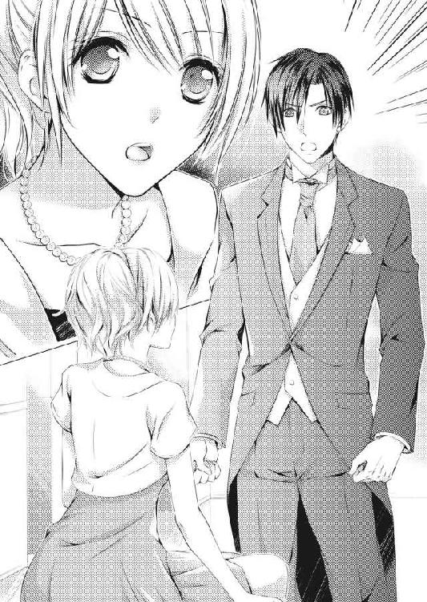

| 赤い靴のシンデレラ 身代わり花嫁の恋 (蜜夢文庫) | |
| 鳴海澪 & 弓槻みあ | |
| (2015) | |
この作品は縦書きでレイアウトされています。
また、ご覧になる機種により、表示の差異が認められることがあります。
一部の漢字が簡略字で表示されていることがあります。
赤い靴のシンデレラ
身代わり花嫁の恋
contents
イラスト／弓槻みあ
プロローグ
「名前を教えてください」
多香子をベッドに横たえた男性は、真面目な顔で多香子を見下ろしてきた。
「......知らないといけませんか？」
一夜限りの関係なのに、名乗り合う必要があるのだろうか。
名乗ってしまえば他人が知人に昇格する気がして、多香子は僅かに躊躇う。
だがその人は、宥めるように微笑む。
「花嫁の名前を知らないのでは格好がつきません」
今夜だけの花嫁にしてくれと迫ったのは多香子だし、彼の言うことは筋が通っていた。自分だけが相手の名前を知り、素性を知っているのは不公平かもしれない。
こんなときでも多香子の生真面目さが顔を出す。
「槙野、多香子です」
そう言ったとたん、多香子の目にはまた涙がこみ上げてくる。
本当ならば、今日から多香子は〝槙野〟でなくなるはずだったのに、どうしてこんなことになっているのだろう。
どこで間違ったのか、わからない。もう少しで幸せに手が届いたのに、気がついたときにはなくなっていた。未練がましいけれど、今でも信じられない。
だが涙が零れる前に、彼が目尻からその雫を拭いとる。
「泣かないでください。多香子さん」
多香子の心の傷に薬を塗ってくれるみたいな優しい声には、同情だけではない、共感に似たものがある。
（ああ、この人も......哀しいのかな）
もしかしたら彼だって泣きたいのかもしれない。髪に触れてくる温かい手に多香子は目を閉じる。今はもう、何も考えないようにしよう。
「忘れたいの......」
呟いた唇に唇が重なる。舌が唇を割って口中に入り、柔らかい粘膜を舐める。
「ん......」
漏らした吐息も合わせた唇に吸い取られ、多香子の身体が熱くなる。
頼りがいのあるしっかりした手が乳房をおおい、唇が首筋を這った。
「いいですか？」
密やかに尋ねる声と同時に、指先がワンピースのファスナーを引き下ろす。
巧みな手が多香子の肌を顕わにしていく。
肩から鎖骨、そして白い二つの膨らみが、ひんやりとした空気に包まれた。
シャンタン織りの布地がしゃりしゃりと軽やかな音を立てて、ブルーのワンピースがベッドの脇に落ちていく。
「......ん......」
男の目に自分の肌が晒される羞恥に多香子は息を吐く。
熱のある唇が喉から下りて、鎖骨の窪みを這い、乳房の先に触れた。
「ん──っ」
それまでの緊張と興奮のせいなのか、唇が軽く触れただけで、多香子の身体に鋭い刺激が走り抜ける。力の入った脇腹を男の手が緩やかに撫でて緊張を解き、腿の間へと流れた。
「......あ......」
反射的にきゅっと力の入った内股を優しくその人の手が這い、奥の密やかな場所へと辿り着く。
（あたしは......本当に何をしているのだろう）
ふと過ぎった疑問も、淀みのない指先の動きにやがて解け、跡形もなくなっていった。
１．身代わり花嫁の申し込み
槙野多香子は一足歩くたびに、爽やかに吹く四月の風より、おろしたての靴のことを考える。
ずっと憧れていて、いつか買おうと決めていた『ChristianLouboutin』のパンプス。
上品なヌードカラーに、折れそうなぐらい細く高いピンヒール。そして歩くたびにちらりと見える靴底は上品に見える第一印象を裏切るこのブランドならではの、挑発的な赤。
（一歩いくらになるかな......歩けば歩くほどコスパは上がるけど、靴は傷むよね）
今日が六月の梅雨時期じゃなくて良かった。多香子の胸の内とは真逆の晴天なのが唯一の救いだ。
細く高いヒールで膝が曲がらないように気をつけながら、多香子はボーナス払いで買った靴の値段を頭から追い出す。
どうせ今日の結婚式に出るために、なんだかんだと金は出て行っているのだ。いまさらどうってことはない。
空元気で自分を鼓舞しつつも、気の進まない道すがら、多香子は本日の出費を計算してしまう。
セミロングヘアーの美容院セット代金四千円。
シャンタン織りのワンピースは、ネット通販で探しまくって見つけた、ラスト一点物セールの二万八千円。色はロイヤルブルーと鮮やかだが、花嫁を引き立てる控えめなＡラインは値段以上の見てくれのはず。
パール入りローズカラーの口紅、千円。手持ちの赤では青い洋服には悪目立ちし、仕事で使っているベージュラインでは祝いの席に相応しい華やかさにかけた。一度切りしか使わなそうなリップに出せる、ぎりぎりの値段でチョイスした。
美脚を作る着圧ストッキング三千五百円。憧れのブランドを履くのに、五足セットの安売りストッキングなんて、靴に申し訳ない。
以上、全て消費税別。
そして披露宴ご祝儀三万円、こちらは税込み。
一桁間違っているとしか思えない靴の支払いと合わせて、いったいどれだけ使ったんだろうか。
社会人としてのたしなみ。
友人の晴れの日を祝うのにみっともない格好はできない。
どんな理由をこじつけたところで、出て行った金が戻ってくるわけでもなく、自分が馬鹿なことは間違いがない。
髪はドライヤーとムースで失礼ではない程度になんとかできただろうし、洋服ならば、昨年行われた友人の結婚式で着たワンピースでも良かった。招待客も違うから、髪形やアクセサリーで変化をつければ、同じ服でもそうそう気づかれないだろう。
（第一、気づかれようと、みっともなかろうといいじゃない──祝う気持ちなんて、これっぽっちもないくせに）
多香子は高級パンプスの足先にぎゅっと力を込めた。
本当に祝う気持ちがあるんだったら、この靴は買わない。
一番美しくあるべき花嫁が履く靴より絶対に高価なヒール。淑やかな曲線からは想像もできない、挑むような真っ赤な靴底。
──おめでとう。きれいだわ。
そう言いながら花嫁に向かっていくとき、多香子の足元がきっと招待客の目を引き寄せる。
──あら、とても素敵な靴だけど......こういう場にはちょっと派手すぎじゃないかしら。あの靴......。
──あれじゃ花嫁より目立ちたいみたいじゃないの。
口うるさい親戚たちが、ひそひそと囁き合うのが聞こえるようだ。
多香子だってわかっている。礼儀に厳しい祖母は、親族が集まる法事や祝いの席での、孫たちの振る舞いや服装にうるさかった。そのおかげで多香子は社会人になる前から、ある程度の冠婚葬祭のマナーが身についていたと、自分でも思う。
結婚式は花嫁を引き立てつつ、花を添えることが友人の役割であり、エチケットだ。だから本当は、シンデレラのガラスの靴のように、履くだけで主役になれるものを選んではいけない。
今日選んだこの靴には、履いた女性を主役にする力がある──それを承知で、多香子はこの靴を買った。
（だって、本来ならば今日の主役はあたしだったんだから）
多香子は顔を上げて、膝を伸ばし、精一杯靴が美しく見えるようにひたすら前に進む。
だが多香子の頑張りは、披露宴が催されるホテルに着くまでしかもたなかった。
（あ、足が突っ張る......もう駄目）
入り口で会釈をするベルボーイに引きつった顔でなんとか頷き返した多香子は、よろよろとロビーの椅子に向かう。
こういうピンヒールを履く女性は車を使うべきだ。この靴で五分以上、アスファルトの上を歩くなんて馬鹿げている。
最寄り駅からホテルまでタクシーを使わなかったのを後悔しながら、多香子は倒れるように座り込んだ。
颯爽と歩いたつもりだったが、真新しいピンヒールはハリウッド女優でもパリコレのモデルでもない多香子には荷が重すぎる。
無理をしすぎて痺れたアキレス腱を、深く屈み込んだ情けない格好で揉んだ。勢い込んで歩いたせいで、せっかくアップにしたヘアスタイルも崩れたような気がして、いっそう滅入る。
なんとか足を宥め、十二階の披露宴会場に行って、心穏やかな笑顔を見せなくてはならない。
（浮き世の義理だもの）
そう思ったとき、自分ばかりが「礼儀」と「義理」を要求される立場に甘んじなければならないことに、抑え込んでいた怒りが多香子の胸にまたむくむくと広がる。
身体の内側から出てくる黒いもので全身がいっぱいになり煤けていく。
（花嫁になるはずだったあたしが、どうしてこんなことになっているわけ？）
恋人に衝撃的な別れを切り出された日から、幾度となく自分自身へ問いかけた言葉を、多香子はまた繰り返した。
思うにまかせない憧れのハイヒールは、まるで上手くいかない多香子の恋愛みたいだ。
おまえにはまだ無理だと言われているようで、足の痛みがひどくなる。
花嫁の座から滑り落ちたあの日を、靴を履きこなせない苛立ちと一緒に、多香子は思い返さずにいられない。
＊ ＊ ＊ ＊
「冷めないうちに早く食べて、祐くん。食べ終わったら、結婚式場のパンフレットを集めてきたから一緒に確認しようよ」
小さなテーブルに座った祐樹に、多香子は手早く作った青椒牛肉絲とスープを勧めた。実家暮らしの多香子だが、両親が働いていたので、早くから家事を手伝ってきた。子どもの頃は何もしなくていい友人が羨ましかったが、今となれば有り難いと思える。家事はそれなりに身につき、慌てて料理教室に駆け込まなくても、一人暮らしの恋人のために簡単な料理ぐらいは作れる。
大学時代、映画鑑賞倶楽部という他愛ない遊びのサークル活動を通じて、他大学の飯島祐樹と知り合い、付き合ってもう六年が経つ。
その間に祐樹は卒業して中堅どころの総合商社に勤めた。二年後には多香子も就職し、あっという間に三年。気がついたら多香子は二十五歳、二歳年上の祐樹は二十七歳になっている。
少しばかり真面目すぎて、考え方が固い多香子と、少しばかりいい加減で何事も要領のいい祐樹は、相性が合うらしく、喧嘩もなく続いていた。
ただ一度だけ、多香子が就職活動をしているときに、気になる擦れ違いはあった。
「接客なんて大変な仕事じゃない。結婚しても続けられる楽な仕事にしたらいいよ。女の人は結婚したら家事とかあるしさ」
銀座の老舗デパート〝三鶴屋〟を、就職先の第一希望にしたときの祐樹の反応に、かちんときた。
「楽な仕事なんて、この世にないよ。そんなこと祐くんだってわかってるでしょう」
毎日就職活動のために、慣れないスーツで走り回っていた多香子は緊張と疲れのせいで、口調がきつくなる。
「でもさ、三鶴屋のスタッフなんて残業がたくさんありそうだろう。普通の事務でいいじゃないか」
「普通の事務って何よ。そんな言い方、ちょっと失礼じゃない」
祐樹の会社での営業成績はいいらしいが、上に立ったもの言いにいらつく。
「えー、でもさ、うちの会社じゃ事務の女の子は定時上がりで、やれカルチャースクールだ、飲み会だって感じで、満喫してるよ」
「定時に上がったからって、仕事が楽なわけじゃないでしょ。時短が叫ばれてるんだから、就業時間内に仕事を片付けるようにするのは時代の流れだよ」
「だからさ、そういうのがいいって言ってるだけじゃないか」
多香子の表情がどんどん強ばるのを見て、さすがに祐樹が譲歩する。
「結婚しても続けられる仕事にしたらってことだよ。深読みするなよ」
「三鶴屋の女性スタッフは結婚しても働いてるよ。ずっと仕事は続けたいから、女性への福利厚生は調べてるもの」
「うーん......でも接客って時間が不規則になりそうだな......。家庭内にしわ寄せがくるんじゃないかなあ......多香子がそれでいいならいいけどさ」
納得しきれないといった祐樹の不満顔に多香子は、（女だけが家事をやるわけじゃないよ）と、言いたくなる。だが、いつまでも言い争いが収まらない気がして、その言葉を飲み込む。
何に対してもあまり深く追求しない祐樹が、ここまでいろいろ文句があるということは、自分との結婚を考えてくれているからに違いない。そう思えば祐樹の言うことも、わからなくもない。
取り返しのつかない喧嘩になる前に多香子は気持ちを切り替えた。
「子どもの頃から靴が好きでたまらなかったの。大人になったら絶対、靴に関われる仕事をしようって決めてたんだから。三鶴屋は確かに忙しいかもしれないけれど、三鶴屋の品揃えの豊富さと売り場の雰囲気には、ずっと憧れてた。せっかくなら好きなところで働きたい。祐くんだってそうでしょう」
「そんなに気張らなくていいのにな」
顎の細い、剝きたての卵みたいにつるりとした今風のきれいな顔をしかめたものの、祐樹もそれ以上の意見は控え、その場はうやむやに収まった。
そんな些細な食い違いはあったものの、多香子は就職活動に励み、無事三鶴屋に入社することができた。
研修後、希望どおり靴売り場のスタッフとして配属され、現在はレディースシューズフロアを担当している。高級百貨店には目の肥えた年配客も多いし、常連客も多い。毎日が勉強と緊張の連続だったが、それにもようやく慣れたと、自分でも思う。
新人時代のように仕事に振り回されなくなった多香子に、周囲は〝結婚〟を勧めてきた。
──もう彼とも付き合いが長いんだから、さっさと結婚しちゃえばいいじゃない。
──いつまでも若くないからな。
──ぼーっとしていると誰もいなくなるわよ。
──彼って結構イケメンだし、仕事もちゃんとしてるし、ぱっと見はチャラいとこあるけど、いいんじゃない。
──そうそう、結婚すれば軽いところのある男性でも落ち着くしね。
祐樹との付き合いを知っている周囲の勧めに、多香子はなんとなくその気になる。
まだ少し早い気もするけれど、付き合いだけはそれなり長い。多香子もいつかは結婚するつもりでいるし、多香子の就職に口を出してきたということは、祐樹もそう考えているに違いない。
お互いに結婚を意識しているなら、これ以上付き合い続けるよりは、適当な時期に落ち着いたほうが互いのためかもしれない。
──そろそろ、結婚するのもいいよね。
さすがに自分からのプロボーズには緊張したが、断られる気はしない。どきどきして答えを待つ多香子に、祐樹は「そうかもね」と軽く返してきた。
祐樹の返事が曖昧で軽いのはいつものことで、これは「いいよ」という意味だ。
両親や親しい友人に、祐樹と結婚することを告げた多香子は、あれこれ準備に忙しい。
挙式をしないカップルも多いし、友人だけに披露するという人たちもいるし、それはそれで軽やかで、爽やかだ。けれど多香子はオーソドックスな手順を踏みたい。花嫁衣装を着て、神さまの前で夫婦の誓いをして、お世話になった人たちにお披露目する機会を作りたかった。
「あたしはそう思うんだけれど、どうかな？」
結婚するとなれば、最初の二人のイベントである結婚式は話し合って決めたい。
「......ああ、うーん......多香子の好きにすれば」
「何、それ。祐くん、やる気ないでしょ？」
「そんなことはないけど、結婚式って女性のためのイベントだし、俺はわかんないなあ」
正面切って反対しないものの、そう言ったきりで、祐樹は積極的に動いてくれない。
何でも自分勝手に決めてしまう俺様男よりはずっといいけれど、こういうときはもう少し引っ張ってくれればいいのに。多香子はそう思いながらも、自分から率先して動くことにした。
「あたしたちはまだ働いて間もないから、お式はそんなに派手じゃないほうがいいと思うんだ。でも仕事関係のご招待ははずせないよね。披露宴は人数を絞って、二次会でお友だちに楽しんでもらうっていう案はどうかな？」
食事の最中もどうしてもその話になる多香子を、祐樹は「ああ」とか「うん」とか、曖昧な返事で受け流す。
まるで食事中に新聞を読んで、せっかく作った食事を味わわずに、妻をいらいらさせる夫のようだ。
さらさらとした前髪を片手で搔き上げながら、違うことを考えているらしい祐樹に、多香子は少し呆れる。
長い付き合いのせいとはいえ、今から返事が所帯じみているのはどうかと思う。
（沙耶に会ったときは、あんなに調子よく相手をしてたのに......ん、もう）
偶然多香子の友人に出くわしたときの祐樹の態度を思い出して、多香子は心の中で文句を言う。
あのときの祐樹は、さすが仕事のできる営業職だと思わせるような、人を逸らさない笑みで挨拶をした。
──萬歳沙耶さん？ いやあ、すごく縁起のいいお名前ですねえ。あやかりたいなあ。幼なじみだなんて、多香子も随分萬歳さんの運を分けてもらったんじゃないですか？
初めて会ったばかりとは思えない饒舌振りに、友人は目を丸くしていた。
あまりの愛想の良さに、少々やり過ぎだと思うけれど、友人相手にむすっとされるよりは有り難い。
けれどあの熱意の半分ぐらいは、こちらに向けてくれてもいいだろう。
「ねえ、聞いてるの？ 祐くん。そんなに人任せだと全部決めちゃうよ」
雰囲気が悪くならないよう、冗談交じりに発破をかけると、祐樹はふいっと顔を上げた。
「あ、ごめん。話を聞いてないわけじゃないよ」
いつになく強ばった祐樹の表情に、多香子は笑顔を作る。だが祐樹は表情を崩さず、多香子と目を合わせた。
これだけ長く付き合っていても祐樹のこんな顔を見たことがない。
瞬きをしない目。いつも笑っている唇が強く引き結ばれ白くなっている。
そして何故か、今にも走りだしそうに浮かせた腰。
「どうしたの？ 具合が悪い？ お腹でも痛いの？」
「あのさ、多香子」
指が白くなるほど祐樹がテーブルの端を握りしめて、乾いた唇を開いた。
「俺さ、結婚できない」
突然の言葉に多香子は、何も言うことを思いつけず、祐樹の顔を見つめた。
（結婚できない？ いつもの冗談だよね？）
内心で必死に今の言葉を否定するが、抑揚のない掠れた声の響きが噓ではないと感じさせる。
結婚できないのが本心なら、理由はなんだろうか。多香子はぐるぐる回る頭で考える。
「......どうして？ まだ早い？」
要領のいい祐樹は会社でも上手くやっているようだが、実際はいろいろ大変なのかもしれない。それなら結婚はもう少し先延ばしでも仕方がない。
多香子は必死に納得できる理由を考える。
だがテーブルを握りしめた祐樹は、多香子の目を避けるように、視線をあちこちに揺らして早口になる。
「俺、出会っちゃったんだ」
「出会ったって、誰に？」
「運命の人だ」
その瞬間、白かった祐樹の頰に血の色がのぼり、目に熱が宿る。
（何？ 運命の人ってどういうこと？）
言われたことを理解しようと黙り込んだ多香子とは逆に、勢いを盛り返した祐樹が身を乗り出す。
「君じゃない人を好きになってしまった。というか、君との愛は幻だったと、知った。彼女と会ったのはもう、運命なんだ！ 彼女に会って俺は、本当の愛というものがわかった気がする」
ぱっと椅子から立ち上がり、その勢いのまま祐樹は床に這いつくばる。
「人は誰でも恋をするけれど、本当の愛に出会える者は一握りって昔から言うだろう？ 俺はその奇跡を手にしたんだ。こればかりはもう運命としか言いようがない。多香子もそんな恋をしたら、俺の気持ちがわかると思う」
「......運命......って」
せっかく作った夕食に手をつけず、ドラマの登場人物にでもなったみたいに土下座する祐樹に、多香子は心が冷えていく。
（本当の愛に出会える者は一握り......って、いったい誰がそんなこと言ったの？ 聞いたこともないけど、シェークスピアとか？）
ばかばかしい言い草に呆れながらも、激しい失望がこみ上げてくる。裏切られたという絶望感も押し寄せてくる。
それでも目の前で自分の言葉に酔い、真実の愛だの奇跡や運命を訴える男の姿に、罵る気持ちが薄れる。
自分の行為を恥ずかしいとも思わず、ここまでして別れたがる男を、引き留めることなんてできない。
たとえ引き留めたところで、かつての気持ちは戻らない。
悔しさと哀しさ、怒りと屈辱で、心も頭もぐちゃぐちゃになりながらも、多香子は尋ねる。
「運命の相手って......誰？」
聞いても、もう取り返しがつかないことだし、聞いたところで、嫌いな人間と苦痛が増えるだけだ。それでも、この期に及んで物わかり良く「はい、そうですか」なんて済ませるわけにはいかない。
（奇跡的に巡り会った人っていったい誰？）
大学時代のサークルや、六年の間の付き合いを通じて共通の友人も多い。けれどその中に結婚寸前の男に手を出す人がいるとは思えない。むしろ、みんな二人の仲を応援してくれている。
運命の人っていうからには、予告もなくいきなり出会った相手だろう。
六年間、ざっと二千日、時間に換算すれば四万八千時間、多香子は祐樹と過ごした。その時間をたった数日で蹴散らしたのはどんな女性だ。
その運命の相手とやらの名前を、絶対に聞き出してやる。
そして永遠に呪ってやる──。
暗く投げやりな気持ちで多香子は言葉を重ねる。
「誰？ どんな人？ いつ、どこで会ったの？」
「ごめん！ 多香子。ほんとにすまないと思っている」
多香子の怒りをやり過ごすためとしか思えない姿勢のまま、祐樹は上目遣いで多香子を見あげた。
「ばんざい......さん」
「バンザイ、って何の冗談なの？ お手上げってこと？」
多香子は驚いて声のトーンを抑えた。
都会的な容姿と雰囲気が、自他共に認める祐樹の自慢だ。どんなに年を取ってもオヤジギャグを言うようにはなりたくない、というのも口癖だ。
こんな駄洒落を口走るなんて、もしかしたらどこか悪いのだろうか。
「いや......そっちのバンザイじゃなくてさ。萬歳沙耶さんのことなんだ。ほら、多香子も知ってる......」
「沙耶って、あの沙耶？」
萬歳沙耶──知っているも何も多香子の幼なじみで、祐樹に紹介したのは多香子自身だ。
「どういうこと、それ？」
それまでどこかにあった冷めた気持ちが吹き飛んで、声が裏返る。
偶然沙耶にあったのは確か二ヶ月少し前。本当に彼女が相手なら、ばかばかしいほどあっという間だけれど、ロミオとジュリエットは一週間もかけずに恋に落ちて心中したのだから、二ヶ月あれば運命の恋には充分だ。
だが物語ならともかく、相手が自分の友人となれば別だ。
「......沙耶が相手ってこと？ 沙耶は幼なじみだって言ったよね。沙耶にはあなたを恋人だって紹介したよね？ まさか二人で私を騙してたの？」
──透明感があって、可愛い人だね、萬歳さん。
あのとき、別れたあとも祐樹は沙耶を褒めた。
幼なじみとは言え、普通のサラリーマン家庭に育った多香子と違い、沙耶は有名和菓子チェーン店社長を祖父に持つお嬢さまだ。かなり天然なところはあるが、育ちの良さからくる素直さが長所で、学校、仕事と互いの生活環境が変わっても長い付き合いが続いていた。
多香子が三鶴屋に入社したときも、沙耶は手を叩いて喜んでくれた。
──お祖父さま、お祖母さま、それにパパもママも三鶴屋さんの外商でお買い物しているわ。とってもいいお店よ。良かったわね。
他の人が言えば、嫌みに聞こえかねない言葉も沙耶なら許せた。世間からずれているところが、沙耶の欠点でもあり、いいところでもある。それがよくわかっていた多香子は、沙耶流の祝福も素直に受け取った。
そんなふうに、彼女はいつも悪気はない。けれど、悪気がなければ何をしてもいいわけではない。
まさかあの沙耶が、友人の恋人を取るなんて──。
可愛い人だね、と友人を褒める祐樹に笑顔で頷いた、あのときの自分が間抜けに思え、いっそう怒りに火がつく。
「彼女を責めないでくれ。俺はどうしても彼女が忘れられなくて、君と別れたって言った。彼女は君のことを、ただの元カノだと思ってる」
「......あり得ない......なんでそんな噓をついたの？」
「噓っていうか......だから、これは運命なんだ。俺も逃れようがなかった」
自分に酔っているとしか思えない言い草にあ然とする多香子に、祐樹はここぞとばかりにたたみかけてくる。
「君は強い人だから、一人でも大丈夫だろう？ 彼女は俺がついてないと駄目なんだ。根っからのお嬢さまっていうか......天使っていうか」
天使が他人の恋人に手を出すわけがない。
だが幼なじみを罵りたくなくて多香子は言葉を飲み込む。
天使のような可愛い友人を責め、夜叉の顔になりたくない。
祐樹に比較されたくない。
激しく混乱する多香子の胸の内など忖度せず、祐樹は切々と続けた。
「沙耶は俺が初めての相手なんだ。そんな純真な子を裏切れないだろう？ 男としての責任なんだよ」
その言葉で多香子は一切の修復を諦めた。
（世間ずれしているあたしは裏切っていいってことなんだ）
ばかばかしいのと泣きたいのを、多香子は堪える。
こんな男の前で泣くなんて、悔しすぎる。
箸を握りしめた多香子は、冷え切った青椒牛肉絲を貪り食べることに専念した。
＊ ＊ ＊ ＊
青椒牛肉絲と祐樹の顔は金輪際見たくない。
言いたいことを全て、オイスターソース味のピーマン、牛肉と一緒に腹の中に収めたものの、怒りが消えたわけではない。
言いたいことがありすぎて、却って言えなかっただけだ。
〝初めての相手〟〝純真な子を裏切れない〟と、臆面もなく口にした祐樹の頭の中を見てみたい。
とっくのとうに忘れているのかもしれないが、多香子だって祐樹が初めての相手だ。しかもそのあと、ずっと祐樹一筋だ。
（初めてがずっと続いているんですけど）
（六年経った女はもう古くて、純真じゃないってことでしょうか？ だったらあたしを古くしたのはおまえだ、飯島祐樹！）
その言葉を本能のままに叩きつけなかった、自分の理性と品性を称えてやりたい。
けれど結婚式の招待を断れなかった自分の弱腰は罵りたい。
ふかふかの椅子に座り、ふくらはぎをマッサージしながら、多香子はため息を押し殺す。
「多香子には私を祝福してもらいたいの。祐樹さんとのことは運命だから、多香子も喜んでくれるでしょう？ 幼い頃からのたった一人の親友だもの」
天使のような笑みを浮かべ、超一流ホテルでの披露宴の招待状を手渡ししてきた友人に、コーヒーをぶっかける代わりに出席を約束したのはどうしてだろう。
紺色のスーツ姿の自分に比べ、シフォンのふわふわしたワンピースを着ていた沙耶が、あまりに脆く見えたからかもしれない。そして相変わらず、沙耶にまったく悪気がなかったからなのかもしれない。
幼い頃から沙耶と紡いだ温かい思い出が、多香子に沙耶を突き放すことをさせない。
沙耶の無垢さは、あらがえない暴力になって多香子から逃げ場を奪ってくる。
「......あのね、沙耶......こんなことお祝いのときに言いたくないけど、祐......あ、飯島さんとはあたし──」
「お付き合いしていたのよね。祐樹さんにもそう聞いているわ」
小首を傾げ、本当に天使みたいに沙耶は微笑んだ。
「あ、うん......だから、なんていうか、沙耶の結婚はお祝いするけど、披露宴に出るのはちょっとね」
曖昧に語尾を濁したのに、沙耶はびっくりしたように丸く目を見開いた。
「どうして？ もう今はお付き合いしていないんだもの、かまわないわ。海外ではそんなときでも、ずっとお友だちでいるのは普通のことよ」
「......いや、でもここは日本だし......周りの目もあるよね......」
「そんなの関係ないわ。私も祐樹さんも、お友だちは大切にしようって決めてるの。多香子は私と祐樹さんの両方の知り合いだもの。ご招待するのが当然だわ。来てくれなくちゃ駄目よ」
ふっくりした唇が微笑み、睫の長い目が「ね？」と瞬くのに多香子はもう何も言い返す気力が起きなかった。
天然最強。
社会の常識に倣い、人は真面目に生きなければならないという、親から教えられた教訓を、このとき多香子は疑った。そして既に精神的に疲弊していた多香子は、かみ合わない相手に説明する気力などなく、出席を了承してしまった。
それにしても、万札を何枚も失ったあげく、披露宴前から後悔するなんて、とことん馬鹿だ。
自分で自分を惨めにしていることにうんざりして、人目も気にせずに、多香子はひたすら足を揉む。
目の前を行き交う何本もの足を眺めていた多香子は、ぴたりと目の前で止まった靴先に、足を揉むのをやめた。
（何？ 誰？）
じっとこちら側を向いている黒光りする紳士靴を、多香子は瞬きもせずに眺めた。
（すごく見事なフォーマルシューズ......この縫い目の出ないつま先の切り返しは、三陽山長の匠一郎。ほぼ十万円......さすがにいい靴ね）
銀座に勤めてから覚えたブランドの靴を見分け、こんなときだというのに、多香子はその見事さに感動する。
このフォーマルシューズは、披露宴に来た人に違いない。もしかしたら祐樹の関係者だろうか。
それなりの付き合いの間に、祐樹の親しい友人には会った。祐樹がことの顚末をどう説明しているかは知らないが、どうせ自分のいいように言ったんだろう。
──結婚に対する価値観の違いがクリアになってさ。お互いに納得の発展的解消っていうか。友人としてやっていこうって話になったんだ。
遣り手営業マンの祐樹に、その程度の建前は朝飯前のはず。
──彼女が、俺にはもっと違う女性が合うって......、友人をさりげなく紹介してくれてさぁ。ほんと今はいい友人なんだ。
もしかしたらそれぐらいは言っているかもしない。
あるのかないのかわからない想像で、多香子はいっそうむかむかしてきた。
その間中、自分のほうを向いて立ち止まっている靴は、微動だにしない。
（何よ？ 捨てられた女が結婚式で暴れないように、釘でも刺しにきたわけ？）
暴れるなら、結婚式の前にとっくにやってるって──そう思いながら思い切って顔を上げた多香子は、「え？」と呟いて男の顔を見つめた。
こちらをじっと見下ろしている黒いフォーマルウェアの長身の男は、年頃は祐樹とさほど変わらないけれど、祐樹の友人でも多香子の知り合いでもない。
鼻筋の通った知的な容貌は、髪形や洋服で誤魔化さなくても充分にハンサムだが、困っているらしく眉根に深い皺が寄っている。

「何か？」
多香子の顔を値踏みでもするかのように凝視してくる青年に、多香子はとうとう自分から口を開く。
「あ、すみません」
青年は形のいい目をぱっと開いて謝った。
（あら、相当いけてる）
傷ついても、男性がハンサムであることはわかる。いや、傷ついているからこそむしろ、他のことを考えたいのかもしれない。
多香子はこれから、元カレと幼なじみの披露宴に出席するという試練を忘れるように、男性の顔に見とれた。
額にさらりと流れる髪に、すっきりとした目鼻立ち。今風ではないが、見ているこちらが背筋を正したくなるような、正統派の美男子だった。
だが男性は自分の悩みに埋没しているらしく、また深く眉間に皺を寄せて、多香子に視線を据える。
「これから、ご友人の披露宴にご出席でしょうか？」
「はぁ......まあ、そうですが」
おかしな問いかけに多香子は口ごもる。
「すみませんが──本当にすみませんが──」
青年は両手の拳を白くなるほど握りしめ、思い切ったように口を開いた。
「僕と結婚してください。お願いします！」
膝につくほど頭を下げた青年のフォーマルウェアが、花婿のためのモーニングだと多香子はそのとき、やっと気がついた。
２．身代わり花嫁の新婚初夜
「新郎の小野田孝一郎くんは我が社の優秀な社員で......」
髪につけた生花のヘッドドレスに隠れたいとばかりに深く俯いた多香子は、とおり一遍の祝辞を、身を竦めながら聞いていた。
「新婦の満里奈さんは、初めてお会いしましたが、とてもお美しい方で驚きました。その上、性格も優しいとお聞きしています」
結婚式当日に逃げ出すとは、なんて優しい女性だこと。
決まり切った祝いの言葉を神妙な振りで聞きながら、多香子はひな壇の隣に座る新郎の小野田孝一郎をちらりと窺う。
孝一郎は視線を動かさず、じっと挨拶をしてくれる来賓のほうを見つめている。姿勢が良くて、相手への敬意が感じられる。どう聞いてもおざなりでしかない祝辞をする人に対しても礼儀正しい孝一郎に、多香子はちょっと感心する。
きっと育ちがいいんだろう。
そして、逃げた花嫁の代わりに違う花嫁を調達するような度胸と、破天荒さも、育ちの良さだと思えば納得できる。
空気を読む必要もなく、何かあれば最終的な尻ぬぐいは周囲の人がしてくれると、案外こういう人間ができあがるのかもしれない。
沙耶といい、この小野田孝一郎といい、自分とはまるで人種が違う。
いずれにしても変な人──というのが多香子の正直な思いだったが、それに乗ってウェディングドレスを着て、新婦を務めている自分も同じぐらいおかしな人間だ。人のことを言えた義理ではない。
「花嫁の代わりをしてください。相応のお礼はさせていただきます」
眉間に皺を寄せたまま、深々と頭を下げた孝一郎の苦悩に同情したのではない。今の多香子に人に優しくする余力など、これっぽっちもない。かといって、示された信じられない謝礼の金額に目が眩んだわけでもない。
「ご出席予定の披露宴にはこちらから、よんどころない事情で出席できないとご連絡させていただきます」
出席できないよんどころない事情──その言葉を聞いたとき、多香子は申し出を受ける決心をした。
〝披露宴を欠席する理由〟。これこそ自分のほしかったものだと、この瞬間に天啓が下りてきた。
たとえば、途中で動かなくなった電車に閉じ込められるとか、貧血で倒れてしばらく気を失うとか──とにかく、自分では避けられない理由で、ここに辿り着けなくなりたかったのだと、自分の心の底にある気持ちに気がついた。
最初から断ることもできず、かといってこの期に及んでも割り切ることさえできない、自分のちっぽけな見栄とプライドを、多香子は持て余していた。
「よんどころない事情って、どんなのですか？」
多香子の心が揺れるのを察したらしく、孝一郎の声がいっそう熱を帯びる。
「そうですね......こちらにいらっしゃる途中で私の関係者の車にちょっとぶつかってしまって、病院へ運んだというのはどうでしょうか？ もちろん、軽い怪我で、でも念のためこちらが検査をお願いしたということにします。お知り合いが心配されるといけませんので、そこはもちろん注意してお伝えします」
ひたすら低姿勢で説得にかかる孝一郎の熱意を、多香子は皮肉に受け止める。自分が事故にあったところで祐樹と沙耶が心配するだろうかと、冷めた感想を抱いた。
けれど、祐樹たちが多香子をないがしろにする悔しさよりも、自分が花嫁の代役をするばかばかしさよりも、披露宴に出ないで済むことが、たとえようもなく魅力的に思えた。
「もし何か不都合なことが起きても、もちろん責任は取りますから」
多香子の心が花嫁の代理をする方向へ、大きく動いたのを見抜いたように、駄目を押してきた孝一郎に多香子は頷いた。
そしてあれよあれよという間に多香子はウェディングドレスを着て、花嫁の顔をしてひな壇に座っている。
こんなことがばれないものだろうか。
大勢の人を騙すことに加担している罪悪感と、いつ正体が暴かれるかもしれないという恐怖で、今ごろ冷や汗が出てくる。
だが、ホテル付きの凄腕の美容師に花嫁のメイクを施された多香子は、自分でびっくりするぐらい変貌した。
四千円もかけて美容院でセットした髪はさっさと解かれ、付け毛を足した華やかなハーフアップ。少し眦の下がった大きな目はアイラインとマスカラでナチュラルに艶めく。真っ直ぐな鼻筋が真面目な印象を与える顔立ちは、色白が引き立つピンク系のメイクで全体的に優しい雰囲気を醸し出す。
ひんやりした絹地の豪華なウェディングドレスは、汚れも皺もなく、おそらくオーダーメイドだ。ウェストを後ろのリボンできつく締めただけで、特に問題もなく着こなせた。今時の女性としては小柄で骨格も細い多香子だが、実際にこれを着るはずだった人と、体型は似ているらしい。けれどデザインは多香子が絶対に選ばない、おとぎ話のプリンセスのような仕立てだ。
これだけで、新婦の全体像がぼんやりと想像できる気がする。
仕事には向かない、縦ロールのあでやかな髪形と化粧が似合う女性。もしかしたら働く必要などないお嬢さまなのかもしれない。多香子は当たり前のように就職したが、沙耶は祖父が趣味で経営する画廊で、社会勉強程度のアルバイトをしているだけだ。きっと同じようなタイプの人に違いない。
そういうお嬢さまに煮え湯を飲まされた自分が、似たような女性になりすますなんて、人生って本当に面白い。
自棄気味でそう思いながら、どうしてそんなお嬢さまが、条件の良さそうな結婚から逃げ出したのかと不思議だ。
隣の孝一郎にしても、年齢は三十歳前後だと思うが、ハイクラスに属しているのは間違いないだろう。ブランドの靴をスニーカーみたいに気取らずにはきこなし、モーニングもしっくりと身体に馴染み、初めて着た借り着のように見えない。
きっと似合いのカップルだっただろうに、どんな食い違いがあったのだろう。もっとも男女のことなんて、本人たちにさえどうしようもないことがある。
花嫁になれなかったばかりか、偽の花嫁になってしまうなんて、多香子にとってとことん花嫁は鬼門らしい。
だが心中に暴風雨が吹き荒れている多香子に比して、ここに列席している人は孝一郎を筆頭に、誰もが平静に見える。両家の親族もまったく何事もないように、笑顔を崩さないが、どういう人たちなんだろう。
上流階級は喜怒哀楽を出さないのが、当たり前なのかもしれないけれど、一緒に暮らしたら退屈そうだ。自分は笑ったり、泣いたり、腹が立てば怒ったりする、普通の家庭を築きたい。
今は何の当てもなくなってしまったけれど──。
気を紛らわすために、どうでもいいことを考えながら、多香子は時間が早く過ぎていくことを願った。
目の前に運ばれてくる料理は、見た目だけの蠟細工ではなく、香りといい、盛りつけといい本当に美味しそうだ。こんなときでなければ、ちゃんと食べたのに残念だと、多香子は目の前で冷えていく料理に、内心で詫びる。
こんな一流ホテルで、見事なフルコースが並んだテーブル。
流れてくる祝辞によると、新郎の勤め先は祐樹の勤務先よりずっと大手の有名商社で、新婦はお嬢さま学校と名高い名門校に通い、途中から留学しているらしい。仕事には触れていないので、多香子が想像したように、金銭的な事情では働く必要がない人のようだ。
垣間見えるものからも、世間体が大切で大きな間違いをしそうにない環境だ。
だが次から次に湧いてくる疑問すら、持ってはならないように、披露宴は淡々と進む。
最初は息を吸うのも緊張し、加担してしまったことの重大さとその罪悪感に押しつぶされそうだった多香子は、隣の孝一郎があまりに落ち着き払っているので、だんだんと腹が据わってくる。
万が一何があっても責任を取るのはこの人だ。
隣で静かに座り、多香子の前で苦悩していた余韻の欠片も見せない孝一郎に、多香子は自分の罪悪感を丸投げする。
この男なら責任逃れをせずに、何でもやってのけそうだ。
自分を有利にするためだけに「強い人だから」だの「天使」だのという言葉で、女を傷つけたりしないだろう。隣に座っているだけで、守られているような奇妙な安心感を与えてくれる孝一郎に、多香子は確かな根拠はないがそう感じた。
二股のあげく土下座までした祐樹とは、違う種類の人に見える。
それに本来なら、自分も今日花嫁衣装を着るはずだった。こうなるのは祐樹がお題目のように唱えていた〝運命〟かもしれない。
とうとう、そう開き直った多香子は、身代わりの披露宴を無事に最後までやりきった。
「どうもありがとうございました。お礼の申し上げようもありません」
着替え終えて元の格好に戻った多香子に、孝一郎が花婿姿のまま深く頭を下げた。
「あ......いいえ。......お役に立てたようで......」
何より、と言っていいのかわからず多香子は言葉を濁す。
「じゃあ、あの、私はこれで──」
約束も果たしたし、祐樹と沙耶の披露宴にも出席しなくて済んだ。
安堵よりも先に、怒濤の一日を緊張して過ごした反動が今ごろ来た。激しい疲労で目が回り、多香子はふらりと立ち上がる。
「待ってください。お礼をまだお渡ししていません。直ぐに用意してきます」
帰ろうとした多香子を、孝一郎は驚いて引き留める。
「お礼......あ」
そういえばそうだ。
最初からその約束だった。けれど礼がほしくて引き受けたわけではないので、突発的な出来事に流されている間に、すっかり忘れていた。
多香子は孝一郎を見あげて、ゆっくりと首を横に振った。
「いいです」
「はい？」
ぱっと目を見張った孝一郎の顔は、多香子が思わず笑いを誘われるぐらいに無邪気に見えた。この人が何を考えて、代理の花嫁を立てたかはわからないが、悪気があったとは思えない。
どうしようもない事情があったに違いない。
人は誰でもそんなことがあると、今は少しだけわかる気がする。
「お金はいいです。それよりすごく疲れたのでもう帰ります」
立ち上がった多香子の腕に、孝一郎が慌てて手をかける。それでも乱暴にならないのは、育ちの良さなのかと想像しながら、多香子はふわっと触れてきた孝一郎の手に見入った。
「そんなわけにはいきません！ 約束ですし」
引き留める孝一郎の顔色は青く、本当に困っているようだった。
「ああ──そうだ」
何かを思いついたように、孝一郎の顔色がぱっと明るくなる。
「このホテルのスイートで待っていてください。そこなら休めます」
「スイート？ ここのスイートルームですか？」
このホテルのスイートルームは一泊で十万円以上のはず。ラブホテルじゃあるまいし時間貸しもない。
不審のあまり、胡乱な目つきになったらしい。
孝一郎がいっそう慌てて、早口で説明する。
「おかしな意味じゃないんですよ。ここで結婚式を挙げると一泊スイートがサービスなので、今日は自由に使えるんです」
「そうですか。すごいですね」
最後まで豪華な披露宴スタイルに素直に感想を言ったものの、新婚カップルが使う予定だった部屋を使うなんてあまりに節操がない。
「でも、それもいいです。休まなくても大丈夫ですから」
「よくありません！」
孝一郎が決然と多香子の腕を握り直した。それでも怖いと感じないのは、多香子に触れてくる手があくまで優しく、品がいいからだ。
「とても顔色が悪いです。無理なことをお願いしたのだから当たり前です。このままお帰しして何かあったら、僕の責任です。そんなことは絶対にできません」
さっきまでの低姿勢が噓のように孝一郎はきっぱりとした口調で言うと、多香子の腕を引いて廊下に出る。
「あ、あの......」
多香子は少し抵抗したものの、人目が気になる。
建前とはいえ、さっきまで夫婦を演じていたのに、もう喧嘩をしているなどと思われては、孝一郎に悪い。
どんなおかしな依頼でも引き受けたからには、最後まできちんとやらなければならない。浩一郎は〝約束〟と言ったが多香子は契約を交わしたつもりだ。仕事中のような気持ちで、多香子はとりあえず孝一郎に従う。
ラベンダーの香りがほのかに漂うエレベーターで十五階のフロアに向かう。下りるときにハイヒールで躓きかけた多香子の腰を、孝一郎がさりげなく支えてくれる。
よろける多香子に恥をかかせないエスコート振りも鮮やかに、「こちらです」と言った孝一郎は部屋のキーを開ける。
「ここで待っていてください。好きに使っていいので、僕が戻るまでどうぞゆっくりしてください」
孝一郎が出て行ったあと、残された多香子はスイートルームの豪華さに目を見張る。
まるでデパートの家具売り場のような広さに、備えつけの家具の見事さ。寝室は別にあるらしく、奥に扉がある。
「すごい......ちょっと、だけ......見るだけね」
言い訳しながら、最初はおそるおそる近づいたものの、どっしりしたソファの座り心地をどうしても確かめたくて、多香子はそっと腰を下ろす。
「うぁーぉ」と、奇妙なうなり声が出るくらいの座り心地の良さに感動しながら、多香子はほどよい高さの背もたれに身体を預けて、深々と息をつく。
「ああ、極楽だわ」
うっとりと目を閉じていた多香子は、ノックの音に慌てて目を開ける。孝一郎だと思い、髪を撫でつけながらドアまで飛んでいく。
遠慮したくせに、堂々と寛いでいるのを見られるのは恥ずかしかった。
だがノックの主は孝一郎ではなく、紅茶とチョコレートトリュフのルームサービスを届けに来たボーイだった。
「......お部屋を間違えたのではないですか？」
首を傾げる多香子に、ボーイがにこやかに一礼をする。
「小野田孝一郎さまからです。〝しばらく時間がかかるのでこちらを召し上がってゆっくりなさってください〟、とのご伝言を承っております」
ガラスのテーブルの上、銀色のトレーでサーブされた紅茶の濁りのない水色と、艶やかなトリュフに、多香子は生唾がこみ上げてきた。
気の進まない披露宴のせいで今朝はまったく食欲がなく、ヨーグルトドリンクを飲んだだけで、美容院から真っ直ぐにホテルに来てからは何も食べてない。
ひな壇に豪華な食事がぎっしりと並んでいたが、もちろん一つも口にできなかった。
甦った食欲に誘われ、多香子はそろそろとティーカップを手に取り、紅茶を口に含む。
「いい香り......美味しい」
一人なのに声に出るほど香りが良く、雑味のない味も好ましい。
「ああ......なんか、幸せ」
濃厚なチョコレートトリュフを口中で味わい、多香子はふーっと肩の力を抜いた。
なんて気の利く人だろうか。
多香子が何も食べていないことも、疲れ切っていることもちゃんと気がついていた。こんなときにはお茶とお菓子が、どれほど女性の心を慰めて、元気にしてくれるかを知っている。
口先の慰めじゃなくて、多香子の心が休める静かな時間と、身体の元気を取り戻せるものをくれた。
こんな気の回る人を捨てて逃げるなんてもったいない──多香子は逃げ出した新婦にそう言いたくなる。
何が嫌だったのか知らないけれど、自分よりはよほどいい男運じゃないだろうか。
そう思いながら紅茶を飲み干し、高級そうな三粒のトリュフも食べ、多香子は満足のあまりお腹をさすりつつ目を閉じた。
多香子が目を覚ましたときには、日はとっぷりと暮れ、向かい側のソファーで礼服の上着を脱いだ孝一郎が本を読んでいた。
「あ──っ」
叫び声を上げて姿勢を正した多香子に、本を手にしたまま孝一郎がにこっと笑った。
初めて見たときに眉間に寄っていた皺はすっかり取れて、白いドレスシャツだけのせいか随分若く見える。
三十代かと思ったけれど案外もっと若くて、もしかしたら自分より下かもしれないとさえ思う。
「少しは休めましたか？」
「はい、はい。ええっと、大変に失礼をいたしました」
真っ赤になって深く頭を下げた多香子に「いいえ、そんなことはありません」と孝一郎が優しい笑みを浮かべる。
「起こそうかと思ったのですが、あまりに気持ちよさそうだったので。女性の寝顔を許可なく見るのは、失礼だとはわかっていたのですが......」
言葉以上に反省と羞恥が浮かぶ顔が妙に可愛らしく見え、「たいした寝顔じゃなくてすみません」と多香子は少し茶化して答えた。
多香子が冗談に紛らわせたことに、孝一郎はほっとした顔をして、照れた目で笑う。
いかにも育ちの良さそうな表情に、多香子はふっと思いついたことを尋ねる。
「小野田さんておいくつですか？」
言ってしまってから、「あ......ごめんなさい。失礼なことを聞いてしまいました」と取り繕ったが、孝一郎はぱっと花が咲くような笑顔を見せて、多香子の困惑を封じ込める。
「別にかまいませんよ。ちょうど三十です」
「......若く見えますね。私と同じぐらいかと思いました」
意外ですね、と目を丸くすると、孝一郎は微笑んだものの、多香子に年齢を聞いてくるような品の悪いことをしない。だが聞いてしまった手前、言わなくては卑怯な気がして多香子は、自分から年齢を打ち明ける。
「あの、あたしは二十五なんです」
「そうですか......じゃあ、彼女と二つ違いでしたね。二十三歳になったばかりなので」
さらりと新婦の話題を持ち出され、多香子は、披露宴の間中疑問に思っていたことを口にする。
「そのおかげで、ばれなかったんでしょうか？ 新婦さんと私の年が近かったから......」
目尻の少し下がった黒目の濃い大きな目と、骨の細い華奢な身体つきで、多香子は年齢より若く見られやすい。今日のピンク主体のメイクにプリンセス風ドレスで二つぐらいならば、充分若く見えた気がする。
花嫁姿だと普段と違って見えるという思い込みも、有利に作用したのかもしれない。そう考える多香子に孝一郎は爆弾を落としてきた。
「確かに、それもあるかもしれません。ですが一番の要因は、お互いの両親以外は新婦の顔をよく知らないことです」
「はぁ？」
礼儀正しく距離を取るのも忘れて、多香子は身を乗り出す。
「知らないって、どういうことですか？ お見合いですか？ お友だちはどうなっているんですか？」
探ってはいけないという礼儀さえ忘れ、多香子は衝撃的な事実を確認する。
「お見合いとは少し違うんですが、家同士が決めた婚約なので、僕自身ですら彼女のことをよく知らないんですよ」
「......はぁ......」
家同士が結婚を決めるなんて、今時聞いたことがない。それともお金持ちの間では、普通のことなのだろうか。
あまりに世界が違うことに多香子は、乗り出した身体を引いて、頰を引きつらせた。だが孝一郎は淡々と説明を続ける。
「僕の家と、彼女の家は、遠い親族というか、一族みたいなものなんです」
「一族......ですか」
柳生一族とか、甲賀一族とか、そういう隠れ里の忍者ぐらいしか思い浮かべられず、多香子はますます返事が曖昧になる。
「そうです。ですから本当に小さい頃に互いの家同士で結婚が決まっていました」
「それは......大変ですね」
思わず正直な感想を口にすると、孝一郎が悪戯っぽい笑みを浮かべた。
「あなたのおっしゃるとおりです。だからお互いに結婚までは何をしてもいい、そういう条件になっています」
「それってつまり、結婚までは遊び回っていいってことですか？」
孝一郎の笑顔に誘われて無礼にも尋ねると、孝一郎がちょっと面白そうに「遊びじゃなくて勉強でもいいんですよ」と混ぜ返してから、真顔に戻る。
「そんなわけで彼女は、自分の希望で中学生のときからスイスの寄宿舎に入りました。それ以来、僕は彼女に会っていません。どうせ結婚のときは戻る予定だったので」
「それが戻らなかった......？」
不謹慎だと思いつつ、聞かずにはいられない。あまりに現実離れした話で、ついつい確かめたくなる。
「ええ。ドレスも、靴も、食事も、全てぬかりなく整えたんですが、肝心の花嫁がいませんでした。式は身内だけですから何とでもなりますが、披露宴は外部の方をお招きしてあるので、さすがに花嫁なしではできません。婚約者の不祥事は僕の責任です。僕が対処しなければなりませんでした」
「対処っていっても......あの、婚約者が外国にいらっしゃるなら、飛行機が間に合わなかったとか......そういう理由をつければいいんじゃないですか」
いまさらどうしようもないのに、具体的な提案をした多香子に孝一郎は言い返しもせずに、「いい考えです」と、深く頷く。
「ただ、海外にいるならなおさら、それも見越して戻ってくるのが普通ですからね。切羽詰まった出張というわけではないのは、彼女の経歴紹介でわかります。それに私の会社は海外で動いている人間も多いので、そういう適当な噓は直ぐに見抜かれます。飛行会社の運行状況も株価に影響しますから」
「ああ......はぁ......そうですか」
そこまで細かいことに気を遣うのに、実際にやることは大胆すぎる。
その思いが顔に出たらしい。孝一郎が笑みを見せた。
大人の強かさが感じられるその笑みを、多香子は意外な気持ちで見つめる。単なるお坊ちゃんかと思ったらそうでもないらしい。
「小手先の言い逃れより、大きな噓のほうが見破られないものです。常識じゃ考えられないような噓は、案外すんなりと信用されます」
自慢する様子はないが、根底に自信が滲む口調。孝一郎の剛胆さに多香子は気圧される。
「もちろん、それを一緒にやり遂げてくれる人が必要でした。あなたにはとても感謝しています」
まるで仕事の成功を褒めるような言い回しに、多香子はむっとする。
約束を破った婚約者の心配をするわけでもなく、恋に破れた男の荒んだ素振りもない。ただ、突然起きた困難な事業を、成し遂げたような満足感だけが伝わってくる。
（結婚を仕事の一つみたいに考えているから、こんなことになるのよ。結婚は愛よ、愛）
口に出さずに多香子は毒づく。
（だいたい上手いことやり過ごしたって悦にいってるけれど、もし私がばらしたら、今からだってアウトでしょ。結局自分ですごいミスを犯してるってことじゃない）
多香子の腹立ちと内心の苛立ちは、表情にはしっかり出たらしい。
すーっと細めた目に、多香子を威圧する光が宿る。
「実は僕の一族には法曹関係者もいますので、いざとなればそちらの力を借りることもできます」
〝ほうそうかんけい〟という意味がぱっと把握できなかったが、孝一郎のこちらを凝視してくる目力の強さに〝法曹関係〟だとわかった。
「警察とか、弁護士とか、検事とか、そういう方たちが周りにたくさんいらっしゃるなんてすごいですね。それで一般市民が余計なことを言わないように脅すんですか？」
「別にそう言った意味ではありませんが......」
あくまで口調だけは穏やかな孝一郎に多香子は腹立ちがつのり、勢いよく立ち上がった。
「じゃあどういった意味なんでしょうか。少なくとも私にはそう聞こえましたけど」
ハイヒールの足で精一杯勢いよく孝一郎の側をすり抜けて出口に向かい、多香子はドアの前で振り返る。
「回りくどい脅迫なんかしなくても、今日のことは誰にも言いません。私だっていつかは結婚したいですから、代理で花嫁を務めたなんて人生の汚点は、知られたくありません」
多香子は挑むように宣言し、「じゃ、失礼します」ドアノブに手をかける。
するとドアを開ける前に、素早く追ってきた孝一郎が多香子の肘を軽く摑む。
「お帰りになるならこれを忘れないでください。お約束のお礼です」
目の前に差し出された封筒の分厚さに、多香子はぎょっとした。
詫びることもなく、ただ差し出された金に、多香子は見下されている気持ちになった。
ほんの数時間だけれど、夫婦を務めた感慨など、孝一郎には欠片もない。
あるのは仕事をやり遂げたという満足感だけなんだろう。
自分だけが孝一郎の言葉に僅かでも感情を波立たせたことが、とても惨めに思え、多香子は封筒をひったくるように受け取る。
「いただきます。契約ですから」
封筒を握ったまま今度こそドアを開けて、足を踏み出した多香子の目の端にとんでもないものが飛び込んできて硬直した。
（今のって、祐樹と沙耶？ まさか噓だよね）
おそるおそる視線だけ動かすと、腕を組んだカップルは間違いなく、飯島祐樹とその新妻沙耶だった。
（なんで、なんで？ ここにいるの？）
頭の中でその疑問がリフレインするが、『ここで結婚式を挙げると一泊スイートがサービス』と、孝一郎が教えてくれた言葉を思い出す。
近づいてくる二人に多香子はにっちもさっちもいかず、身体を引いて、再び部屋の中に入り背中で扉を閉めた。
「どうしました？」
驚く孝一郎に、首を横に振った多香子はずるずると床に屈み込む。
「気分でも悪いんですか？ 急に動くのは良くないです」
屈み込んだ孝一郎が、顔を覗き込んでくる。
知性を感じさせる黒い目には、本当に多香子を気遣う色が浮かんでいた。
なんて優しい目なんだろう──。
かつて祐樹も自分をこんな目で見てくれた。
けれどあの目はもう沙耶を見ている。
たった今見た、祐樹と沙耶が瞼の裏に焼きついて、多香子の心の奥をかき回してくる。
（結婚は愛よ、愛──）
さっき孝一郎にぶつけた思いがそのまま自分に戻ってくる。
（あたしは、もう愛されていないんだから、仕方がない）
わかっていても、どうしようもない切なさと、抑えきれない悔しさが渦を巻く。
（どうして、あたしじゃないの？ どうしてあたしだけ幸せになれないの？）
これから祐樹と沙耶が、こんな豪華なスイートルームで甘い時間を過ごすのかという、考えてはいけない下世話な想像で、頭が狂いそうになる。
「ご迷惑じゃなければ、僕は失礼しますから、今夜はここで休んでください」
多香子の肩にそっと手をかけた孝一郎はあくまで優しい。
「明日の朝、都合のいい時間に車を寄越しますから、心配しなくて大丈夫です。必要なら着替えも用意させます」
先回りして次々に提案してくる、形のいい唇を多香子はじっと見つめる。
「小野田さん」
「はい」
「どうして婚約者さんは来なかったんですか？」
「......」
表情には全然表れないが、この人は悔しくないのだろうか？
哀しくないのだろうか？
自分のようにどうしようもない気持ちにならないのだろうか。
「他に恋人ができたんじゃないですか？」
自分の傷を抉り出すように、多香子は相手の傷に触れようとした。
少しだけ目を細めた孝一郎は「そうかもしれませんね」と静かに答える。
「僕は、この日を覚悟しながら三十年間好きなことをしてきました。でも彼女はまだ二十三歳になったばかりです。自分の人生が決まってしまうことが嫌だったのかもしれません。でも僕にわかっているのは、彼女が来なかったということだけです。それ以外のことは想像してもどうにもなりませんから」
理性的な口調に感情の波が窺えないことが、多香子を苛立たせる。
「悔しくないんですか？ 哀しくないんですか？ 尻ぬぐいだけさせられて、馬鹿みたいだって思わないんですか！」
自分で言った言葉が自分を刺激して、多香子は涙が溢れてきた。
「あ......あの......」
怒ったかと思ったら急に泣き顔になった多香子に、その日初めて孝一郎がおろおろする。
肩に触れた手に力がこもり、熱を伝えてきた。
「僕がおかしなことを頼んだから、興奮させてしまいました。すみません」
「興奮して当たり前じゃないですか。どうしてひどいことされたほうが、黙って辛い目に遭うんですか？ そんなの不公平です！ あたしは、悔しいです。哀しいです。一生許せません」
「それは......こちらの問題で......」
涙を溢れさせながら、激しい口調で訴える多香子に、孝一郎が口ごもる。
「好きなように振る舞ったほうが勝ちなんて、絶対に認めません。あたしも好きなようにします」
多香子は受け取ったばかりの封筒を、孝一郎に突きつける。
「これで今度はあたしの依頼を受けてください」
「えっ......依頼？」
封筒を受け取らず、孝一郎は驚きを顕わにして多香子を見返してきた。
「そうです。依頼です」
多香子は孝一郎の手に封筒を押しつけた。
「さっきはあたしが、小野田さんの頼みを聞いたんですから、今度はあたしの頼みを聞いてください。っていうか、貸しがあるんだから、聞く義務がありますよね」
「は......ぁ。あの、頼みって何でしょうか？」
困惑しながらも、こちらを落ち着かせようとする孝一郎の視線を、多香子は瞬きもせずに見返す。
「今晩あたしを花嫁にしてください」
言った瞬間に、心臓がどくんと飛び跳ね、多香子はその鼓動に押されるように孝一郎の首にしがみついた。
「あたしを、花嫁にしてください──小野田さん」
「あ......ぁ......っと」
驚きすぎてしゃっくりみたいな声を出す孝一郎の手を、多香子はぐいっと握ると、勢いよく立ち上がる。
「行きます！」
「行くって......どこへですか？」
多香子の勢いに負けたようにおとなしく引きずられる孝一郎を連れ、多香子は先ほどは見向きもしなかった寝室の扉の前にいくと、一気に開けて中に入った。
「あっ──、あのですね」
さすがに足を止めた孝一郎の手首を潰れるほどの力で握って、多香子はキングサイズのダブルベッドへ向かって、ずんずんと進んだ。
「初夜ですから！ お願いします！」
ベッドに勢いよく座って、孝一郎を見あげた。
「どうぞ」
「......いや、どうぞって......」
最初に出会ったときよりもっと、眉間に皺を寄せて孝一郎は多香子を見下ろし、困惑の息を吐く。
興奮で濡れた多香子の眦に指を伸ばしてきた孝一郎が、優しく涙を拭い、多香子の足元に膝をついた。
「元はと言えば、僕があなたに非常識なことを頼んだのが原因だと思いますが、落ち着いてくれませんか。花嫁の振りをするのと、花嫁になるのは全然違います」
孝一郎が膝の上に握りしめた多香子の手を優しく撫で、言い聞かせる。
「振りじゃなくて、花嫁になりたいんです」
だだっ子のように繰り返して、撫でてくれる孝一郎の手に多香子は涙を落とす。
「あたし、今日花嫁になるはずだったんです」
「......お友だちの結婚式じゃなかったんですか」
「そうですけど、そうじゃないんです。あたし、花婿に逃げられちゃったんです！」
「......どういうことか、お聞きしてもいいですか？」
多香子の混乱を解きほぐすような優しい調子で言いながら、孝一郎は多香子の顔を覗き込む。
「今日は、幼なじみと、あたしの元カレの結婚式でした。あたし、幼なじみに頼まれて、のこのこと披露宴に来たんです。馬鹿みたいですよね。気にしてない振りで......ホントはすごく気にしてるのに」
さすがに驚いたのか孝一郎の眉がぐいっと上がる。
「彼とは結婚する予定で、結婚式の準備もしてました......」
そう言ったとたん、止まりかけていた涙が溢れてきて、多香子はしゃくり上げた。
「あたしは一人で生きていけるんですって。でも彼女はふわふわして、無垢で守ってやりたいって言われました」
今度は何も言わず、孝一郎は多香子の手を撫でる手に力を込める。
「無垢ってなんですか？ 赤ちゃんじゃあるまいし、いい大人の女が無垢でいられるわけないじゃないですかっ......ひっ......あたしだって守られたい......」
子どものように両手で瞼を擦って多香子は泣いた。
堰が切れたように出てくる涙で多香子は、どれほど自分が傷ついていたかが、やっとわかった。痛すぎて、感覚が麻痺していた。
痛いのを感じない振りをしなければ、動けないぐらいに全身が痛かった。
披露宴への出席を断ることで、未練があると思われるのが悔しかった。
あなたたちのことなんて、もうなんとも思ってない──自分が負けっぱなしではないというところを見せつけたかった。
けれど、もっと泣いて、わめいて、傷ついたと言えば良かった。
どうにもできなくても、傷ついたことを訴えれば、今ここで切なさと悔しさで身をよじることもなかったかもしれない。
一度堰を切った思いは、多香子の口から言葉になって零れる。
「さっき、廊下で幼なじみと彼が腕を組んでるのを見たんです。今日、スイートに泊まるのかって......」
「ああ......そういうことですか......」
全部を言わなくても多香子の気持ちがわかったように、立ち上がった孝一郎は隣に座って多香子を引き寄せる。
「大変でしたね」
言葉と一緒に、孝一郎は多香子を柔らかく抱き締めた。
腕から伝わる温もりは多香子の荒れる心を徐々に静め、短いがおざなりではない言葉は、全身の哀しい緊張を解く。
（この人は......あたしの気持ちがわかるのかな）
孝一郎に触れている腕から安堵が広がる。
（お互いに結婚相手に手ひどく裏切られたんだ。そんな人だからあたしの苦しさや悔しさも、哀しさもわかるのかもしれない......）
孝一郎になら何を知られてもかまわない。
多香子は自分の中にしまい込んでいた、他人には知られたくなかったどろどろした気持ちを訴える。
「どうして、ひどいことをしたほうが幸せな顔してるの......あたしは悪いことなんてしてないのに......どうして嫌な思いばかりさせられるのか......な」
孝一郎の肩に額をつけて、多香子は涙の合間に訴えた。
多香子の肩を撫でていた手が濡れた頰を撫でて、唇が頰にそっと触れた。
男が女にするキスではなく、子どもに与えるような欲を感じさせないキスに、多香子は祐樹と沙耶に踏みにじられた心の痛みが消えていくのを感じた。
「どうしてか、僕にもわかりません......でも、人を泣かせるより、泣いている人のほうが僕は無垢だと思います」
多香子の涙を拭うように孝一郎の唇がこめかみから頰に触れる。
「......悔し泣きでも？」
温かい唇がとても心地よく、多香子は目を閉じながら呟いた。
「ええ、どんな涙でも、透明なものですから」
孝一郎の唇が静かに多香子の唇に触れたとき、多香子は腕を回して自分から孝一郎を抱き締めた。
ベッドに座る多香子の足元に孝一郎は跪き、ハイヒールを脱がせた。
「素敵な靴です」
靴をベッドの脇に揃えて置き、孝一郎は多香子を見あげ、安心させるように微笑んだ。
靴を丁寧に扱う人は、繊細で穏やかな人──多香子はずっとそう信じている。
「名前を教えてください」
見あげてきた孝一郎の澄んだ視線にどきんと多香子は胸が弾んだ。
傷ついているはずの心が、奇妙にときめいた後ろめたさに多香子は、言葉を濁す。
「......知らないといけませんか？」
一夜限りの関係なのに、名乗り合う必要があるのだろうかという思いもある。
名乗ってしまえば、この場で終わるはずの関係が変わるようで、多香子は直ぐに答えられない。
多香子の戸惑いを察したように孝一郎が微笑んだ。
「花嫁の名前を知らないのでは格好がつきません」
確かに「花嫁」という言葉を出して、孝一郎を口説き落とした自覚はある。
視線を逸らして、多香子は早口になった。
「槙野、多香子です」
けれど名乗った瞬間、瞼の裏が熱くなる。多香子は奥歯を嚙みしめて、自分の意志に反して溢れてきた涙をかみ殺す。
〝槙野〟ではなくて〝飯島〟になるはずだったのに、何故槙野姓のまま、自分はこんなことをしているのだろう。
男に捨てられた傷を今日あったばかりの他の男で癒やしてもらおうとしている。昨日までの多香子なら、そんな女性は軽蔑しただろう。
（ほんとに......馬鹿だ）
自ら追い込んでしまった立場の惨めさに、多香子は俯き、新たに滲んでくる涙を隠す。
だが伸びてきた優しい手が、多香子の目尻から涙を拭いとった。
「泣かないで。多香子さん」
ふんわりと柔らかい声は、傷口に当てられる真新しい包帯のように多香子の痛みを包み込む。
多香子を見あげる孝一郎の目に宿る色に、軽蔑も哀れみもない。
そして髪に触れる手は、どこまでも穏やかだった。
（この人も辛いんだ）
花嫁に逃げられた披露宴はどれほど、孝一郎を傷つけ、疲れさせたことだろう。
それなのに、孝一郎は多香子の痛みを思いやってくれる。
傷ついたもの同士なら、言葉は要らない。
今はこの人が必要だ。もう何も考えないようにしよう。
抱き支えてくれる孝一郎の肩に顔を押しつけて、多香子は小声で訴えた。
「忘れたいんです。今はもう何もかも」
返事はなかったが、多香子の言葉を受け止めた証に、孝一郎の唇が重なる。
欲望よりも優しさが感じられる触れかたは、多香子の心の強ばりを溶かす。
舌が唇を割って口中に入り、柔らかい粘膜を舐める。孝一郎の舌の動きを許し、多香子は自分から舌を絡めた。
ぎこちない舌の動きが、徐々に滑らかになり、体温が上がっていく。
「ん......」
息を漏らした多香子の乳房に手のひらが触れて包み込む。びくんと震えた首筋に、唇が落ち、脈打つ肌の微かな動きを味わいながら辿る。
傷跡をさすられるような安堵に、多香子はうっとりと息を吐いた。
「......ふ......ぁ」
多香子の興奮を緩やかに煽りながら、孝一郎は多香子の背中に手を回し、ファスナーを引き下ろした。
「ん......」
さっきまでまったくの他人だった男性に肌を見せる羞恥はあっても、怖いとは思わない。多香子は孝一郎の動きに逆らわずに身を委ねる。
一夜限りの関係は、言葉をかわし合うほど虚しくなる。孝一郎は穏やかな沈黙の中、ワンピースを脱がせた多香子をそっとベッドに横たえた。
瞼を閉じずに多香子は、自分の上にいる孝一郎を見あげる。孝一郎の視線は柔らかく多香子を包み込んだ。
何も言わなくても孝一郎の仕草には、多香子の傷を癒やす温もりが宿っている。
（優しい目......）
多香子は自分から手を伸ばし、孝一郎の身体を引き寄せる。
それを合図に、それまで欲の薄かった孝一郎の動きに、明らかな目的が生まれた。
口づけが深くなり、多香子の唇を味わい濡れた唇が喉から鎖骨を辿り、乳房の先へと流れていく。
「......はぁ......」
孝一郎の唇が触れた場所から、ぽつぽつと灯がともり、肌を舐める唇の動きに沿って大きな熱を生み出す。
左の胸は手のひらで柔らかくもみ上げられて、右の乳首が孝一郎の口に含まれた。
「あ......っ」
静かな快感が、柔らかい乳房から四肢へと緩やかに広がる。
孝一郎の唇の間で固くなった乳首は舌の先で転がされ、快感に鋭さが加わった。
「ん......はぁ......」
こらえきれずに、高まった喘ぎ声の淫らさに自ら煽られ、多香子はシーツを握る。
「多香子さん......心配しないで」
緊張する身体に気がついた孝一郎が、子猫をあやすような手つきで、多香子の脇腹から腰をそっと撫で下ろす。
「ん......ぁ......」
甘やかす声と手の動きに多香子の身体の力が抜ける。
それでいいと褒めるみたいに、多香子の唇に軽く触れた孝一郎の手が、足の間へと下りていく。
「あ──」
羞恥とは別のざわつく感触に思わずきゅっと閉じた内腿を、孝一郎の手がふわっと軽やかに撫で、多香子の緊張を解きほぐす。
急くことのない手の動きに多香子の閉じた足が弛み、長い指が滑り込む。
「ん──」
孝一郎の肩に縋って、多香子は目を閉じた。
身体の奥を探る孝一郎の指の動きは優しく、初めて抱く多香子の身体への気遣いが滲む。
指先が繊細な動きで、花びらを擦り、奥に隠れる花芽を誘う。
顔を覗かせた小さな花芽は、愛おしむ指先にそっと揑ねられた。
身体の奥に潜んでいた蜜孔からとろりと蜜が零れて、孝一郎の手を濡らし始める。
「ん......はぁ......」
「多香子さん......いいですか？」
次の行為を誘う手つきで、多香子の膝を撫でて孝一郎が耳元で囁いた。
「......はい」
ぎゅっと目を閉じた多香子の耳に、孝一郎が衣服を解くしゃりしゃりという音が聞こえ、ほどなく熱い体温が寄り添う。
自分から伸ばした手で、孝一郎の肩に触れ、多香子は言葉ではなく仕草で先を促した。
「無理をしないで......辛かったら言ってください」
孝一郎が覆い被さってきて、多香子の足の間に身体を滑り込ませる。
あくまで多香子を思いやる言葉と緩やかな動きは、まだ異性の肌の熱さを何も知らなかった頃へ、多香子を戻してくれる。
女性として大切に扱われる喜びは、多香子の心に深くついた傷に薄いかさぶたを貼った。
「......大丈夫です......」
身体の中に孝一郎が入り始めたとき、多香子は呟く。
「......無理しないで......多香子さん」
孝一郎が自分の顔をじっと見下ろしているのが感じられる。
多香子の短い呼吸と表情に、苦痛がないのを確かめるようにして、孝一郎が多香子の中に静かに深く入り込んできた。
「ん......はぁ......」
身体の中に収まった孝一郎の熱は高く、固かったけれど、多香子を支配したり、抑え込んだりする動きはまったくなかった。
「大丈夫、多香子さん......」
何度も尋ねられて、多香子は不思議な気持ちになる。
こんなに優しくされたことは、今まであっただろうか。
身体の中を刺激する孝一郎の動きは穏やかで、自分の快楽を置き去りにして、多香子の熱だけを引き出そうとしてくる。
どれほど激しい愛撫にもまさる、優しさに満ちた動きを多香子はこれまで知らなかった。多香子は身体中の血が、どくどくと脈を打ち、滾るのを感じる。
「熱い......ぁ」
多香子の吐息を聞いた孝一郎の動きにいっそうの力がこもり、やがて多香子は信じられないほど温かな頂点に押し上げられる。
「あ──ぁ......」
身体の奥から甘い痺れが広がったとき、多香子は最悪の一日の最後はとても幸せにしめくくれたと感じた。
３．王子様は突然に
人生何が起きるかわからない。
結婚目前だった長年の恋人を幼なじみに奪われたばかりか、その披露宴にのこのこと出かけていき、赤の他人のために偽の花嫁を務めた。
そしてあろうことか、その男と一夜を過ごした。
（私、どうしちゃったの？）
さすがに数日間は、仕事の合間に、化粧室の壁に額を押し当て、多香子は自分のしたことについて、深く考え込んだ。
自分は行きずりの男性と簡単に寝るような女だったのか。
行きずりは言い過ぎだが、初めて会った人だったのは間違いがない。もし多香子が友人に同じ話を聞いたなら、驚いて心配する。
「辛いのはわかるけれど、自棄になっちゃ駄目よ」と忠告の一つぐらいはするだろう。
これまで常識から外れないことが、大きな取り柄だったのに、その取り柄すらなくなった。
あんな大胆なことをする女だったとは、自分でもびっくりする。
それでも、後悔など感じないのはどうしてだろう。
祐樹に手ひどく振られたショックで、理性の箍が外れたのだろうか。もしかして、このまま自分自身を制御できなくなるのだろうか。
それとも、もともと自分はこういう奔放な人間なのかもしれない。抑圧していた欲望が、極限のストレス状態で限界を迎え、解放されたのだろうか。
確かにあの一日は味わったことのないストレスに晒されていた。
（ストレスって何かの理由付けにはいいよね......でも、なんか違うなあ）
後悔していない理由をあれこれ探して、多香子はしばらく考え込む。
あの日の翌朝、早くに目が覚めた多香子は、まだ眠っていた孝一郎を起こさないようにベッドから下りた。波乱に満ちた一日をなんとか無事に終えて、さすがに彼も疲れていたのだろう。寝返り一つ打たずに深く寝入り、息を潜めながら動く多香子の気配に目を覚ますことはなかった。
ベッド脇に孝一郎が揃えてくれたハイヒールを胸に抱き締め、多香子は忍び足で部屋の外に出た。
躾のいいホテルのフロントスタッフは、とんでもない時間にホテルを出て行く客に、不審な顔一つ見せず、タクシーに乗る多香子を礼儀正しく見送ってくれた。
まだ人気のない、夜の明けてゆく春の街中を車の窓から眺めながら、多香子は奇妙なぐらいすがすがしい気持ちだった。
最初から最後まで、ベッドの中で孝一郎は優しく、生々しい欲望を感じさせずに、多香子の身体を大切に扱ってくれた。まるで多香子がまだ無垢な乙女であるかのように、気遣いながら抱いた。
大変なことをしでかした婚約者のことを、孝一郎がどう考えているのはわからない。表面は穏やかで、多香子の怒りに同調することはなかった。一族の中で決めた結婚に疑問を持っている様子もなく、結婚に対する考え方は多香子とはまったく違う。
それでも合わせた肌から伝わってくる孝一郎という人は、多香子を無下に捨てた恋人よりも遙かに紳士的で、何より自分を慰めようとしてくれていたと思う。
どんな言葉よりも、触れ合いのほうが雄弁なときがある。
祐樹の言葉で傷ついた多香子の心を、孝一郎は肌で癒やしてくれた。
あの優しさを否定し、淫らだったと思うのは、孝一郎に対しても失礼だ。
（どう考えても、やっぱり後悔なんてしていないし、他の男の人とだったらああなったりしない。あの夜、あたしが小野田孝一郎という人に会ったことは、祐樹の言う、その場しのぎのお手軽な〝運命〟より、もっと運命的なものだったわ）
きっと神さまが自分に「過去を吹っ切るきっかけ」をくれたのだ。人生は悪いことばかりじゃないと、教えてくれたに違いない。
多香子は〝あの夜〟を記憶の中に閉じ込め、先のことを考える。
祐樹が自分を裏切りに近い形で手ひどく振ったことの結果は、この先になってみなければわからない。
もしかしたら前より幸せになれるかもしれないし、幸せになれなくても、祐樹のせいだと思うのはやめよう。
いつまでも誰かに囚われていないで、目の前のことをきちんとやればいい。
（多少強引でも、前に進むしかないよ──あの人みたいに）
自分に花嫁代理を頼んできた孝一郎を思い出し、多香子はこれ以上あれこれ悩むのをやめ、勇気を奮い起こそうとした。
「秋山さんはいるかしら？」
売り場に来た客に、先輩スタッフの名前を出され、多香子は意識して笑顔を作る。
「秋山はただ今、出かけております。二時には戻る予定でございますが、よろしければ私がお手伝いさせていただきます」
だがあからさまに眉根を寄せた客は、腕に嵌めた華奢なオメガの時計を眺める。
「あと二時間あるわね......じゃあ、他の売り場を見て時間を潰してくるわ。秋山さんに、あとから来るって言っておいてね」
かしこまりました──頭を下げて客を見送った多香子は、取り残された気分になるのを押さえきれない。
秋山は先輩だし、ましてやフロア主任の立場だ。多香子と経験が違うのだから、客に信頼され、指名されるのは当たり前だ。だが聞いた話によると、秋山はそれこそ新人の頃から、客に気に入られ、フロアトップの売り上げを出したこともあったらしい。三年も経って、客から指名されることがほとんどない多香子が、あと何年経ったところで、主任のようになれるとは思えない。
この間は、「あなたじゃ駄目だわ。秋山さんと替わってちょうだい」と面と向かって言われた。
どうして秋山が選ばれるのだろう？
自分と何が違うのだろう。
理由が知りたくて多香子は秋山の仕事振りをさりげなく、けれど細かく観察する。
「前回お買いになったのは、ベージュのパンプスでしたので、今回は違う色はいかがですか？」
客の求めに応じた靴を存分に試し履きさせたあと、秋山は違う色を見せた。
「いつもグレー系でお召し物を纏めていらっしゃるので、こういう色だと足元が明るく見えて、雰囲気が変わります」
五十代の女性にしては華やかな雰囲気の、オレンジと黒のバイカラーの靴を勧める。
（あれ、派手じゃないかな。革も蛇だしちょっと難しい）
多香子と同じ感想を客は口にする。
「色としてはきれいだけれど、これは若い人の色じゃない？」
落ち着いた笑みを浮かべた秋山は靴を手に取って、説明を始めた。
「ウォーターパイソンレザーの光沢を押さえてありますから、あまり派手に見えません。それにこの蛇革というのはある程度キャリアのある女性のものです。あまり若い女性が身につけると、逆に品がなくなってしまうことがありますので......」
そうなの？ と言いながら靴に足を入れた客は鏡の前に立って、表情を明るくする。
「悪くないわね」
つま先がオレンジ色の靴は、確かに多香子もびっくりするほどその女性に似合っていた。足先の差し色だけで、全体の印象が明るく見える。何より自分では選ばない明るい色を勧められたことに、客が喜んでいるのがわかる。
結局その客は、最初の予定どおりベージュの靴と、秋山が勧めたオレンジ色のパンプスの両方を買った。
高価な靴を二足も売った秋山の巧みな接客もさることながら、多香子は客の満足した表情が強く印象に残った。
（あたしはお客さまにあんな顔をしてもらったことがない）
いままでの仕事振りを振り返り、多香子はどっぷりと落ちこんだ。
今まで客が自分を指名しないのは、「キャリアが違うから仕方がない」と思っていたけれど、よく見ていればそうではない。
秋山だけではなく、客に大切にされるスタッフは明らかに意識が高く、靴の知識があるだけでなく、客の購入履歴や服の好み、好きな色などを記憶している。要求に応えつつ、それ以上の提案もしながら、客が満足する靴を売る。
三鶴屋で扱う商品は決して安くはない。だからこそ客は一〇〇％以上の満足を求め、それに答えられるスタッフが愛される。
多香子だって靴を愛しているし、真面目に働いている。それで充分な場所もあるかもしれないし、そんな接客が望まれる店もあるだろう。だがこの三鶴屋では、客に頼りにされない多香子に価値はない。
念願の靴に関わる仕事に就けたというのに、自分は何もしてこなかったという後悔が、今ごろ押し寄せる。
仕事に慣れて、そろそろ一人前だと思っていたのは自分だけだ。結婚なんて、まだまだ早すぎたのかもしれない。
靴の名前も、ブランドもある程度は覚えた。けれどそれは、教師になった人が生徒の名前を覚えることと同じようなもの。生徒の名前だけ覚えていても、性格やその生活態度、更には家庭環境までも把握しなければ、その先のアドバイスはできない。
靴だって、パンプスとミュールの区別がわかったところで、あまり意味はない。それぐらいは客だって知っている。それ以上に詳しい客も珍しくない。
スタッフならその先のことを知らなければ、客の役には立てない。フロアにスタッフとして立ちながら、客に必要とされない自分の未熟さに、多香子は失望した。
けれど失った恋は戻ってこなくても、仕事はまだ頑張れば立て直せる。
（自分の幸せを人任せにしちゃ駄目ってこと。自分の力で幸せになればいい）
そう決めた多香子は、靴選びのプロに与えられる「シューフィッター」の資格を取ることを、当面の目標にした。
初級から始まって、中級、上級、そして最上級資格のマスターまで辿り着くには、何年かかるかわからない。けれど相手がある恋と違って、自分の努力がきちんと実を結びそうなところがいい。
多香子はすっかり予定のなくなった休日を、シューフィッターの勉強に充て、何年か振りに図書館へ通い、参考図書に読みふけった。
それぞれの足に合う靴を選ぶためには、まず足というものの構造を知らなければならないことに、多香子は驚いた。
足がどんな骨からなっていて、関節がいくつあるか。久しぶりに取り組んだ勉強らしい勉強に、多香子は頭がくらくらするが、新しい知識は、古い淀みを多香子の身体の中から押し出していく。
失った恋を懐かしんでいる暇などない。新しい世界へ足を踏み入れていくうちに、多香子はどんどん気持ちが前向きになってくる。
そうなれば、些細なことでも、スタッフとしてやるべきことが見えてくる。
制服を整えるのは当然として、これまで仕事中は後頭部で、きつく纏めていた髪も優しい感じに膨らませ、客に親しみやすい印象を与える工夫をする。
派手になることばかり気にして、リップはベージュ一辺倒だったけれど、赤味を足したほうが健康的に見えるかもしれない。そう気づいた多香子は休日の一日をかけて、ドラッグストアやデパートの化粧品売り場を回り、あれこれ試してリップの色を決めた。
素敵な靴を売るスタッフがきれいではなければ、きっと客も幻滅する。
（いつかはお客さまに頼ってもらえるスタッフになろう）
その思いで、これまでないがしろにしてきた小さなことも自分で考え、多香子は仕事に丁寧に向き合う。
努力の成果が直ぐにでるなどあり得ない。結果のことは考えないで頑張ろうと思っていた矢先、フロア主任が行う朝礼で、多香子は小さな成果を手に入れた。
──昨日、デパートの投書箱に、婦人靴フロアのスタッフの対応がとても良かったと、ご意見をいただきました。一週間ほど前に結婚式用の靴をお買い上げくださったそうです。
覚えのあった多香子はどきんとして、話の先を待つ。
──スタッフの名前は槙野とありました。槙野さん、今後も気を引き締めてお客さまに対応してください。スタッフの評判は三鶴屋そのものへの評価に繫がります。他の皆さんも、誠心誠意、お客さまに向き合ってください。
短い言葉だったが、多香子はかっと頰が熱くなるぐらい嬉しかった。
デパートが閉まる間際に駆け込んできた、ＯＬらしい若い女性。明日ジューンブライドになる友人の披露宴に履く靴がほしいと、かなり慌てていた。
「ワンピースに合わせてミュールを履こうと思っていたんですが、今日会社でその話をしたら先輩に、ミュールじゃ失礼だって言われて......そうなんですか？ 別に問題ない気がするんだけど」
納得できない表情でまくし立てる女性を、多香子は「お式の形式によりますが、どういうお式ですか？ お手伝いさせていただきます」とまず落ち着かせた。ミュールはどれほど値段が高くても所詮サンダルだ。正式な披露宴では眉をひそめる親戚や上司も当然出てきて、自分だけではなく、新婦にも恥をかかせる。
多香子は披露宴が二次会ではないことを確かめてから、パンプスを勧めた。ただ、靴の値段をちらちら見て、客が不安そうな顔になるのを見逃さない。
若い女性には一度切りしか履かなそうな靴に高い金を出す余裕はない。
祐樹と沙耶の披露宴に、多香子はとんでもない値段の靴を買ったが、あれはそうでもしなければ自分の心を支えきれなかったからだ。いわば多香子の武器だった。
けれど本当は無理をせず、自分にできる範囲内で美しく装うのが一番いい。
多香子は価格を抑えた、三鶴屋の自社ブランドのパンプスを選び出す。
「色をベージュ系にしてヒールも三センチがお勧めです。高くても五センチまでぐらいにしておけば、普段使いもできます」
「ヒールは高いほうがドレスアップした感じがしませんか？」
靴を試し履きして悩む客の足元に屈み込み、靴の中の指の位置を確かめながら、多香子は安心させるように微笑んだ。
「披露宴は年配のお客さまもいらっしゃるので、足元はおとなしめぐらいの方が却って品がよく見られます。それにお客さまは足首がとても華奢ですから、こちらのタイプのほうがきれいに履けると思います。両方お試しください」
客が納得するまで付き合い、結局その女性が多香子の勧めたとおりの靴を手に店を出て行ったのは、シャッターが下りた後だった。
靴一足を売るのにかかった時間と、労力は値段に換算できない。けれど客を見送ったとき、多香子はとても満足していた。そして自分の満足が、やはり客の満足にも繫がっていたとわかって飛び上がるほど嬉しい。
（やっぱり伝わるよね。頑張るぞー）
気合いを入れて売り場に出て、気持ちよく働いていた夕暮れ、多香子はフロアにきた男性に気づいてぎょっとした。
老舗のデパートだけあってプレゼント用に女性靴を買いに来る男性の一人客も多い。靴は試し履きしてもらうのが一番だが、交換可能という条件で手配する。
そんな男性客も居心地が悪くならないようにするのはスタッフの度量だ。だが、その男性の姿を見たとき、多香子は靴の棚に思わず隠れた。
（祐樹！）
そんなはずはない。目の錯覚だろうと思いながらもう一度そろそろと窺うと、やはり祐樹に間違いない。
付き合っていた頃とは格段にレベルアップしたスーツのブランドはポールスミス辺りで、ロングノーズの靴はアメリカ発祥の人気シューズメーカー、コールハーンだろうか。
祐樹にはまだ早いと思うけれど、萬歳家の一員ともなれば、それぐらいのものは身に着けなくちゃいけないのかもしれない。
（完全に逆玉......だよね）
さっきまで仕事へのやる気で漲っていた身体が、しゅんとしぼむ気がして、背中を向けた多香子は、なるべく祐樹から離れた。
（新妻の靴でも買いに来たのかな？ だったらここじゃなくていいじゃないの。あたしが三鶴屋にいることは知ってるくせに、どういう嫌がらせ？）
ふつふつとこみ上げる怒りを必死に抑え、多香子は祐樹を無視することに決めた。
（祐樹は恋人としてのルールを破ったんだから、誠心誠意尽くすべき。だからあたしの職場には顔を出さないのが、人としての最低限の礼儀じゃないの？）
スタッフとしてあるまじき態度を取ることに内心で理由付けをし、多香子はディスプレイを直す。こんなときに限って間の悪いことに別の客もなく、多香子は背中を緊張させた。
「......多香子」
全身で拒否したかったが、三鶴屋スタッフの一員として客を無視するなど、クビになる覚悟がなければできない。一呼吸置き、なんとか笑顔を作って多香子は振り返った。
「いらっしゃいませ、お客さま」
営業用の顔で真正面から向き合うと、祐樹は何故かちょっと驚いた顔をした。
まさか多香子が「わー、久しぶりぃ」とか「会いたかったぁ」とでも言うと思ったのだろうか。
多香子はそう怒鳴りつけたいのをこらえ、返事を待つ。だが祐樹は何かを期待してでもいるかのように、意味ありげな表情で多香子を上から下まで見下ろし、自分からは何も言わない。
（いったい何しに来たの？）
これはどういう嫌がらせか。
嫌がらせを受ける理由があるとすれば、披露宴に出なかったことだけれど、お祝い金は孝一郎の使いの人が届けてくれている。最後のけじめとして、欠席の詫び状も、メールではなくわざわざ手書きで出した。
この期に及んで祐樹に何かを言われるほど、礼儀知らずなことはしていない。
多香子は腹でふつふつと煮えたぎる気持ちを抑え込んで、徹底的にスタッフとして振る舞うことにする。
「こちらは婦人靴のフロアですが、何かお探しでしょうか？ 紳士用の靴でしたら五階になります」
精一杯にこやかに言うと、祐樹が急に、にやっと笑う。
「頑張ってるんだ。もう仕事を辞めたかと思ったんだけど」
はぁ？ なんで？
反射的にそう言わなかったのは、日頃から、仕事中はどんなことがあっても動じないと、多香子が肝に銘じていたからだ。
失恋した女はショックのあまり、髪を切って、仕事をやめて、家に閉じこもらなくちゃならいのか？ 食事もせずにいなくなった男のことを考えて、楽しかった頃の写真なぞ見ながら、泣いて過ごさなくちゃ駄目なのか？
（あんまり女を馬鹿にするんじゃないわよ！）
多香子はなんとか怒りを飲み込み、笑顔を貼り付けて祐樹を見返す。
「おかげさまで三鶴屋は今日もつつがなく営業させていただいております。ご要望には精一杯お応えする所存でございます。お求めのお品はどういったものでございましょうか？」
多香子のはきはきした口調に、祐樹は口笛でも吹きそうに唇を尖らせ、目に悪戯っぽい色を浮かべる。
そういえば祐樹のこんなふうに、人の気配を読まない、いたずらっ子のようなところが、かつては可愛らしいと思っていたと、多香子は消したくなる記憶に内心で苦笑した。
あんなに寄り添っていた恋人も、ひどい別れ方をしたあとは、磁石の同じ極同士のように、どんどん離れていくだけなのに、祐樹は何をしにやってきたのだろう。あっさりと追い返せない、自分の仕事内容がこんなときは、恨めしい。
多香子はもう一度祐樹に尋ねる。
「奥さまにプレゼントでしょうか？ お好きなブランドなどございましたら、お見立ていたしますが」
ぱっと目を見張った祐樹は「へぇ」と軽く声を上げた。
「多香子ってプロなんだ。心の痛みより仕事を優先させるなんて、格好いいなあ」
屈託のない口調に怒るよりも脱力して、多香子は一瞬無表情になった。多香子の気持ちなど読もうともせずに、祐樹はディスプレイしてある靴を引っ張り出したり、ひっくりかえしたりして、話を続ける。
「自立してる女っていいな」
ピンクのハイヒールを手にぶらぶら揺らしながら、祐樹は小さくため息をつく。
「こういう靴を好きな女って、なんか違うって感じ。微妙にずれてるんだよなあ」
何が違うのか、どうずれているのか聞きたくもないし、聞く必要もない。
多香子は笑顔が強ばらないように注意しながら、聞かない振りをして、さりげなく祐樹の手からハイヒールを救い出す。
「ほんとに甘ったれで困っちゃうよなあ」
背後から多香子にだけ聞こえるように言う祐樹を気づかぬ振りでやり過ごし、多香子は曲線が美しいディオールのパンプスを手に取る。
「優雅なのがお好みでしたら、こんなのはいかがでしょう。とても女性らしい靴ですが、新しさもあり、若い方にもよく似合います」
「......ああ、ほんとに似合いそうだ」
感心したような呟きに多香子は内心、当たり前、と胸を張る。
沙耶のことは昔から知っているし、どんな服装が好きで、どんな生活をしているかもわかっている。
そして自分はまだまだ未熟とは言え、プロのスタッフだ。どんなに鬱陶しい客でも、似合わないとわかっているものを押しつけたり、売りつけたりしない。
だが多香子の努力を無にするように祐樹は、売り場をぶらぶらする。
「何だかんだ言っても、自分でなんでもできるほうがいいよな」
同意を得たいらしい言葉などもちろん聞こえない振りをする。だが心の中ではちゃんと答える。
（守ってやりたいんじゃなかったかしら？ 無垢なんだから、あれこれできなくても仕方がないじゃないの。できないのが、可愛いんでしょ？ 違ったっけ？）
それよりも、買わないのだったらいい加減に帰ってくれないだろうか。
歩くたびにせっかくきれいにしたディスプレイを崩し、靴の左右をあっちこっちにばらばらに置くのもやめてほしい。いつまでいるつもりなのかとうんざりする多香子は、頰の辺りに強い視線を感じ、その方向へ目を向ける。
すらりとした長身の男性が、多香子と目が合うと、品良く微笑み、会釈をしてきた。
「あっ」と思わず声が出る。
小野田孝一郎──。
もう二度と会うことはないと思っていた孝一郎が、まるで出会うことが当たり前のような自然さで多香子を見つめていた。
接客中に他の客の相手をしないのは基本だけれど、あまりに驚いた多香子は、つい頭を下げた。
多香子が小さく上げた声と顔見知りらしい仕草に、祐樹が多香子の視線を追いかける。
そこに立つ小野田孝一郎は、フロアの光がスポットライトに見えるような、華やかな容姿をしている。
オーダーメイドらしい、完璧に身体にフィットしたスーツ。特徴のある切り返しのデザインが目を引く靴はたぶん、イギリスが誇るシューズブランド、エドワード・グリーン。祐樹の履いている靴も充分にいいものだが、孝一郎の履いているタイプならば、おそらく祐樹の靴の二倍以上の値段だろう。
けれど一番の違いは服装にかけている値段ではなく、それらを第二の皮膚のように着こなし、履きこなしていることだ。
明らかに付け焼き刃ではなく、根っからハイクラスとわかる孝一郎に、祐樹が多香子から距離を取る。
「......知り合いか？」
「当店のお客さまです」
訪れてくれば誰でも客だから、噓ではない。
だが客としての格の違いに愕然としたのだろう。何かをごにょごにょと呟いた祐樹は、売り場から退散し始める。
「ありがとうございました」
逃げ出すように出て行く背中に、深々と頭を下げながら多香子は正直ほっとする。
だが肩の力を抜く間もなく、今度は孝一郎がにこにこと近づいてきた。
別に会いたかったわけではない。むしろ会わないほうが平和な相手だ。だが、ことを荒立てずに祐樹を撃退できた感謝を込めて、多香子はもう一度頭を下げる。
「いらっしゃいませ」
その節は、などと付け加えるのもおかしな気がして多香子は、曖昧に言葉を切るが、孝一郎は満面の笑みを向けた。
「靴に関係のあるお仕事だと思っていましたが、当たりでしたね」
「......どうしてそう思われたのでしょうか？」
あの日、名前と年齢は教えたけれど、仕事について何かを言った記憶はない。
「初めて会ったときに、とても素敵な、真新しい靴を履いていましたから」
披露宴で新品の靴を履いたとしても、それが何故仕事に結びつくのか。まったく答えになっていない。
「靴が新しいのと、仕事は関係ないと思いますけれども」
「ええ、でもあのレベルの靴を選ぶ人は、もともと普段からそういうものを身につけている人か、靴に特別な拘りのある人かどちらかです。あなたの靴への拘りは、男の僕から見ても相当なものでした」
要するに、多香子があの靴を履き慣れていなかったと、そういう意味だ。正解だけれど、少し失礼ではないだろうか。
「......あの、それは私が無理をしてああいう靴を履いているように見えた、ということでしょうか？」
自分でもわかっているが、こうあっさり言われると念を押したくもなる。だが孝一郎は爽やかに頷き、育ちのよい率直さを見せる。
「無理というわけではありませんが、洋服には靴のような拘りがありませんでした。靴と洋服のレベルがとても違っていましたから」
「......それは失礼いたしました」
さすがにむっとするが、孝一郎はあくまで悪意の欠片もない品の良さで続ける。
「それに、僕の靴もすごく真剣に見ていましたよね。人の顔より先に靴を、あれほどまじまじと見る人は初めてでした。すごく疲れているみたいだったのに、食い入るように靴を見る視線が単なる好奇心という感じではなかったので、たぶん靴関係のお仕事だと推測したんです」
確かにあのとき孝一郎が履いていた靴のブランドを推し量った。人の身につけているものを値踏みしたことを見抜かれ、多香子は羞恥で頰が熱くなった。
「すみませんでした。とても質のいい国産のフォーマルシューズだったので、つい見とれてしまいました」
「好きなメーカーの靴です」
褒め言葉に無駄な謙遜をせず、自慢もしないところが、褒められ慣れていることをうかがわせる。服と靴の格の違いをあっさりと指摘してくるだけのことはある。本当に〝もともと普段からそういうものを身につけている人〟なのだ。
腹を立てる気も失せ、多香子は個人的な会話を打ち切る。
「今日はどういったご用件でしょうか？ なにかお探しですか？」
「ああ......お仕事中にすみませんでした。そうですね......」
辺りをざっと見回してから孝一郎は、多香子に視線を戻す。
「この間の騒動の詫びに母に一足プレゼントします。どんなのがいいと思いますか？」
真面目な視線は多香子のスタッフとしてのプライドに火をつける。洋服に拘りはなくても、駆け出しでも靴に関しては一応プロだ。多香子は気合いを入れて尋ねた。
「お好きなブランドはありますでしょうか？」
「オーソドックスですよ。僕でも知っているフェラガモですから」
なるほど。世界中のセレブが愛用するフェラガモが標準的な女性。三鶴屋の客はいろいろいるけれど、それでもかなり上のランクだ。小さいときから家同士で婚約者を決める一族だけのことはある。
妙な納得をしながら、多香子はフェラガモの新作を見繕い始めた。
頭を使わなくてはいいスタッフにはなれない。目の前にいない孝一郎の母の暮らしぶりを、多香子は脳みそを高速回転させて想像する。
年齢はおそらく五十代後半。有名ブランドを履き慣れている女性。孝一郎の服装から見ても、垢抜けた装いをする人に違いない。そして自分たち家族を一族と自称するぐらいだから、折に触れて華やかなパーティーや会合などを催すことも充分にあり得る。
多香子は推測年齢より少し若々しく、アグレッシブなデザインの靴を手に取った。
「用途にもよりますが、こんなのはいかがでしょうか？」
「きれいですね。でも年齢もありますし、母はいつも普通のタイプの靴を履いています。気に入るかなあ......」
「ご自分で買うとどうしてもそういう傾向になりがちです。だからこそ、プレゼントされるものは、自分ではなかなか手が出ないものがいいのではないでしょうか？ 人からいただくと嬉しいものは、自分では買えないものだったりしますから」
おそらく手入れが面倒なほど、同じタイプの靴を何足も持っているということも考えての選択だ。
「そういうものですか。女性って堅実なようで、内心はそうでもないのかな」
ちょっとした笑いも驚くほど爽やかなのは、育ちのせいだろうか。
まったく皮肉や、嫌みが感じられない孝一郎に、多香子は気圧される。他人を押さえつけるつもりなどないのだろうが、育ちの良さからくるらしい余裕が、こちらを威圧する。
（王族とか貴族っぽい）
多香子はテレビで見る、外国の特権階級に属する人たちを目の前の男性に重ねた。
「女性のアドバイスに従うのが正解でしょう。これをいただきます」
あっさりと自分の意見を受け入れてくれたことは嬉しいが、気に入らなかったらどうしようという不安が交じる。
「プレゼントとしてお買い求めいただいた商品は、サイズが合わなかったり、デザインが足の形にしっくりこなかったりした場合は、責任を持って交換いたします。室内でお試しいただいたあと、領収書をご持参の上、お気軽にお越しください」
包装した靴を渡しながら言うと、孝一郎は「ありがとう、そうします」と、サービスを当然の権利として自然に受け入れる。
女性ものの売り場に来て、物怖じもせず、居丈高にもならず、スマートに買い物ができる男はなかなかいない。
多香子は感嘆を込めて、「ありがとうございました」と頭を下げた。
「見立ててくれて、こちらこそありがとう。先日のお礼もかねて、食事にお誘いさせてください。お話ししたいこともあります」
それまでの続きのように言われて、意味を把握しかねた多香子は無言で孝一郎を見返した。
「今夜、お迎えに来ます。都合はよろしいですか」
「は？」
「スタッフの通用門のほうでいいですね」
「え？ あの......」
断られることなど頭の隅にもない、遠慮のないもの言いに、多香子は返事のタイミングを捉えられない。
「では、また」
軽く一礼した孝一郎が自然な足取りで出て行くのを多香子は呆然と見送る。
（これって約束したっていうことだよね......）
あれよあれよという間に、孝一郎のペースに乗せられてしまった。
大手商社に勤めているらしいが、あれでは上司も大変だろう。注意しても怒ったり、切れたりはしないだろうが、品良くいなされそうだ。
そういうのが庶民には一番堪える。
ペースを乱された多香子が深呼吸していると、背後から先輩に声をかけられる。
「槙野さん、今のお客さまって小野田ホールディングス会長のお孫さんじゃないの？ お父さまも関係企業の役員のはずよ」
驚いて振り返ると先輩スタッフが、孝一郎が消えた方向へ視線を向けていた。
「ご存じなんですか？ 先輩」
「うん......三鶴屋の外商部にお母さまと一緒にいらしていたのを見たわ。一度見ただけだけど印象が強かったので覚えてるの」
「ああ......印象、強いですね。あのお客さま」
「でしょう？ なんだか外国のプリンスを思い起こさない？」
孝一郎を見ると誰でも同じことを思うのだと、多香子は深く頷いた。
４．これが恋かしら
小野田ホールディングスと言えば、私鉄経営を母体にして、今や大手スーパーマーケットやホテル経営にまで乗り出している、知らない人はいない企業グループの一つ。元を辿れば小野田家は財閥の一つだったという話だ。
小野田孝一郎が、その〝小野田〟ホールディングス会長の孫と言われると、なるほどそうか、と思う。自分たちを「一族」というのも納得だし、結婚相手が決まっているのも、由緒正しい家系ならあり得るのだろう。
（あの披露宴のときに小野田グループの会長って人もいたんだろうな......顔を知らないし。第一あたしは下ばっかり見てたものね）
今は会社勤めの孝一郎だが、単なる武者修行みたいなもので、のちのちはグループ内の企業に戻る予定なのかもしれない。小野田グループの話が披露宴の祝辞にも出なかったのは、修業中は小野田の名前を使うのは御法度だからに違いない。
（獅子は千尋の谷に我が子を突き落とすってやつだよ、きっと）
他人の飯を食ってから、人の上に立て──という類の昔からの家訓みたいなものが、小野田家にはあるんだろう。
適当な想像をしながら、仕事を終えた多香子はロッカールームで制服を着替える。
（本当に迎えに来るのかな）
半信半疑で、化粧を直す。
お金は返したし、いまさら何の用だろうか。
（というか......いったいどんな顔をすればいいのよ）
多香子はあの夜のことを思い出すと、羞恥で身体中が熱くなるのを押さえきれない。初めて会った男性に迫って、ベッドを供にした。
いろいろな感情に突き動かされたのと、あり得ない出来事に巻き込まれた興奮で、あんな行動に出ただけで、普段の自分は極めて常識的な人間だ。いまさらあのことに関して何か言われてもどうしていいかわからない。
（ああ、ホントに断れば良かったのに、あたしっていっつもこうだ......小野田ホールディングスの一族なら、いまさらあたしから慰謝料を取る必要もないよね。いったい話って何だろう？ わけがわかんない！）
結局何の予測もつかないまま。リップを塗り直して多香子は支度を終え、仕事用の黒い靴から私用の靴に履き替えた。
今日着ているカットソーとデニムのスカートは安物だが、靴はそれなりの値段がする物だ。ポンテッドトゥと呼ばれる、つま先のシャープな赤いパンプスに一目惚れし、予算をオーバーしていたが、思い切って買った。洋服にはあまりお金をかけない分、靴にだけはお金をかけている。
これも洋服と靴が釣り合ってないと、孝一郎は思うんだろう。
こんなことならもう少し気張ってくれば良かった。女性として洋服や靴に気合いを入れていないときに、男性と食事をするのは落ち着かない。
（でも、あたしなんかが気張っても小野田さんには、どうってことないレベルだから、まあいいか。フェラガモがスタンダードなお宅だもん）
ネガティブな理由で自分を慰めながら、多香子は社員通用門を出た。
どこで待っていればいいのだろうかと辺りを見回して、しばらく佇んでいる多香子の脇に、黒塗りの車がすーっと近づいてきて止まる。
「槙野さん、どうぞ」
中からドアが開いて後部座席から孝一郎が顔を覗かせた。寸前まで通話していたらしく、スマートフォンを手にしている。
（何？ この車......まさかセンチュリー？）
運転手つきの高級車で迎えに来たことにびっくりして、多香子は硬直する。
「どうぞ。遠慮は要りません」
多香子が動かない意味を誤解した孝一郎はわざわざ車を降りて、多香子の背後に回り込み、軽く肩に触れて促す。
「あ......でも......ですね」
政府要人が乗るような車で迎えに来るなんて、どこまで浮き世離れしているのか。こんな上下合わせて一万円台の洋服で乗るような車じゃない。
本当に困る。
だが目の端を過ぎった姿が、多香子の躊躇いを消した。
（わっ！ 祐樹。なんでまた現れるの）
小走りにこちらに向かってくる男性が祐樹だと気がついた多香子は、ぱっと身を屈めて車に乗り込んだ。
「失礼します！」
身を隠すように後部座席に座ると、孝一郎もゆったりと隣に座る。
「では、行きましょう」
その言葉を合図に、車が滑るように走り出す。多香子は祐樹と目が合わないように、顔を伏せながら、なんとかやり過ごした。
性懲りもなくいったい何をしに来たのか。
妙な姿勢で考え込む多香子を孝一郎が気遣った。
「どうしました？ 気分でも悪いですか？」
「あ......いえ......あ、ええとですね」
車が三鶴屋から離れたのを見計らって姿勢を正した多香子は、会話をひねり出す。
「ものすごく立派な車なので、ちょっと緊張しました。もしかしたら、小野田さんはこの車で通勤なさっているんですか？」
「まさか」
さすがに違うらしく、孝一郎は声を出して笑う。
「僕は普通のサラリーマンです。電車通勤ですよ」
電車通勤の普通のサラリーマンはおそらく、オーダーメイドのスーツなんて着ない。
内心そう思ったことはおくびにも出さず、多香子は「ではこの車はどなたのですか？」と尋ねる。
「祖父のです。今夜、結婚式でお世話になった人を食事に招待したと言いましたら、是非使いなさいと貸してくれました」
「はぁ......それは......ありがとうございます」
さすが小野田ホールディングス会長車。何から何まで桁違いだ。
多香子は仕切りの向こうにいる運転手に向かっても軽く頭を下げる。きっとこの先、タクシー以外で運転手つきの車に乗る経験などできないだろう。
さっきまで、孝一郎とどんな顔で向き合えばいいのかと悩んでいたが、立て続けに与えられた衝撃に、却って肩の力が抜けた。
「それで、どこへ行くのでしょうか？」
この車でファミレスにいくなど絶対にあり得ない。だが今夜の自分の身支度を思えば、是非ファミレスにしてもらいたいと、多香子は儚い希望を抱く。
「フレンチレストランを予約してあります。融通の利く店なので、苦手なものや味付けなどは、シェフに言ってもらえれば大丈夫ですから、安心してください」
フレンチレストランのシェフと懇意に話すなんて、多香子には信じられない。
だがもっと信じられないのは、小野田家が常連らしい〝融通の利く〟フレンチレストランにこの格好で行こうとしていることだ。
自分も恥ずかしいけれど、同伴者にも恥をかかせる。孝一郎は自分の身なりは別にして、他人のあれこれなど気にしないのかもしれないが、こちらの立場も少しは考えてほしい。
「あの、小野田さん」
多香子は思い切って口を開き、孝一郎の視線を捉える。
「フレンチレストランじゃなくて、ファミレスとかじゃ駄目ですか？」
「フレンチは嫌いですか？ 最初に確認すべきでしたね。中華かイタリアンなら大丈夫ですか？」
まったく気を悪くした様子もなく、代替案を出してくれる孝一郎に、多香子は申し訳なさで身が縮む。
やはり女として、普段からある程度はきちんとした格好をしておくべきだったが、いまさら後悔しても間に合わない。
多香子は恥ずかしさを堪えて理由を言うしかない。
「そうではなくて、この格好では正式なレストランには入れません」
多香子はカットソーを軽く引っ張って、笑って見せる。
「ごめんなさい。こんな立派な車でいくところじゃないんですが、ファミレスにしていただけませんか？ 近頃は季節ごとに目玉メニューがあって、結構美味しいですよ」
なんとか頑張って笑いに変えようとする多香子に、孝一郎は優しく微笑む。
「ああ、そうでしたか。心配させてすみません。先に言うべきでしたね。お招きするレストランは家庭的な雰囲気ですが、一応ドレスコードがあるんです。急なことでしたから、僕のほうで用意してあります」
「はっ？ 用意って......何をですか」
「洋服です。ついさっきブティックに連絡しておきましたから、先にそちらへ寄ってから食事にいきましょう」
決まったこととして言い切った孝一郎の指示どおり、車は間口の狭いブティックの前に止まった。
「ある程度用件は伝えてあるので、待たなくていいはずです」
「......はぁ」
もう何を言っていいかわからず、孝一郎に言われるままに多香子は店の中に入った。
入り口は狭かったが、焦げ茶と白を基調にシャープな内装が施された店内は広い。
「母が懇意にしている店なので、気心は知れているんです」
挨拶に出てきたオーナーは、黒いパンツスーツ姿の四十代ぐらいの女性だ。人を逸らさない愛想がありながらきりりとした雰囲気が店に相応しい。彼女ににこやかに挨拶した孝一郎はオーナーとの関係をそう説明して、多香子を前に押し出す。
「この人です。お伝えしたとおりこれから食事にいくのですが、よろしくお願いします」
お任せください、と大きく頷いたオーナーは多香子を店の奥に連れて行き、既に見繕ってあったらしい服を差し出す。
「これを試してください」
手渡されたのは濃緑のシフォン生地のワンピースだった。
身体に纏わり付く柔らかな素材が苦手な上に、肩や袖が透けているのも好みではない。
（絶対似合わない。色はともかく、ふわふわでお嬢さまっぽすぎるもの......沙耶だったら似合うけれど、あたしにはちょっと）
だがオーナーは内心困惑している多香子を促す。
「孝一郎さんからお聞きしたお客さまのイメージで揃えてみたので、気に入るといいのですけれど。サイズが合わなかったらおっしゃってください。肩が透けますのでお手間ですが、下着も一緒に着替えをお願いしますわ」
曲がりなりにも接客を仕事としている多香子は、オーナーが言葉以上に自分のチョイスに自信を持っているのを感じる。
もし自分が自信を持って勧めた商品が客に否定されたら、きっとがっかりする。もちろん気に入らないものを勧めるほうが、見立て間違いを反省しなければならないのだけれど、多香子はつい売り手の立場に立ってしまい笑顔で受け取る。
渡された服を手に、更衣室に入り、気の進まないまま着替えた。
膝丈のワンピースは軽く、着心地は良い。素材はふんわりしていても、シンプルなラウンドネックにフレアーを抑えたスカートは、実際に着てみるとシャープなラインだ。肩や袖の透け感は優雅で品がいいが、なんとも落ち着かない。
だがおずおずと全身を鏡に映した多香子は驚いて、鏡に顔を近づける。
（これって......マジックミラーとかいうオチはないよね）
思わず手で触れた鏡は手入れ良く磨かれた普通の鏡で、目を丸くしている多香子が映っている。
おそるおそる多香子は自分の顔に触り、鏡の中の映像が一緒に動くのを確かめる。
（やっぱり、あたしだ、これ）
初めて着るシフォンは多香子の身体のまろやかな女性の部分を強調するが、甘くなりすぎないデザインが全体を引き締めて、下品にはならない。そして気になっていた袖や肩は、布を一枚通すことで肌の透明感を醸し出す。単純なようで計算された襟のカットが絶妙で、首のラインの美しさが際立つ。
眦の少し下がった大きな目は洋服の濃緑が映え、黒く濡れて見えた。
「やばい、どうしよう......似合う」
「お召しになれましたか？」
多香子が思わず呟いたとき、タイミング良くオーナーから声がかかり、多香子は急いで更衣室を出る。
「まあ、よくお似合いです。思った以上。いかがですか？」
「とても素敵です。こんなに似合う服は初めてのような気がします」
売り手は率直な感想が一番嬉しいと知っている多香子は、正直に伝える。
「でも、どうしてこれを選んでくださったんでしょうか？ 今まで着たことのない素材ですし、デザインなんです。自分じゃ手を出すことも思いつかないです」
「孝一郎さんに窺ったお嬢さまのイメージで選んでみました」
オーナーは思い出すように笑う。
「色白で、目が大きく、小柄なお嬢さま。でもチワワみたいな愛玩犬じゃなくて、柴犬の子犬みたいに何かに頑張ってる感じだって、電話で力説されたんです。ですから色は濃いめにしてみましたの。お若いお嬢さまなので、もっと薄い色でもいいかと思ったのですが、こちらにして正解でした」
「柴犬ですか......はぁ」
柴犬の子犬は文句なしに可愛いけれど、犬にたとえられると褒められているのか、そうではないのか悩むところだ。
だがオーナーは多香子の中途半端な反応に、宥める笑顔を見せる。
「孝一郎さんはとても頭が良い方なんですけれど、理系男子っていうんでしょうか、言葉の使い方が面白いときがあるんです。でもおっしゃりたいことはきちんと伝わりました。頭の中にちゃんとイメージができましたもの」
多香子の背後に回ったオーナーは、トルソーに着せてあった黒いジャケットを着せかける。
「外に出るときはこれで甘さを抑えて、室内では脱ぐと柔らかい感じになります。どうするかは、お好みで決めてください」
上着一枚で印象の変わる面白さに多香子が真剣に鏡を覗いていると、「何もないのは寂しいですから」と透明なビジューのネックレスを首回りにかけられる。
「この場合は真珠系よりもビジューのほうが、レストランの明かりが反射して、顔が明るくなるはずです」
「すごい......そこまで考えて決めるんですね」
「アクセサリーも洋服も、使う人をきれいに見せるためのものです。そう考えて決めていけばさほど難しいことじゃないんですよ」
いつかは自分もこんな自信を身につけたい。多香子は尊敬の眼差しを向けつつ、今日の靴を思い浮かべる。
この格好にさっきまで履いていた赤い靴で大丈夫なのだろうか。
心許ない気分でいると、オーナーが多香子の足元に赤いパンプスを揃えた。
「どうぞ」
「あの、この格好にこの靴でいいんでしょうか」
足を入れる前に尋ねると、オーナーの瞳が面白そうに光る。
「大丈夫です。お洋服は靴に合わせてお選びしましたから」
「靴に合わせてって......どういうことですか？」
どうぞ、と靴を履くように促してからオーナーは「孝一郎さんからのご要望です」と種を明かす。
「電話をいただいたときに、とてもセンスのいい、可愛らしい赤いパンプスを履いているから、それはそのままで──って何度も念押しをしていました」
多香子は驚いて、オーナーの顔をまじまじと見る。
デパートの通用門の辺りでうろうろしていたときに孝一郎は、多香子を上から下までを観察したのだろうか。
おっとりしているようで、案外目ざといのか。
あっけに取られる多香子にオーナーが続ける。
「お母さまの服装に意見を言うのもお聞きしたことがないんですが。孝一郎さんがそこまで女性の格好に拘りのある人だというのは、長い付き合いですが初めて知りましたわ」
軽く声を上げて笑い、オーナーは大きな姿見の前に多香子を立たせる。
「いかがですか？ 緑と赤は反発して目立ち合う色ですけれど、使い方によってはとても垢抜けた印象にもなるんです」
鏡に映った多香子の赤い靴は、濃緑のワンピースの邪魔をせずに、指先のネイルのように可愛らしく見えた。
そういえばフロアの先輩の秋山が客に選んだパンプスも、こんなふうに大胆だったけれどとても似合っていた。多香子には考えつかない組み合わせだ。
「緑と赤の間に距離がありますし、パンプスが乾いた質感のクラックドレザーなのもラッキーでした。目立ちすぎない、いいアクセントになったと思います。靴だけではなく、服もトータルで考えるようにすると、使い勝手の幅が広がるんですよ」
これは自分が客に靴を勧めるときに使える知識だと思いながらも、多香子はもっと違うことが気にかかる。
「あの......これおいくらですか？」
靴の値段は予測がつくが、洋服となると自信がない。
「お気になさらずに。孝一郎さんからのプレゼントだそうです」
「......高いんですよね」
タグを切ってある洋服の値段に探りを入れる多香子を、オーナーは笑顔でいなす。
「もらって当然と考えないのはいいことですけれど、男性がプレゼントしてくれるときは、素直に受け取るのが粋というものですよ」
「粋？」
「紳士からプレゼントされたときは、いただいたものの値段を探ったり、好意の裏読みをしたりせずに、心からのお礼を言って、いただいたことを楽しむ。そしてお返しはまた別の機会にさりげなくする。プレゼントは贈るほうも、もらうほうも度量が要りますが、それが相手に負担を感じさせずにできるのが、大人の女性だと私は思っているんです」
長くなってしまいましたね、と笑いながら話を終えたオーナーは、最後に多香子の姿を鏡で確認すると、孝一郎が待つラウンジへと向かった。
「お待たせしました。孝一郎さん。いかがですか？」
椅子に腰を下ろしていた孝一郎は立ち上がると、両手を広げるようにして多香子を迎える。
こういう仕草をしてもわざとらしくならないのが、プリンスめいて見える所以だろう。
プリンス孝一郎は多香子を上から下まで、品良く眺めると、満面の笑みを浮かべる。
「すごく似合っています。モジリアーニの絵を思い出しますね」
モジリアーニ？ 柴犬じゃなかったのか。多香子はやたらと首の細長い女性を描く、イタリアだかフランスのだかの画家の画をぼんやりと思い浮かべる。
多香子の胸に湧いた疑問を消す優雅な仕草で、孝一郎は多香子の手を取った。
「じゃあ、行きましょう。こんな素敵な女性とご一緒できるなんて光栄です」
「あ......いえ。あの、いろいろお手数をかけてすみません。どうもありがとうございます」
歯の浮くような台詞を、日常会話のようにこなせる人に圧倒されたが、多香子はさっきオーナーに言われたことを思い出して、深く頭を下げた。
満足そうな孝一郎にエスコートされた多香子は、店を出る段階になって大切なことを思い出した。
「服......着てきた服を持って帰らないと」
足を止めて言った多香子に孝一郎が微笑んだ。
「それでしたら、後日お届けしましょう」
誰が？ どこへ？
それを考えたとき、多香子はすごい勢いで首を横に振った。
オーダーメイドのスーツを着た孝一郎が運転手つきのセンチュリーで、あの安物のカットソーを自宅に届けてきたときの、両親の衝撃を考えると、絶対遠慮したい。
「いえ、実家暮らしなので、こんな高い洋服に着替えて帰ると、何があったのかと両親が心配します。とりあえず持って帰ります」
「こちらの都合なので、僕がご両親に説明しますけれど」
あくまで親切心で申し出てくれる孝一郎に、なんと言ったらいいのか多香子は困惑するが、
「お包みしますから、持ってお帰りになるとよろしいですわ。身につけたあとの洋服を男性に運ばれるのは、女性としては気詰まりですものね」
そうオーナーが助け船を出してくれた。
夜景が見えるレストランのシックな高級感に、多香子は自ずと息が詰まった。
テーブルとテーブルの間が広く取られ、他のテーブルの会話が聞こえないようなさりげない配慮はされているが、多香子はとても上手い会話ができそうにない。
手が強ばってカトラリーを粗相をせずに使えるかどうかも怪しい。
多香子は運ばれてきたアボカドと京人参のシャルロットを前に、おそるおそるナイフとフォークを手に取った。
（どうしてこんな小洒落た形になってるのよ......すっごい食べにくいよ）
きれいな帽子型に作られた前菜に多香子は腹の中で毒づき、なんとか上手く食べようとぎゅっとナイフを握る。
それでなくても場違いなのに失敗したら、きっとここから逃げ出したくなる。
「そのネックレス、とてもきれいですね。お似合いです」
ナイフを手に、殺しそうな視線で赤いシャルロットを睨み付けている多香子に、孝一郎が何気なく声をかける。
「あ......」
一旦ナイフを皿に置いた多香子は、ビジューのネックレスに手を触れた。
「オーナーさんが選んでくれたんです。レストランだとこれがいいっておっしゃっていました」
「表情が明るくなって、僕まで楽しくなりますよ。客がお洒落をするのは店への礼儀ですから、レストランのスタッフもきっと嬉しいはずです」
孝一郎は多香子がこの場で浮いていないと教えてくれる。
「ましてあなたのように可愛らしい女性なら、何をしても男は許したくなります。遠慮なく食べてください」
多香子の緊張を解くように孝一郎は微笑んだ。
こんな場所に慣れていないことを見透かされて恥ずかしかったが、肩の力が抜けた多香子はオレンジ色のシャルロットにナイフを滑らせた。
「今のお仕事は最初からの希望ですか？」
多香子が食事に手をつけ始めたのを見計らい、孝一郎が会話を進める。
「はい。小さい頃から靴が好きだったので、ずっと靴に関わる仕事がしたかったんです。大学在学中の就職活動は全部靴関係の仕事でした」
「そんなに夢中になれることが仕事なんて、恵まれていますね。あなたの履いている靴はいつもセンスがいいから、本当に好きなんだなってわかります」
さりげない賞賛に多香子は頰が熱くなる。ブティックのオーナーから聞かされた〝センスのいい、可愛らしい赤い靴〟という台詞も甦る。
祐樹に手ひどく振られてから、正直なところ女性としての自信を持つことがとても難しい。天使みたいにふわふわでも無垢でもないことが、多香子の価値を削り取った。
女性の価値は一つではないと、頭ではわかっていても、心が納得できなくなっている。
けれどこうして孝一郎と話していると、女性としての自分がそう悪くもないと思える。
初めて着たプリンセスめいたワンピースに、気に入っている赤いパンプスが、多香子に少しだけ自信を取り戻させてくれる。
「最近、シューフィッターの勉強を始めたんです」
話を弾ませるのが上手い孝一郎に、多香子は自分のささやかな挑戦を打ち明けた。
「一人一人の足に合わせて靴を選ぶ、靴のドクターと言われている資格ですね。まだ日本では資格を持っている人は少ないと聞いていますが、いいことですね」
素早く孝一郎は上手に会話を受ける。
「何年かかるかわからないですけれど、一番上の資格まで取って、もっとお客さまの役に立てるようになりたいんです」
それはとても素敵です──とタイミング良く相づちをくれる孝一郎に多香子は、ますます饒舌になる。
「でも、もっとセンスを磨くのも必要だなあって、今日連れて行ってもらったブティックで感じました。足に合う靴はもちろんですけれど、やはり皆さんはお洒落をしたくて靴を選びますから、そこも満たさないといけないなあって」
「何かありましたか？」
「靴だけではなく、服もトータルで考えるようにすると、使い勝手の幅が広がるって、オーナーさんが教えてくれたんです。あたし、頭ではわかっていたつもりなんですけれど、本当にはわかってなかったと思います。小野田さんが前におっしゃっていたように、靴と服のレベルが違ってもあまり気にしていませんでした」
多香子は濃緑のワンピースを指さす。
「この服と赤いパンプスを合わせるなんて度胸は、あたしにはありません」
「ああ......それはやはり、あのオーナーはベテランですからね。長い経験から勘が働くんじゃないでしょうか」
「でもただ時間をかけただけじゃそういうセンスは身につかないと思ったんです。細かいところまでよく考えて、コーディネートをしてくれました。一つ一つを真剣に考えないと、いつまで経ってもああいうセンスは身につかないなって、身にしみました」
身を乗り出して語る多香子に、孝一郎は楽しそうな笑みを浮かべる。
「あなたの言うことは正解だと思います。ですが洋服や靴だけではなく、僕の仕事も同じです。一つ一つ真面目に検討しないといつまでも身につきません。あなたは与えられた情報を自分で咀嚼し、考えることができて、そして謙虚です。そういう人はいい仕事します──というのは祖父の受け売りですけど」
「あ......お祖父さまですか」
孝一郎は自分の名前と勤め先を最初にもう一度いっただけで、小野田コーポレーションとの関係はその口からは聞いていない。けれど、小野田コーポレーションの会長がこの人の祖父だと思うと、その言葉も重々しく聞こえる。
「もしそうなら嬉しいです。あたし、いつかバイヤーにもなりたいんです」
「靴の買い付けですか？ ああ、それはなんだかわくわくしそうな仕事ですね。自分の買ったものが売れるかっていう、ちょっと株式取引みたいな感じかなあ」
孝一郎と話しているとどこまでも自由になれる。
──接客なんて大変な仕事。
──結婚しても続けられる楽な仕事にしたらいい......。
──女の人は家事とかあるしさ。......気張ることないじゃない。
祐樹といるときは広げられなかった夢がどんどん膨らんでいく。
だが過ぎてゆく時間の楽しさに身を委ねていた多香子は、ウェイターが肉料理の皿を運んできたので、我に返った。
もう料理もメインに入ったというのに、肝心なことは何一つ話していない。
多香子は葡萄ソースのかかった鴨に入れていたフォークとナイフを皿の両脇において、孝一郎に向き直った。
「あの、ところで......お話って何でしょうか？」
孝一郎が、ああ、という表情で自分もナイフとフォークを置き、ナプキンで口元を拭う。
「あなたと話していると楽しくて、肝心なことが後回しになってしまいました。こういうことは早いほうがいいですね。槙野さん」
口調を改めて姿勢を正した。多香子も釣られて背筋を伸ばす。
「僕と付き合ってください。お願いします」
「え？」
聞き違いかと思って、多香子は少し身を乗り出す。
「付き合ってください、槙野さん」
多香子の動揺に引きずられることなく、孝一郎は同じ調子で繰り返した。
「あの、どういう意味ですか？」
さっきまでの高揚した気分が一気に引き、多香子は声を尖らせたが、孝一郎は真剣な眼差しで多香子を見返し、言葉を重ねる。
「あなたはとても素敵な人です。是非お付き合いしたいと思いました」
付き合う？ 小野田コーポレーション一族の男性と、一般庶民の槙野多香子が？
それを玉の輿と手放しで喜ぶほど、多香子は世間知らずではないし、今は男性不信と言ってもいい状態だった。
釣り合うと思っていた祐樹だって、多香子よりも女性としての価値が見いだせる人に、心を移した。まして、元から生活環境も違えば、価値観も違う相手と、どうこうなれるとは思わない。
だいたい「結婚は家同士で決まっている」だの「結婚までは好きにしていいことになっている」と言っていたのは、孝一郎自身だ。あのときの婚約者とはその後、どういう縁になったのかは知らないが、花嫁が変わるにしても、結局は一族の中で選ぶのだろう。
小野田家のやり方についてとやかく言うつもりはないが、孝一郎の結婚までの遊び相手になるのはごめんだ。
特権階級に生まれただけで、人を踏みにじる権利があると思ったら、大間違いだ。
多香子は孝一郎を、精一杯の力を込めて見返す。
「あたしにとって、付き合うっていうのは、恋人になるという意味です」
「僕にとっても同じです」
真面目な返事だったが、信用なんてできない。
ブティックのオーナーが言うところの〝言葉の使い方が面白い理系男子〟だかなんだか知らないが、こちらの言う意味と完全にずれている。
多香子は遠回しな皮肉をやめて、はっきりと言う。
「恋人っていうのは、愛人という意味でも、遊び相手という意味でもないです」
「もちろんです。他に意味があるんですか？」
爽やかに言い切られて、多香子の胸に波のように怒りが押し寄せてきた。
「未来を一緒に考えられない恋人は恋人じゃありません」
「......は？」
不思議そうにこちらを見る孝一郎の悪気のない無理解が、幼なじみの沙耶の無垢な残酷さを甦らせる。
「は？ じゃないです」
辺りを気にしながらも多香子は声が少し高くなる。
「婚約者がいらっしゃるんでしょう？ あの方とはどうされるのかは知りませんが、相応しい相手と結婚するのは、〝一族〟の義務だと聞きましたけれど」
「ああ、そのことですか」
多香子の怒りの理由がわかったことにほっとしたように、孝一郎が明るい顔つきになった。
「確かに、三十年間ずっと、そういうものだと思っていました。けれど、あなたに会って、それはとても不自然だということに気がついたんです」
何故か嬉しそうに孝一郎は話す。
「自由に生きるってとても素敵だと、あなたに教えられました。自分の生き方を結婚前と結婚後に分けて考えることのつまらなさに目が覚めたんです。僕の人生は繫がっているのに、どうして紀元前と紀元後みたいに分けられるのかなって、当たり前だと思っていたことのおかしさを、あなたが打ち破ってくれたんです。あなたは、なんというか、僕の救世主みたいな人です」
孝一郎の口調に熱が入る分、多香子の気持ちはどんどん冷える。
男性というのは、どこまで勝手な生き物なのだろうかと思わずにいられない。
都合のいい女や面倒くさくなった女に〝救世主〟だの〝運命〟だのともっともらしい理由をつけて、自分の浮気心を正当化しようとしているとしか思えない。
（結局、男なんてみんな同じ！）
胸の中で吐き捨てた多香子は、顔を強ばらせて孝一郎に固い視線を向けた。
「救世主って、小野田さんの暇を潰す都合のいい女って意味ですか？」
「......は？」
何を言われたかわからない、という顔に多香子は自分の中で、ぷっつりと我慢が切れる音を聞いた。
無垢とか無邪気とかを振りかざして、人がどう思うかを気にしないなんて、最低。
自分の都合を優先させる人のほうが、幸せになる世の中なんて、滅びればいい。
胸に湧いて出る罵詈雑言を抑え、多香子は孝一郎を睨んだ。
「あたしならいつでも直ぐに寝られるってことですか？ 適当に扱っても全然オッケーって思ってますよね？」
自らを卑下した言葉が、自分を傷つけてきて、多香子は涙が出そうに瞼の裏が熱くなった。
「何を言ってるんです！」
だが熱で潤んだ目の多香子を、孝一郎は本当に驚いた顔で見つめてきた。
罪の意識など全くない、いかにも生まれも育ちも良さそうな顔を見て、多香子は急に虚しくなる。
あまりに世界が違いすぎて、怒りの感情さえ伝わらないことに激しい疲労を感じた。言葉の使い方が面白いのは、理系男子だからではなくて、人の気持ちに無頓着だからに違いない。
「初めて会った人に迫るような女だから、何をしてもいいと思うんですね」
「だから何を言ってるんですか？ 確かにあの夜のあなたはとても可愛らしくて、素敵でした。そうじゃなければとっくにあなたのことなど忘れています」
ほら、やっぱりそういうことじゃない──。
こういう相手には、言葉じゃなくて態度で見せない限り一生伝わらない。
多香子は勢いよく席を立った。
「槙野さん？ どちらへ」
「化粧室です。ついてこないでください」
多香子が冗談でも言ったように、孝一郎は面白そうに微笑んで、礼儀正しく視線を逸らす。
こういうところのエチケットは完璧なのが、また多香子を苛立たせる。
（全部が最初からおかしかったら、誘いなんか受けなかったのに。あたしってとことん、男性を見る目がないんだ）
怒りにまかせて多香子はクロークに預けてあった着替えを引き取り、その足で化粧室に飛び込んだ。
自分の部屋より広い化粧室が孝一郎との生まれの差を見せつけてくるようで、多香子はまたむかむかする。その中で多香子は、私物のカットソーとデニムのスカートに着替える。
「ああ、落ち着く！ あたしにはこれでいい」
捨て台詞で勢いをつけると脱いだ服を、ブティックの高級そうな袋に畳んで戻し、多香子は赤いパンプスで、できる限り颯爽と席に戻った。
「小野田さん」
一人で食べ終えるなどという不作法をせず、食事の手を止め、優雅にワインを味わっていたらしい孝一郎が顔を上げて、多香子の出で立ちにさすがに表情を動かす。
「どうしました？ 槙野さん......何か不都合でも」
「不都合だらけです」
きっぱりと言った多香子は、ブティックの紙袋をテーブルに置く。
「お返しします」
「......槙野さん？」
「とても素敵な服でした。あのブティックのオーナーにお会いできたのも勉強になりました。それはお礼を言います」
多香子は啖呵を切るために大きく息を吸い込んだ。
「でもあたしは、こんな服を着たいなんて一言も頼んでいません」
「こういう場所での食事にお誘いしましたから」
「それは小野田さんの都合です」
多香子は孝一郎の言葉を途中で遮る。
「着替えなければこられないところなら、日を改める。そうじゃなければ、私の格好でも入れる場所に案内するのが、思いやりじゃないですか？」
何を思ったのか孝一郎がぱっと目を見開く。
「女を自分の好みに着替えさえて、自分のテリトリーに引きずり込んで、付き合ってほしいなんて言う人は信じられません。女を都合のいい所有物だと思ってるから、そんなことができるんです。相手を尊重していたら、絶対にできません。小野田コーポレーション会長のお孫さんだかなんだか存じませんが、あなたがどんな立派なお家に生まれていようと、育ちがどうであろうと、それだけで何でも許されると思わないほうがいいです」
多香子は無言で自分を見つめる孝一郎に、最後通牒を突きつける。
「あなたはあたしの元カレと一緒です。都合のいい女が必要なだけ。結婚するまでの繫ぎの恋人がほしいなら、他を当たってください」
それでも何も言わない孝一郎を最後に一睨みして、多香子は早足でレストランを出た。
足元がつんのめりそうになるのを堪え、精一杯胸を張って多香子は外へ出る。
来たときと違う、ドレスコードを外れた格好で出て行く多香子にスタッフは誰一人、奇異な目を向けなかった。
さすが、小野田家御用達。客に恥をかかせるようなことはしない。
残してきた孝一郎もきっと、あの悪気のない笑顔で、何事もなかったように振る舞うだろう。
（結局、あたしだけがあっちこっちで振り回されるだけ）
もちろん流された自分も悪いけれど、どうしてこうも見事に男運が悪いのか。
ちょっといい人だと思った期待は、見事に裏切られた。男性の下心なんてさっぱりわからない。女心は難しいというが、近頃は男心の方が扱いにくいんじゃないだろうか。
「あーっ、もう、ホントに頭に来る！」
レストランを出た大通りで、多香子は上を向き、大きな声を出した。
往来を行く人たちがぎょっとして多香子を見るが、多香子は鼻息荒くやり過ごす。
（どうせあたしは、ここを通るセレブな人たちから見たら異物でしょうよ）
開き直って仁王立ちする多香子は、息せききって走り寄ってきた男にいきなり肘を摑まれた。
「多香子、良かった。無事で」
ぎょっとして叫びかけた多香子は、男の顔を見て、声を抑えた。
「......祐......」
走ってきたらしくスーツに合わせた、洒落たタイが曲がっている。
「おかしな男に拉致されたかと思って心配したよ」
息を荒げながら自分を気遣う祐樹に、多香子は珍しい生き物を見ている気分になった。
どういう理由で、祐樹は自分を追いかけてきたのか。
いまさら何を心配しているのだろうか。
心配する相手が違うだろう。
「何しに来たの？」
思いがそのまま言葉になると、祐樹は「ああ......」と芝居がかった声を出した。
「多香子、俺を待っていたんだろう？ 隠さなくてもいいさ。君が寂しがりで弱い人なのをわかってるのは俺だよ。いろいろあっても、俺と多香子は赤い糸で結ばれているんだって、運命を感じないか？」
「はぁ？」
素っ頓狂な声が出た。
祐樹の頭の中を見てみたい。
祐樹と結ばれているのは多香子ではなく、沙耶だったはずだ。そう言った舌の根も乾かないうちに、何の世迷い言をほざいているのか。
だが祐樹はあくまで真剣に続ける。
「僕がいなくて寂しいからって、変な男に騙されちゃ駄目だ。本当に多香子はそういうところが、まだまだ駄目だな」
多香子を騙した〝おかしな男〟が言う、もっともらしい戯れ言に多香子は言い返すのもばかばかしくなり、取られている腕を引き抜く。
「あなたは何も関係ないでしょ、飯島さん」
「多香子──」
性懲りもなく伸びてきた手が多香子の腕を取る前に、横から伸びてきた別の手が軽々と祐樹の手を捻り上げて、朗々とした声が降ってくる。
「変な男というのは僕のことですか？」
「小野田さん！」
驚く多香子に軽く頷き、顔をしかめる祐樹の手を捻ったまま、孝一郎が二人の間に入った。
「ち、ちょっと、痛い──」
呻く祐樹に、品良く微笑みかけた孝一郎は、あいているほうの指で祐樹の左手薬指の指輪を示す。
「結婚しているのに、他の女性に手を出すのはルール違反です。変な人以下ですよ」
祐樹の手を離した孝一郎は、背後に庇っていた多香子のほうを振り向く。
「行きましょう、槙野さん。変な男かもしれませんが、僕は独身ですから」
「は、はい！」
このチャンスを逃せば、また祐樹にしつこくされそうな気がして、多香子は差し出された孝一郎の手を取る。
多香子の手をしっかりと握った孝一郎が、軽く手を上げると、どこで待っていたのか、来たときと同じ車が近づいてきてドアが開く。
「さあ、どうぞ」
言われるままに多香子は車に乗り込んだ。
車が走りだしてしばらくは、怒りやら困惑やらを抑えるのに精一杯で、多香子は深呼吸を繰り返す。孝一郎は多香子に無理に話させようとせず、沈黙を守ってくれる。
しばらくして落ち着いた多香子は、隣に静かに座る孝一郎に頭を下げた。
「どうもありがとうございました。助かりました」
「いいえ、何もなくて良かったです」
責める色が何もない調子に、多香子はさっき孝一郎にぶつけた言葉に、後悔がこみ上げてくる。
怒りを感じたことは本当だけれど、もっと他に言い方があったはずだ。
多香子はただ自分の苛立ちを、孝一郎にそのままぶつけただけだった。
「本当にすみません。あたし、とても失礼なことを言ったのに、助けてくれてありがとうございました」
「いいえ、僕はあの男性に感謝したいぐらいです」
茶化しているわけではないらしい口調に、多香子は首を傾げた。
「あの人のおかげであなたに謝るチャンスができました」
「謝るって......謝るのはあたしのほうです。せっかくご招待していただいたのに、本当にひどいことを言ってしまいました」
「確かに言い方は厳しいですね。槙野さんの言い方は祖父に少し似ています」
そのときだけ孝一郎は少し苦笑した。
「小野田ホールディングスの会長さんにですか？」
「そうです。歯に衣を着せないというか、感情を隠さない。怒ると怖いところはそっくりです」
「......すみません」
小野田ホールディングスの会長が言いたいことを言っても、感情の赴くままに振る舞っても、皆が拝聴するだろう。けれど何の力も持っていない多香子が似ているのは、単に生意気で鼻持ちならないだけで、非常に問題だ。
身を竦める多香子に、孝一郎は「謝らないでください」とまた笑った。
「正論はいつでも耳に痛いものです。祖父の言うことは厳しいけれど、あとになってから考えれば、間違っていることはなかったです。あなたも同じだ。言うことは正しいし、怒る理由もきちんとしている」
孝一郎は笑いを収めて、多香子のほうに身体ごと向く。
「お誘いするなら、一から手順を踏むべきでした。あなたが困るのは当然です。そのことについては、心からお詫びします」
言葉どおり、身体を折って孝一郎は深々と頭を下げた。
「けれど一つだけ聞いてください」
孝一郎は多香子の手を取って、視線を合わせる。
「僕は、本当にあなたを忘れられませんでした。泣くほど人を好きになれるあなたが、とても羨ましくて、きれいで、心が揺さぶられました。僕はあんなふうに人を好きになったことが、一度もありません」
「それは、小野田さんは婚約者がいたんですから」
「だったら婚約者をそんなふうに好きになるべきじゃないですか？」
孝一郎とは思えないほど感情が溢れる声に、多香子は少し身体を引く。
「彼女が結婚に乗り気じゃないんだろうなと思ってはいましたが、決まりなんだから仕方がないとしか考えてやらなかった。彼女にも気持ちがあると、思いやらなかった。そして彼女が結婚から逃げたときも、僕は特に失望もしませんでした。......愛とはどういうものかなんてわからなかったから、ただ、そうか、じゃあどうしようか、と仕事をするみたいに考えただけです」
過去を後悔するように、しんみりとした口調になった。
「でもあなたと出会って、こんなふうに愛を知りたいと思ったんです。恋をしたい──そしてあなたとならできると思いました」
孝一郎の視線に熱がこもり、多香子の胸に伝わってくる。
「お名前しかわからなかったので、本当に探しました。祖父に頼めばしかるべき機関で探してくれたでしょうが、そうはしたくなかった、婚約者はあてがわれた人でしたから、あなたのことは、ちゃんと自分の力で探したかったんです。三鶴屋の外商部に聞いて、あなたがいらっしゃるとわかったときは、嬉しくて飛び上がりました。一分でも一秒でも早く、あなたに気持ちを伝えたくて、焦ってしまいこんなことになりました」
多香子の手を握る力が強くなる。
「婚約はもう解消していますし、新しい婚約者もいません。信じられなければ、両親に聞いてくれてかまいません。僕はあなたと新しく、恋がしたいんです。僕と一緒に未来を考えてくれませんか」
視線を合わせたまま、孝一郎は多香子の手を持ち上げて、唇を当てた。
唇が触れた手の甲が燃えるように熱いのは、孝一郎の心に噓がないからだろうか。
多香子はその目の奥を覗き込む。瞬きもしないで孝一郎は多香子に心の奥を覗かせた。
「......あたし......遊びは嫌です」
「僕もです」
微笑んだ孝一郎の唇に、多香子は自分から唇を押し当てた。
５．過去の痛みと未来の幸せ
運転手がいる場所で熱烈な告白をされ、キスを返してしまった自分に多香子はしばらく、恥ずかしさで悶絶した。
（どうもあの人といると調子が狂う）
なんだかんだと言いながら自分のペースに巻き込む孝一郎と始まった恋に、多香子は振り回されている。
この間は「ご両親にご挨拶をしておきたい」と言い張って、家まで迎えにきてくれたのはいいが、とんでもない車でやって来た。
あれほど「普通の車にしてください。持っていますか？ なければ電車でもあたしは全然かまいません」と念を押したのに、孝一郎はなんとシルバーグレーの超高級車〝レクサス〟でやってきた。
さすがにオーダーメイドのスーツでなく、生成りのシャツに、チノパンというラフな格好だったが、靴はイタリアの有名メーカー、フラテッリ ジャコメッティの六桁を超える金額のローファーだ。
運転手つきのセンチュリーではないだけましだけれど、セレブ御用達のレクサスとは、どういうチョイスだろう。
孝一郎に腰低く挨拶された両親は、しどろもどろになりながら返事をしていたが、多香子は両親の言いたいことが手に取るようにわかった。
──多香子、おまえ、詐欺師と付き合ってるんじゃないだろうな？
──そうよ、まだ若い普通の男性が、こんな馬鹿みたいに高い車に乗れるわけないじゃない。絶対変な人よ。
──多香子、ついていっちゃいけない！
──ほんとに多香子って、ダメンズウォーカーっていうヤツなのかしら。見てくれはいいけれど、また変な男性を連れてきて......。
心配に溢れた両親の顔をまともに見られず、多香子はそそくさと助手席に乗って、顔を深く伏せた。
「あの、この車は小野田さんの？」
家の近所を離れてようやく人心地ついた多香子は顔を上げ、真面目な顔で運転をする孝一郎に聞く。
「名前で呼んでくれたら、教えてあげます」
「......名前って......孝一郎さんってことですか？」
はい、嬉しそうに頷く孝一郎が妙に子どもっぽく見えて、多香子はちょっとだけ笑ってしまう。
「おかしいですか？ 僕はあなたに叱られないように、今回は一から恋の手順を踏んでるつもりなんですが」
真面目な顔で言う孝一郎に多香子は「じゃあ、あたしのことも名前で呼んでください」と言いながら、笑ってしまった。
こんなうきうきするような恋をまたできるとは思わなかった。孝一郎となら、誰かに傷つけられていない頃に戻れる気がする。
多香子がどういう理由で笑ったかはわからないようだったが、孝一郎も釣られるように笑う。
「多香子さんの笑い声はいいな。本当に楽しそうだ」
片手を伸ばして、孝一郎は多香子の手を握る。
「運転に集中してください。この車に傷でもつけたら大変ですよ」
半ば本気で孝一郎の手を押し返した。
「そうですね、借り物ですから気をつけないと」
「......どなたから借りたんですか？ お祖父さま？」
孝一郎の祖父なら車を何台持っていようとびっくりしない。だが孝一郎は「違います」と首を横に振る。
「母のです。朝、用があったので実家に寄ったんですよ。そうしたら女性なら喜ぶからこれで行きなさいっていうので、有り難く借りました。母は一度言い出したらめったなことでは折れないんです。時間が迫っていたので、説得は諦めました。僕の車は大型駐車場に紛れるような、よくある車種ですよ」
仕方なさそうに目尻を下げ、
「基本的に小野田の家系は女性が強いんです。あの祖父でさえ祖母には頭が上がりません」
ため息交じりに言った。
「だから孝一郎さんは女性に叱られ慣れているんですか？」
多香子の率直な問いに今度こそ爆笑した孝一郎は、そうそう、と話を変える。
「多香子さんが選んでくれた靴を母に渡したら、すごくびっくりされました」
「お気に召さなかったですか？ それだったら、お手数ですが、三鶴屋のほうへきていただければお取り替えします......スタンダードなタイプにすれば良かったかなあ」
心細く呟く多香子に、孝一郎が、逆ですよ、と言った。
「あなたがこんな気の利いた冒険ができるとは思わなかった。やはり男は外に出て苦労するべきねって、褒められました」
「じゃあ、気に入ってくださったんですね。良かった！」
胸に手を当ててほっとすると、孝一郎がその仕草に、仕事が好きなんですね、と目を細める。
「僕もそんなふうに仕事が好きになれるように、もっと頑張らないと駄目ですねえ。結果を出さないといけません」
珍しくついたため息には、軽い屈託がある。
「あの......失礼だったらすみません。お祖父さま関係の会社にお勤めになるつもりはなかったんですか？ お父さまもそうだって窺ってますけれど」
ああ、と孝一郎が初めて見るような、厳しい顔になる。
「いずれはそうなるんでしょうね......父は最初から小野田グループに入るように勧めてきたんですが、強硬に断りました。どうしても僕は小野田と関係のないところで一度はやりたかったんです。大学卒業と同時に一人暮らしをして、仕事も自分で決めました。でももう三十になりましたからね。いつまでもわがままは言っていられない。どこかで父を助ける決断しなくちゃならないんでしょうけど、難しいですね」
たいそうな家に生まれるというのは、自分とはまた違う悩みがあるらしい。多香子は孝一郎が背負っているものを思いやった。
「何でもやってみないと、わからないですよね。あたしだって、お客さまと上手くいかないときは、ホントに落ちこみます。大好きな仕事だけど、向いていないんじゃないかなって思いますもん」
慰めたくて、孝一郎の手に触れると、孝一郎の表情から厳しさが消えた。
将来小野田グループを背負う立場だからだろうか、孝一郎は感情を出さないように訓練されているように思える。淡々として一見わかりにくいけれど、孝一郎は素直で豊かな感情を持っている。そばにいると感情の動きも、表情が変わるのもよくわかる。
この人に哀しい顔やがっかりした顔をさせたくない。
多香子はきつい口調にならないように気をつけて、車のことを持ち出す。
きっと両親は今ごろ、高級車で迎えに来た男の正体をあれこれ考えているに違いない。また娘が悪い男に騙されたかもしれないと、案じているだろう。
結婚目前で駄目になった娘の恋を心配する親心もわかるから、両親を刺激しないように多香子は孝一郎に頼んだ。
「あの、ほんとうに悪いんですけど、やっぱり次からは普通の車で来てもらえませんか？」
「レクサスの乗り心地は気に入らないですか？」
やはりずれている孝一郎の気遣いに、多香子は言い返す気力を一瞬失いそうになる。
気に入らないと言えば、とんでもなく高飛車な女に見えそうだし、せっかく貸してくれた孝一郎の母にも悪い。
どうしてこんなことでいちいち悩むのかと思いつつ、多香子は正直に言うしかない。
「高級車すぎて困るんです。正直、孝一郎さんやあたしの年齢でこういう車に乗っていると、嫌みです。もちろん孝一郎さんがそんなつもりがないのは、わかっていますけれど」
「嫌みですか......あなたが言うならそうなのかもしれません。わかりました、気をつけます」
かなり深刻な顔をして考え込んでいたが、結局孝一郎は深く頷いた。
「僕はどうも他の人の気持ちを読むのが苦手なところがあるようなので、何か気づいたら教えてくれると助かります」
小野田グループ会長の孫なら、世間からずれてしまうのも無理がないのかもしれない。
ずれているから、花嫁に逃げられた披露宴のために、代役を調達するなんて、普通の常識に縛られた人間にはできないことができたのだろう。
「人の気持ちをあまり気にしないって、悪いことばかりじゃないかもしれませんね」
「そうですか？」
孝一郎の声が少し弾んだのが、多香子はなんだか可愛いと思え、言葉を付け足す。
「ええ。だって周りに遠慮していたら、とってもできないことがさらっとできますよね。仕事も遠慮してるばかりじゃ、もったいないなって思うんです」
「そうでしょうか？」
「ええ、あたし、お客さまに靴を選ぶとき、あとから悔やまれるのが嫌でついつい、無難なものをお勧めしてしまうんです。でも無難なものなら、自分でも選べるんですよね。アドバイスなら私にしかできない意見を言ってさしあげるべきなんですよね」
自分の仕事振りを省みながらゆっくりと言うと、孝一郎がにっこりと笑った。
「あなたが母に選んでくれた靴は素敵だと思いました。僕には絶対に選べないものです」
多香子の悩みを直ぐに理解して励まそうとしてくれる優しさは、孝一郎の持って生まれたものなのかもしれない。周囲の人間とどこかずれているかもしれないが、この思いやりで他人と摩擦を起こすことはないだろう。
初めて肌を合わせたときに感じた安堵は一時的なものではなかったことを、多香子は孝一郎とデートを重ねるごとに強くしていく。
その後、何度目かのデートで多香子は孝一郎を水族館に誘った。
──水族館ですか？
多香子の誘いに一瞬怪訝そうな声を上げたものの、約束の日に孝一郎はごく普通の車で多香子を迎えに来た。
夏らしい半袖のシャツにジーンズという一見普通のファッションだったが、ジーンズはビンテージで、靴はフランス名門シューズメーカー、ジェイエムウエストンのローファーだ。
それでも孝一郎が着ると、あまりに自然で、特に気張っているようには見えない。いつだって高級なものを、当たり前に着こなせるのはやはり育ちの良さゆえだろう。
多香子が知っている、お洒落な男性とはまったく違う。たとえば祐樹は流行に敏感で、いつもそれなりの格好をしていた。けれど孝一郎の装いには、ある意味伝統的な気品を感じる。
（やっぱり、プリンスっぽいんだ）
最初のイメージが外れていなかったことに納得しながらも、多香子はデートのときの身だしなみに頭を悩ませる。金額的な格を合わせることはできないが、隣にいて違和感がないようにしなければならない。
女性として同伴者に恥はかかせたくなかった。
今日は水族館のカジュアルデートに相応しく、多香子は柔らかいグレーのブラウスと足首の見えるジーンズに、オープントゥのパッションピンクのパンプスを合わせた。
「可愛い靴だね。ジーンズにも似合っている。多香子はほんとに靴のチョイスが上手い。プロとは言え、感心するよ」
孝一郎は多香子の身なりをけなすことは絶対にないし、安物を着ていても、それをどうこういうことは決してない。
けれど、いい点は素早く見つけて、口に出して褒めてくれる。
だから多香子は孝一郎のためにきれいになりたいと思うし、張り合いもある。きっと孝一郎のような男性は、女性をどんどんきれいにするに違いない。
好きな靴を褒められ、高揚した多香子は、助手席でデート場所に決めた水族館のガイドブックを開く。
「今のメイン展示は〝キモカワイイ生き物たち〟だって」
「キモカワイイ？ って、どういうの？」
「うん、気持ち悪いけど可愛い、ってことだから深海魚とか、チンアナゴ」
「チンアナゴ？」
「そう、ほら砂に半分埋まって、ゆらゆらしてる生物がいるでしょう。今すごい人気なんだよ。犬の狆に似てるからチンアナゴっていうんだって」
多香子は立てた指をゆらゆらしてチンアナゴの形態を説明した。
「ああ、あれか。白いにょろにょろしたのか......でも僕は普通のアナゴがいいな。美味しいし」
あまり気の入らない返事に、多香子は水族館に誘ったことを後悔した。
「もしかしたら、水族館って嫌いだった？」
そういえば〝水族館〟と聞いた孝一郎が発した声に交じっていた、妙な違和感を思い出して尋ねた。
だが、多香子の問いかけに、孝一郎はわざとらしさのない顔で否定する。
「嫌いじゃないよ。ただ好きとも言えない」
「苦手な生き物がいるとか？」
鰻とかウミヘビとか、長いものが駄目な人は多い。男性だからといって、海や川が好きとは限らない。
だが孝一郎はそれにも首を横に振った。
「行ったことがないから、判定のしようがない」
「え？」と大声を出して多香子はシートベルを引っ張りながら孝一郎のほうへ、身体ごと向き直る。
「水族館へ行ったことがないの？」
「ああ......」
多香子の驚き振りに孝一郎は唇を歪め、吐息めいた返事をする。
「学校の遠足や授業なんかでは？ ほら、社会科見学ってあるじゃない？」
もしかしたら小野田ホールディングスに属する父や、それを支える母は忙しすぎて、子どもを水族館に連れて行く、時間的余裕はなかったのかもしれない。けれど学校行事ならあるだろう。
「子どもの頃、僕はあんまり外に出られなくて、遠足や修学旅行も行っていないんだ」
微かな苦みが孝一郎の口調に交じる。
「身体が弱かったの？」
今は立派な体つきをしているが、幼い頃はひ弱だったのかもしれない。多香子が遠慮して声を低めると、孝一郎が複雑な表情を浮かべた。
「周囲にはそう言っていたよ。当時はひょろひょろと背ばかり高かったから、疑われなかったけどね」
あまり深くたずねてはいけないと思わせる、苦しげな様子に多香子は黙り込む。
禁忌に触れてしまいそうな雰囲気に、多香子は緊張する。
だがその壁を孝一郎が自分から壊す。
「ちょうど祖父が新しい仕事に手を広げだした頃で、商売敵が多くてね。......僕に何か災いがふりかかってはいけないって、周囲がすごく心配した。その結果、僕の行動範囲は学校と家の往復だけに限られたんだ」
「......それって、誘拐ってこと？」
ドラマか小説の出来事のようで、想像力が追いつかないが、孝一郎がうっすらと笑って頷く。
「相手を蹴落とすためなら何でもする、そういう人間がいるんだろうね」
それ以上は言いたくないとでもいうように、唇を引き結んだ孝一郎の膝に、多香子はそっと手を伸ばした。
「嫌なこと聞いてごめんなさい」
「かまわないよ、昔のことだ。今はもう誰も祖父にそんな脅しをかけてくる人はいない。僕も平気で飲みにも行けるし、こうして君と水族館も行ける」
何でもないことのように笑いながらも、その顔はいつもの爽やかさを失い翳って見え、多香子は胸を突かれる。
子ども時代に、孝一郎が味わった孤独と不自由は、どれほど彼を苦しめただろう。大人になっても埋めきれない空っぽの心には、まだすきま風が吹くことがあるに違いない。
「今度、動物園も行こうよ、それからプラネタリウムに、植物園に遊園地。ああ、ウォータースライドのあるプールもいいよね」
次から次に思いつくまま、テーマパークを並べる多香子の手を握り、孝一郎が「ありがとう」と、唇を軽く多香子の指先に当てた。
「先走っていろいろ行かなくて良かったな。おかげでこれから君と行くところがたくさんある」
前向きなことを言って笑う孝一郎を、多香子は胸が痛むほど愛しいと思った。
好きか嫌いか、わからなかった水族館は、孝一郎の少年心を刺激したらしい。見るもの見るものに、彼は感嘆の声を上げ、説明書きを熱心に読む。
「ウーパールーパーってサンショウウオの仲間なんだ。知ってた？」
「意外だね。サンショウウオっていうとなんか黒っぽい、ぬるっとした感じなのに、これは全然違うわね」
孝一郎は瞬きもせずに、黄色っぽいウーパールーパーを見つめ、ぽつんと呟く。
「君に似てる」
それには多香子も「噓？」と声を上げた。
ウーパールーパーはサンショウウオの仲間とは思えない、きょとんとした愛敬があるが、似ていても嬉しいとは言えない。
柴犬の次は、モジリアーニの絵まで昇格したが、ウーパールーパーでは、かなり格落ちの気がする。格が上がったり下がったりして、最終的には一番何に似ているのかと、聞いてみたい。
だが孝一郎はひたすらウーパールーパーの水槽を見て、何かを思い出すように微笑んでいる。
「似ているよ。正面から見ると愛敬あるのに、口元は気が強そうで......なんだか本当に多香子に似ているよ。可愛いなあ」
褒め言葉としては微妙な感じだったが、〝可愛い〟と言う言葉と、嬉しそうな孝一郎の横顔に、多香子は言い返すのをやめた。
いつもは女性の耳に心地いいことを言う孝一郎が、まるで子どもに返ったように感じたままを口にする。その表情は無邪気で明るく、多香子は今だけでもそっとしておきたくなった。
閉じ込められることで守られるしかなかった、孤独な彼の子ども時代を取り返せるものなら、今すぐ取り返してあげたい。
多香子は寄り添う気持ちで孝一郎の腕に自分の腕を絡め、一緒に水槽を眺める。
「可愛いね、ウーパールーパー」
「うん」
孝一郎は多香子の手を握って、また何の邪気もなく笑う。
そのまま手を離さず、多香子は孝一郎と水槽から水槽へと巡る。
「あ、これが、多香子が言っていたチンアナゴだね」
犬の狆のような白黒の模様の細長い生き物を、孝一郎は目を細めて覗き込む。
水槽の底の砂地に半身を埋め、水の流れのままに揺れるチンアナゴに、孝一郎はうっすらと笑う。
「なんだか気持ちよさそうだね」
チンアナゴの水任せの動きを、孝一郎は視線で追いかける。
「でも、ずっと同じ場所にいなくちゃいけないのかな。それはそれで大変だ......」
孝一郎の過去を聞いていなければ、聞き逃したかもしれない言葉の一つ一つに、多香子は意味を感じる。
何気ない言葉にも、今は彼が背負っているものの重さが見えてしまう。
（やっぱり小野田グループが一族っていう意味もわかるなあ......結束することで、みんなを守ってきたってことだよね）
孝一郎の背後に控えているものはあまりに大きい。多香子はこの人との未来を考えることが怖くなる。
けれど、孝一郎自身が一番、その重さに立ち向かっているのだろう。
それならば、少しでも楽にしてあげたい。何ができるかわからないけれど、微力でもいいから、その荷物を持つのに手を貸したい。
多香子は絡めた孝一郎の腕を、自分の胸に抱き締める。
「そうだね、自分から動くほうが楽ってこともあるかも」
「だろう？ 多香子みたいな素敵な子がそばを通っても、自分からアプローチできないんじゃ、チンアナゴになっても楽しくないな」
励まそうとする多香子の気持ちを受け取ったように、多香子の腰を抱いた孝一郎が耳元で囁いた。
大人になった孝一郎が、チンアナゴのように同じ場所にいることを強いられていなくて良かった。その思いは多香子の胸の奥に深く刻まれた。
けれど同時に、孝一郎を特別に思うことはやめようという、決意も生まれる。
とんでもない車でデートに来ることも、身の危険があるような子ども時代を送ったことも、浮き世離れしたプリンス振りも孝一郎の個性だ。いちいち、自分と孝一郎の考え方や、生活環境の違いに驚くことをやめよう。
トラディショナルなファッションをしっくりと着こなし、大衆車を運転する孝一郎の隣で多香子は気張らずに自分も寛ぐ。
「多香子の靴選びのセンスは本当にいいね。どういうふうに選ぶの？」
紺色の膝丈ワンピースに合わせた、ヌードカラーのパンプスに孝一郎は視線を注ぐ。
多香子はスカートを引っ張り、膝小僧を隠す。
ヌードカラーの靴で境目が消えて、小柄な自分でも足がすらりと見えるから選んだ、とは言いにくい。
「うーん。全体のバランスかな。もう少し冒険したほうがいいのかなとは思うんだけど、難しいよね。失敗すると靴を仕事としている分、恥ずかしい感じがして守りに入っちゃう。でも先輩はもっと大胆に靴を選んでるんだよね。ああいうセンスって頑張ってもなかなか身につかない。やっぱり才能なのかなあ......」
下を向いたまま早口で言うと、孝一郎が「ああ、うん」と考えごとをしているような、気のない相づちを打つ。
「......孝一郎さん？」
「美術館へいこうか、多香子」
え？ と横を向くと孝一郎が楽しげな笑みを浮かべている。
「何か見たい絵があるの？」
「まあね。付き合って、多香子」
そう言って孝一郎が連れて行ってくれた洋風建築の美術館では、多香子でも知っているフランスの有名画家、ロートレックの展覧会の最中だった。
「孝一郎さんって絵が好きなの？」
チケットを手に多香子をエスコートする孝一郎は、「そんなこと言ったかな？」と、不思議そうな顔になる。
「うん......前にモジリアーニがどうとかって聞いたから......」
褒められたというのは気はずかしくて曖昧に言葉を濁す。
「ああ、あのときの多香子は、すごく首筋がすっきりときれいに見えたからだ。モジリアーニの描く女性って、首が細くて長いよね。その印象があったんで、ぱっと思い出したんだろうな」
言ったことを覚えていたらしく、照れる様子もない。
「絵は母の趣味で、子どもの頃から展覧会に連れて行かれたから、見慣れているだけだ。それよりこれなんてどうかな？」
孝一郎は赤いスカートで黒い靴下の足を振り上げた、踊り子の画を指さす。
「ロートレックが描くポスター画の色の配分は完璧だと思うんだ。色使いが派手というわけではないのに目を引くし、垢抜けている」
そう思わない？ と孝一郎は多香子を振り返る。
「......黒い靴下が格好いいね。そうかぁ、靴を履くときに靴下の色も考えてあげると、いいかもしれない。肌色のストッキングと、黒いタイツのときでは、靴の感じが変わるよね？」
多香子が声を弾ませると。孝一郎が隣で「そうだね」と満足そうに頷く。
「僕はよくわからないけれど、こういうのって多香子には役に立つかなと思ったんだ、どうだろう」
孝一郎は嬉しそうに、多香子の先に立って歩く。
──ああいう組み合わせは格好いいね。
──あれなんて、女性をきれいに見せる色じゃないかな？ 僕は好きだな。
ただ楽しんでいるだけに見えて、孝一郎の感覚は柔軟だった。多香子には時代の違う、外国の踊り子の服装を参考にするなど、考えたこともない。
参考にするのは、最新のモード雑誌や人気のテレビタレントだ。
「本当にいいものって、実はそんなに流行に左右されていないと思う。万人がいいって感じたり、格好がいいと感じたりするものは、昔からそんなに変わらないんじゃないかな。だって母や伯母がパーティーのときの格好は、最新っていうより、こういう画に近い。でも古くさい感じはなくて、似合っているし、僕は好きだな。要はその人がきれいに見えるように考えればいいんじゃないのかな」
孝一郎の親族が集まる場所での、上品で垢抜けた様子が浮かんでくる。恵まれた環境に育った孝一郎は、目先の流行廃りに流されない美しさの基準を、身体の中に持っているに違いにない。
どんな高級な品も着こなせる理由がそこにある。
多香子は今、とても大切なことを孝一郎から手渡された気持ちになった。
＊ ＊ ＊ ＊
「コンビニエンスストアチェーン。デイジー・コージーへの出資提携の件ですが、お手元にお配りした資料に記載してあるように、現在デイジー・コージーは約百㎡台の店舗が全体の五十％を占めています。大手コンビニチェーンのような大型の取引は見込めません」
孝一郎は関係部署の部長たちが列席する営業企画検討会議で説明をする。
「ということは、デイジー・コージーへの投資は時期尚早ということかね？」
気の早い部長の一人が口を挟むのに、孝一郎は反論を口にする前に、一度間を置いて拝聴の意を表す。
「確かに現在のところそういう考え方をする必要もあります。実際大手のコンビニチェーンに乗り換える店主もいます。ですが、地域によってはデイジー・コージーが圧倒的シェアを占めています。ここを上手く生かせば、大手コンビニチェーンのシェアに食い込める可能性も高くなります。それについては次のページをご覧ください」
紙を捲る音が落ち着いたところで、孝一郎は全体を見回して声を張る。
「デイジー・コージーが高いシェアを有している場所は、女性の独身者、及び比較的年齢が高い世帯が多い場所です」
「......ほう......なるほど。これは扱っている品物のせいかね？」
面白そうに口を挟んできた融資担当の部長に孝一郎は深く頷く。
「大手コンビニのチェーン店よりも小分けの総菜の扱いが多く、味も上品というアンケート結果が出ています。私も全商品を試食しましたが、確かに薄味で出汁が利いた、いい味です」
小野田くんが言うならそうだろう、と誰かの言葉に軽い笑いが起きる。孝一郎が小野田グループの一員であることを知らない者はいない。おそらく美食家だと思われているのだろうが、それが自分の意見の裏付けになるなら好都合だ。
孝一郎は軽い笑みで受け流して先に進める。
「自宅ではなかなか作るのが面倒な、手の込んだ和食系が多いのも特徴です。金額は他社より一、二割ほど高めですが、それ以上の価値があります。それにデイジー・コージーの何よりの特徴はスタッフとして、長く務めることのできる四十代以上の女性を積極的に採用しているところです」
「それが特色になるのかね？」
「はい。それはもちろん」
孝一郎は不思議そうな顔の面々をゆっくりと見回す。自分の視線が人を惹きつけることを、孝一郎はいつ頃からか気づいていた。その理由はわからないけれど、何気なく視線を投げただけで振り返られることがよくある。
鬱陶しいと思ったことがあったが、会社勤めをするようになって、これは自分の利点の一つだと考えるようになった。視線を集めてから意見をいえば、話をより深く聞かせることができる。会議では必ず自分のほうを見させてから、口を開くことに決めていた。
「若い女性にとっては母親のような安心感があり、高齢の客ならば家族のような気持ちになる。実際、いつ誰がいるかわからない店よりも、顔なじみになれば軽い気遣いをしてくれるデイジー・コージーのスタッフの評判は高いです。これは金額だけでは計れない効果があると考えられます」
「なるほどね。袖すり合うも多生の縁ってやつかな。今は何かと物騒だからね。独身女性にはありがたいかもしれんな」
部長たちが頷くのに、孝一郎も控えめに同意する。ここで「そうです！」などと得意げにすると、却って反発を買う。小野田一族として注目を浴びざるを得なかった孝一郎が身につけた、引くところは引くという処世術だ。
「もちろん、デイジー・コージーと提携し出資するならば、てこ入れは必要です。総菜のトレー自体をもっと軽く、小ぶりにして清潔感と高級感をアップする。大手と違う、安価で質のいい化粧品をラインで扱う。第二・三類の一般医薬品を全ての店舗で置けるように、販売登録者を確保するなどですが、それについては資料二をご覧ください」
デイジー・コージーに最終的な出資提携が決まれば、別の大手スーパーマーケットを傘下に置く、小野田ホールディングスの牙城に食い込むつもりでやらなければならない。ある意味敵対することになるのかもしれない。だが、孝一郎は自分がリーダーになっている、現在のこの仕事を成功させることだけが目標だ。
自分の力を磨くために外に出たのだし、リーダーとしての責任は結果を出すことにある。勢いプレゼンにも力が入った。
「まだまだ検討の余地はあるが、いいんじゃないのかね。粗利が三十％近くもある物件は、目の付け所としては上等だ」
融資担当の部長の言葉に周囲が賛同の意を示したとき、孝一郎は深く頭を下げた。
ほっとしながら書類を抱えて廊下を歩いていると、後ろから「終わったのか、小野田」と声をかけられて、孝一郎は振り返る。
「その顔は上手くいったな」
同期の友人、大山に孝一郎は「おかげさまで」と頷く。
「昔の商社っていえば油田とか鉄鉱とか外国産業の仲介買い付けだったのに、近頃は国内も取り合いだもんなあ。それにコンビニっていえば、小野田ホールディングスもスーパーマーケットをやってるじゃないか。おまえ、いいのか？」
「別に。僕はここの社員だ。小野田のことは関係ない。自分の仕事をやるだけだ」
率直に気を遣ってくれる大山に孝一郎は笑って返す。
「余裕だな。まあ、ちょっとやそっとで、小野田ホールディングスが、どうなるってこともないしな......でも小野田、おまえが有能なのは、誰もが認めるところだが、この紙の束はアナログすぎじゃないか」
孝一郎が抱えている書類を指さして、大山はため息をつく。
「いい加減タブレットにしろよ。そんな旧式でやってるとそのうち無駄を出してるって怒られるぞ」
「うん。確かに」
素直に返したあと孝一郎はにこっと笑い返す。
「でもね、案外液晶画面で見たことって覚えていないんだよ。きれいに見えるだけに頭に入らない。紙で読むと、頭で一度咀嚼するから脳に染みこむ」
「ほんとか？」
「根拠はないけれど、実際こうやって資料を作ったほうが僕の場合、企画会議の成功率が高い。総務から本気で叱られるまではやるよ」
「おまえって、ぱっと見はヤワな男みたいなのに全然そうじゃないよなあ......何があっても全然めげないのな」
大山が感心したように孝一郎の顔をまじまじと見つめる。
──何があっても。
その意味はよくわかっている。
会社の人間を招待して結婚したのに、あっという間に駄目になったのは、会社中の話題になった。披露宴はなんとか済んだのだから、そのまましばらく黙っているという選択もあった。
だが孝一郎はそうしたくなかった。
多香子のためだ。
ぽろぽろと泣きながら心の内を訴える、素直で激しい彼女に今までになく心を揺さぶられた。
足が痛くなるようなハイヒールを履き、自分を捨てた恋人を振り切ろうとしていた意地っ張りな強さと、手放しで泣く脆さが愛おしく、胸が痛んだ。
彼女にもう一度会いたい。そのためには自分の周囲をきれいにしなければならない。多香子を捨てた元カレと同じ男だと思われたくない。
その一心で孝一郎は、あっという間に駄目になった結婚を周囲に報告した。
新婦になる予定だった女性の両親から、誠意のある正式な謝罪を受け、気の進まない結婚から解放された彼女も帰国して、落ち着いたと聞いたことも、その決心を後押しした。
一度は婚約者だった彼女が幸せなら、自分も新しい幸せを手に入れてもいいと思えた。
──外国暮らしが長い人でしたので、どうしても日本に馴染めないと言われました。環境の違いは大きかったです。
そう言って、受け取った祝儀に詫び料をプラスして、招待した人たちに謝罪をして回った。
誰もがあっけに取られ、それ以上聞きただすこともなく「まあ、人生いろいろだから......頑張りなさい」と言っただけだった。
もちろん社内ではしばらくこの話で持ちきりだった。
──金持ちってやっぱりわけわかんないよな。日本に馴染めないって何それって感じ。
──それってホントは別の理由とか？
──小野田さんってまたいきなりフリー？ アタックしちゃおかな。
だが何事も堂々としていれば、自然と噂は消えていく。不幸としか言えない件を持ち出して、孝一郎をからかったり当てこすったりする者はいなくなる。
入社した当初も七光りだの、コネだのという陰口を、仕事で成果を出すことで「さすがに小野田会長の血を引くだけある」という評価に変えてきた。
要は自分がどう振る舞うかだけの問題だ。
良くも悪くも小野田一族に育った孝一郎はそれを身体で知っていた。第一男である自分は、あれこれ言われたところで、黙って笑っていればいい。
けれど多香子は辛いだろう。物事の責任に性差はないと言われていても、あんな目に遭えば、女性は男よりいっそう辛いはずだ。
なのに多香子はどうしてあれほど明るく頑張れるのだろう。孝一郎は仕事の最中でもふっと彼女の真剣な顔を思い浮かべ、その強さと一生懸命さに敬意を抱く。
ときどきは結果を出し続けなければならないことに疲れることがあったが、多香子に会ってからは、その気持ちも消えた。
彼女の直向きさに負けたくないし、さりげなく手助けをできる男でいたい思いがつのる。
多香子がこれまで経験したことのないものを、恵まれた環境に育った孝一郎はいくらでも教えられた。
──歌舞伎って初めて見たけれど、衣装の色合わせが大胆なんだねえ......びっくりする。でもあの中の一色を靴の差し色として考えれば、すごくいいかもしれないって思ったの。
多香子の役に立ちそうだと気づき、歌舞伎に連れて行ったときの、予測以上の反応を思い出して孝一郎は笑みを押さえきれない。
美術館のときもそうだったけれど、どこへ連れて行っても何かを見つけて、キラキラと目を輝かせる。
バレエ公演に行けば、足の動きがきれいだと感心したあと、「関節ってあんなふうに動くんだね。足首を固定する靴って、歩くときにはどうなんだろう」──と自分の足で見たばかりのバレエの足の動きをやってみようとする。
びっくり箱みたいで面白くてたまらない。多香子が知らない世界を自分が見せてやれることが楽しくて、小野田の家に生まれたことを孝一郎は初めて感謝した。
靴のことを考えているときは元気いっぱいなのに、孝一郎の子ども時代の話には、孝一郎自身より傷ついた目をして、子どもの頃いけなかった場所に行こうと、孝一郎の手を無邪気に引く。
この間は多香子が勧める、屋台のラーメンを食べに行った。
他人が「小野田家の人間にはつまらないだろう」という思い込みで、孝一郎に見せてくれなかった普通の生活を、多香子は屈託なく、孝一郎に差し出してくる。ときには、大人びた顔で孝一郎の世間知らずを諭しもする。
そしてベッドでは子猫みたいに甘え、甘い意地悪をすると涙を浮かべて拗ねる。
くるくると変わるいろんな表情が愛らしく、自分の腕の中では淫らに蕩ける多香子は、孝一郎の理想そのものだ。
どんな男かはよく知らないが、多香子を手放してくれたことに、孝一郎は心から礼をいいたい。今ごろ慌てて取り戻しにきても、誰が返してやるものか。
彼女の甘い吐息を思い出した孝一郎は、多香子に今すぐに会い、柔らかい身体を抱き締めたくなってきた。
思わず顔が崩れそうに笑んだ孝一郎を、大山が胡乱な目をする。
「仕事が上手くいきそうだからって、そんなに、にやつくな。気持ち悪いぞ」
「ああ、ごめん......ちょっといいことを考えていた」
今日は早めに上がって三鶴屋に寄り、多香子をマンションに連れて帰ろうと考えながら、孝一郎は顔を引き締めた。
＊ ＊ ＊ ＊
──その人がきれいに見えるように考えればいい。
孝一郎にとっては何でもない言葉だろうが、多香子の胸にはずしんと響く。
流行を追いかけるよりも、もっと大事なのは、使う人がきれいに見えること。
多香子は靴を買いに来る客の全体の様子に、今まで以上に気を配る。
洋服の趣味を聞き出し、履く機会を尋ね、できる限りの情報を引き出す。自分からあまり話さない客もいるので、時間がかかるけれど、そうやって薦めた靴は必ず選んでもらえる。
三鶴屋に来る客で、多香子を指名して買い物をする客が増えてきた。
──ああ、槙野さん。あなたに相談したいの。あなた若いのに、すごくセンスが上品だわ。
──あなたに靴を選んでもらったら、夫にすごく褒められたのよ。気分も明るくなるし、履いていても楽しいの。またお願いね。
客の褒め言葉に、多香子は自信がつくと言うよりも、もっと喜ばれたいという気持ちになった。
「孝一郎さんのおかげだよ。美術館、歌舞伎でしょ、あとバレエ公演......あたし一人じゃ絶対行こうなんて考えなかったところに連れて行ってくれて、すごく勉強になったもの」
一人暮らしには広すぎる孝一郎のマンションのベッドに座り、多香子が素直に感謝すると、孝一郎が「お互い様かな」と微笑んで、隣に寄り添う。
「僕も多香子にいろいろ教えてもらってるから」
「いろいろって水族館だよね」
いまさら孝一郎の仕事にテーマパークは関係ないだろうと考え込む多香子に、孝一郎は「ほら、屋台のラーメン」と笑った。
「ああ、ガード下で食べたラーメン？ あれがどうかした？」
この間、多香子がデートのセッティングをし、評判の焼き鳥屋で飲んで、そのあと〆のラーメンを、煮卵が有名な屋台で食べた。
相変わらず高いスーツだったけれど、上着を脱いで袖捲りをし、孝一郎はとても楽しそうだった。
「この間、会社の同僚と飲んだときに、僕が案内してあの屋台のラーメン屋に流れたんだ。煮卵がいけますよって言ったら、すごく笑われた」
「どうして？ 煮卵を食べることの何がおかしいの？」
孝一郎を笑う会社の人間にちょっとむっとする多香子の頰を、孝一郎は面白そうに、つんつんとつつき、軽く唇に触れた。
「僕が屋台のラーメンを食べたり、煮卵に詳しかったりするとは思わなかったんだって。似合ってないけど、面白い場所を知ってるってすごく喜ばれたよ。嬉しかったな。でも僕だってカップラーメンも食べるし、コンビニのおにぎりだって食べてるのに、そうは見えないのか」
少し寂しそうな孝一郎の唇に多香子はキスを返す。
「うん、孝一郎さんの食べてるカップラーメンは、伊勢エビでも入ってそうに見えるかも」
「あ、それ、同じこと先輩に言われた。あれは冗談とか嫌みじゃなかったのか......」
へぇーと素直に感心する孝一郎が可愛らしくて、多香子はぎゅっと抱き締める。
「孝一郎さんに嫌みなんて言う先輩がいたら、あたしが退治してあげる」
「多香子......」
抱き締めた多香子を抱き返した孝一郎が、多香子をベッドにそっと横たえる。
「君は本当に気が強くて、優しくて、女らしい」
「女らしい？ そんなこと言われたことないけど......」
「誰よりも女らしくて色っぽいよ。もちろんそれは僕だけしか知らないけどね......多香子の色っぽいところは僕にだけ見せるんだよ」
孝一郎のキスが唇から喉へと落ちてくる。
「多香子の肌は滑らかで絹みたいだ」
舌でゆっくりとなぞって、孝一郎は感嘆を漏らす。
「そして何より感じやすいのが最高に素敵だよ......」
偽者の花嫁として出会ったときの孝一郎は淡々として、女性への欲望も薄そうな印象だったが、恋人の孝一郎はまるで違った。〝今回は一から恋の手順を踏んでる〟と宣言しただけあって、多香子の身体を性急に求めることはなかったものの、毎日のようにデートに連れ出し、短い間に真剣な情熱を多香子に伝えてきた。
恋人として抱かれるまでにそれほどの時間はかからず、孝一郎は出会いの偽りを真実にしたいというように、多香子の身体を熱く愛撫する。
まだ触れられてもいないのに、ブラウスの下で張りつめだした多香子の乳房を、孝一郎は「ほら、もう感じてる」といいながら手のひらで確かめる。
「......そんなこと言わないで」
赤くなって抗議すると、いっそう嬉しそうに目を細めた。
「どうして？ 言わないと伝わらないよ。僕は多香子の可愛いところは全部教えてあげたい」
孝一郎の指が胸のボタンをはずし、スカートのファスナーを下ろす。
下着から半分零れている乳房に口づけをしながら、最後の布も取り去って多香子の全てを明かりに晒す。
「ねえ、電気消して」
身を捩って懇願する多香子に、孝一郎は「駄目」と答える。
「どうして？」
「多香子の素敵なところが見えなくなるじゃないか」
あっさりと答えた孝一郎は、多香子とそれ以上押し問答する気はないらしく、多香子の胸に顔を伏せる。
「......もう......孝一郎さんの......意地悪」
「意地悪？ ひどいな。じゃあうんと気持ちよくして、その言葉を取り消してもらわないと」
笑いを含んだ声で言った孝一郎は、多香子の乳首を唇で挟んだ。
直ぐに反応して勃ち上がった乳首を、孝一郎の舌が舐めて、こりこりと弾く。
「ん......ぁ」
指の先までびりびりと痺れが走り、多香子は声を漏らす。乳首を舐めた舌はやがて腹に下りて、臍の窪みに差し込まれた。
「ぁ......そんなとこ、いや......」
奇妙に疼く感覚に呻くのを、乳首を揑ねる指先に遮られる。多香子は身体中が、どこから伝わるのかわからない、甘い刺激にざわめくのを感じた。
「ぁ......」
身体中の力が抜けそうなのに、孝一郎に触れられている場所だけが熱を持つ。
「多香子、すごく可愛いよ」
甘ったるい褒め言葉と一緒に、膝を開かれ、明かりの下に身体の奥が暴かれる。
「ん──孝一郎さん......駄目......」
「そう？ もうすごく濡れて、まだこれからなのに、ぐっしょりだ。多香子のここは、もっとしてって言ってる」
そう言った唇が多香子の身体の奥に触れた。
「あ──ん......ぁ」
濡れてふっくらとした花びらを舌先で開かれ、尖らせた舌先が花芽をつついた。
「ん......ぁ」
身体の奥から溢れてくる蜜がシーツまで零れていく。
だんだんと固くなる花芽が、孝一郎の舌先の刺激ではじけそうに膨れる。じんじんと痺れ、多香子は孝一郎の舌が触ってくれる場所のことしか考えられなくなる。
「ぁ......ん」
花芽ばかりを揑ねられていると、奥がひりひりと疼いて焦れったい。濡れているのに、中が乾いているみたいに、ひりつく。
もっと奥まで強い刺激がほしくなり、多香子は腰を捩らせた。
「どこがいいの？」
孝一郎が指で多香子の花びらを開き、赤く膨れ上がった花芽を剝き出しにする。
「そんなの......言えない......ん......」
小さな声で多香子は訴える。
「聞こえないよ。多香子。どこに何をしてほしいの？」
「ん──っぁ......」
甘い意地悪に多香子は泣き声になる。
「ほら、多香子、言ってごらん。我慢してるといつまでもこのままだよ」
ベッドの孝一郎は紳士の顔をした悪魔だと、多香子は思う。
最初に抱かれたときの紳士は消え、恋人になった孝一郎は、多香子を翻弄する愛しい悪魔だ。
意地悪で、いやらしくて──でも、この悪魔にはいじめられてもいい。
「......もっと、奥まで......して、......」
多香子は孝一郎の肩に手をかけて引き寄せる。
「奥まで......舐めて......うんと、たくさん......孝一郎さんの舌で、弄って......」
「ん──いいよ、多香子。君が泣くまでしてあげる」
多香子を甘くからかうのに満足した孝一郎が、ねっとりと身体の奥に舌を這わせる。
こりこりと花芽を舐り、蜜孔までの細い途を舌先が行き来する。
「あ......んぁ......」
多香子の零す蜜を啜った舌先の動きがいっそう滑らかになり、生き物のように多香子の花を蹂躙する。
蜜孔の入り口を舌先が丸く舐め、ひくつく襞をからかった。
「ん......ぁ......駄目......ぁ」
「何が、駄目？」
蜜に濡れた声が、身体の下から聞こえてきて、多香子は首を横に振る。
「駄目......じゃない......の」
「じゃあ、何？」
許してくれない孝一郎に多香子はわななく唇で服従する。
「いいの......すごくいいの......もっと......して、お願い」
自分から足を開き、多香子はねだった。
「もう意地悪しないで、嫌い......」
「意地悪なんてしてないのに、多香子は少しわがままだね。駄目だのいいだの、どっちなのかわからない。男を翻弄しすぎだぞ」
余裕のある艶めく声が微かに笑って、多香子をからかいながら焦らす。
「......嫌い、嫌い」
身体の熱を持て余して、とうとう多香子は本当に涙が出た。
「孝一郎さんなんて嫌い......もう知らない」
「それは困る」
伸びてきた手が多香子の乳房を摑んで、乳首を手のひらで擦る。
「機嫌を直して、多香子」
乳首を指先で弄びながら、孝一郎の舌が多香子の花を舐めあげて、尖らせたそれが蜜孔に差し込まれる。
「ん──」
身体の中に触れられる刺激に多香子は仰け反る。反動で物欲しげにつきだした乳房を孝一郎の手がぎゅっと握って揉む。
「あ......んぁ......」
身体の敏感な場所から電流のようにちりちりする刺激が流れ込む。腹の奥でぶつかり合った刺激は発火し、多香子の身体を内側からどろどろに溶かした。
「あ......んぁ......い......」
もう達きそう──と喘ぐ言葉を、多香子は最後に残った羞恥で堪える。
「多香子」
理性の欠片を孝一郎の舌が強く舐め取った。
乳首を揑ねられ、蜜孔を舌で探られたまま、多香子は頂点に押し上げられる。
「......もう......達く......孝一郎さん......ぁ......達くの......」
唇から押さえようのない甘い喘ぎが漏れて、多香子は身体を震わせた。
「意地っ張りなのに、ベッドでは誰より可愛い。僕は多香子ほど可愛い女性を知らないよ」
「......意地悪しないで......」
震えが止まらない多香子は、抱き締めてくれた孝一郎に縋りつく。
「僕がどうして多香子をいじめるの？ 可愛いらしくて、たまらないのに」
多香子の顎の先を孝一郎は唇で嚙む。
「僕は多香子の全部が好きでたまらない。白い顎も、唇も、感じてくると泣きそうになる大きな目も」
顎先から唇が輪郭を辿り、目尻に滲んだ涙を舌が舐め取る。
「......そんなこと言わないで」
「どうして？」
囁く唇が今度は軽く鼻先を嚙む。
「......恥ずかしいから」
孝一郎の求めるままに淫らなことを口にして、達したことをあからさまにされると、二人きりのベッドでも羞恥に隠れたくなる。
「僕と多香子しかいないんだから、恥ずかしがらなくていい．僕はもっと多香子にいやらしくなってほしい」
言葉と一緒に孝一郎の手が多香子の乳房をおおって、緩やかに揉む。
「......ぁ......」
まだ身体の奥に残っている火が、再び大きな炎になる。
「......ん、孝一郎さん......ちょっと待って......」
この状態で、触れられたら今度こそ大変なことになりそうな予感がして、多香子は足をぎゅっと締めて、孝一郎が伸ばした手を拒絶する。
「多香子......僕に我慢させないでくれ......」
耳を嚙むように囁かれて、腿を撫でられると自然と足が弛む。
「そう、膝を立てて」
「ん......ぁ」
孝一郎の手に誘われて膝を立てると、逞しい身体が足の間に入り込み、指が多香子の身体の奥を確かめる。
「ぁ......っ......いや......」
先ほど与えられた快楽でふっくらと開いた蜜孔を巧みな指使いで探られ、多香子は身体の芯が熱く疼く感覚に呻いた。
「多香子の身体は嫌っていってないみたいだよ」
掠れた喉声で笑った孝一郎が、熱く硬い雄を、蜜を零す多香子の媚肉に押し当てた。
「ん──」
ぐっと身体を押し広げてくる圧迫感に多香子は声を漏らす。何度抱かれても、自分の身体の中を許すときは、いつも身構えてしまう。
「多香子......息を吐いてごらん」
孝一郎の声に多香子は息を吐いて、下腹に走った緊張を解く。
何度多香子を抱こうと、いざというときの孝一郎の繊細な優しさはそのままだ。猛った男を受け入れる女の身体と心の襞を知り、力任せに犯すような抱き方は決してしない。
多香子の身体が弛むのを察して孝一郎が、身体の中に雄を埋め込む。
「ん......ぁ......」
相手の体温が自分の身体に馴染んでくると、新しい快感が身体中に緩やかに広がりだす。
「あ......ん......」
孝一郎の肩に触れていた手に力を入れると、孝一郎がゆっくりと動き始めた。多香子の身体の中で、固い熱が動き、悦楽を全身に送り込む。
さっきまで肌の表層で起きていた快楽が、身体の中の深い場所で積み重なっていく。
「あ......ん......ぁ」
多香子の熱い蜜道で、孝一郎の雄が弾けそうにみっしりと膨れ上がり、蜜孔をぎちぎちと広げた。
「あ......孝一郎さん......ぁ」
「多香子......っく」
身体の奥に熱がしぶくのを感じた多香子は、逞しい身体に縋りながら二度目の温かい絶頂を迎えた。
多香子は唇を引き結んで、のこのこと閉店間際にやってきた客の相手をする。
「今日は何をお探しでしょうか？」
多香子は慇懃無礼にならないように、声を抑える。
どんな客でも大切にしなければならないし、閉店間際の客は急用で来ることが多いから、的確なアドバイスが必要だ。
けれど──。
（今日で何回目？ 買ったことは一度もなくて、完全に冷やかしだよね。飯島祐樹さん）
多香子は自分を従えてぶらぶらと歩き回る祐樹に、顔が引きつってくる。
この間は、仕事が早く終わったといって顔を出してくれた孝一郎が、祐樹の目の前で「槙野さんに似合いそうですね」と言いながらバーバリーのサンダルを買い、余裕の笑顔で追い払ってくれた。だがそんなタイミングのいい幸運はそうそうない。
「最近疲れちゃってさ」
多香子にだけ聞こえる小さな呟きは絶対無視する。
「ええと、奥さまへのプレゼントですね」
はきはきと明るく言い放ち、多香子はMIUMIUのパンプスを手に取る。
「これなどいかがでしょう？ 若い女性に人気のブランドです。ヒールの曲線が優雅で、後ろ姿まできれいに見えるのが一番の特徴です」
靴を手に取って、その美しさを伝えているとき、多香子の胸の中から屈託は消える。
「ソフトなファッションをお好みの方には、洋服に合わせやすくて、使い勝手がいいですよ」
何事もトータルで考えること。
その人がきれいに見えるように考えること。
孝一郎が紹介してくれた、ブティックのオーナーと、孝一郎自身が教えてくれたことは、忘れてはいけない基本だと、多香子は毎日繰り返し心の中で唱えている。
「ふーん......」
多香子の熱心な勧めに面倒くさそうに返事をした祐樹は、興味がなさそうにパンプスを手に取る。
「まあ、似合いそうだな」
「そうですか......いかがですか？ サイズが合わない場合や、色違いがご要望でしたら、お取り替えもできます」
「ふーん......」
今度はため息のように祐樹は息を吐いた。
「沙耶も多香子みたいにちゃんと働けば、俺の苦労もわかるのにな」
靴を棚に戻して祐樹は顔をしかめる。
「画廊で仕事と言ったって、彼女はこんな靴を履いて、座ってるだけだもんな......俺の気持ちなんて沙耶にはわかんないさ」
多香子は返事のしようもなく、靴を選ぶ振りで背中を向ける。
「世間知らずって、本当はいいことじゃないよ。なあ......多香子。やっぱり苦労しないと、人の気持ちなんてわからないと思わないか？」
（思わない。思いやりは苦労したから身につくんじゃなくて、想像力があるかないかだよ）
多香子は胸の中だけで答える。
孝一郎は浮き世離れした人だけれど、ちゃんと多香子の気持ちを考えて、思いやってくれる。
それは相手の立場に立とうという、優しさと想像力だ。
（もっとパートナーの気持ちを考えてあげなよ、祐樹）
多香子はそう言いたくてたまらない。
（無垢がいいって言ったのは、祐樹だよ。守ってあげなくちゃ。無垢な人を好きになるってことは、そういうことだよ）
祐樹と沙耶をまだ許してはいない。あのときの衝撃と、無邪気で残酷な仕打ちを思い返せば、未だに辛い。
けれどそれもこれも孝一郎に会うための布石だったと思えば、今はもうどうでもいいとさえ感じる。それよりも、あれほど多香子を傷つけてまでせっかく縁を結んだんだから、もう少し沙耶に寄り添えないのか、と思ってしまう。
だが祐樹は多香子の内心の思いに気がつこうともせず、閉店ぎりぎりまで粘った。
挙げ句の果てに、「恋人と妻って別だって思うんだ」などと、いかにも水を向けるような言葉まで言い、祐樹が帰ってくれたとき多香子は心底ほっとした。
口調のはしばしから、沙耶との擦れ違いが窺えるが、多香子にはどうしようもない。客でなければ、追い出している。
──あの人が来て困ったら、いつでも連絡してきていいからね。
孝一郎はそう言ってくれたけれど、孝一郎だって仕事なのだから、そうそう甘えてもいられない。きっと結婚後にやってきたマリッジブルーというものだ。そのうち落ち着くだろうと、考えるしかなかった。
多香子は祐樹がいい加減に置いていった靴を並べ直し、嫌なことを頭から追い出した。
祐樹のような客は本当に困るけれど、未だに接客で緊張することはある。
多香子は黒いサングラスに白杖を携えた年配の客に、明るく声をかける。
「いらっしゃいませ、お客さま。私、スタッフの槙野と申します。よろしければお買い物のお手伝いをさせていただきます」
「あら、ありがとう......元気な声ね」
口元で上品に微笑んだ女性は、多香子のほうを向いた。
「全然見えないわけじゃないんだけれど、いろいろ危ないことが多いから、出かけるときは少し大げさにしてるの。でも色は薄い感じにしかわからないから、ちゃんと教えてちょうだい」
「はい。かしこまりました」
多香子は「肘を摑ませていただきます」と声をかけてから、客の肘を背後から軽く握って、椅子に誘導する。
「本日はどういうものをお探しですか？」
白髪をふんわりと纏め、薄紫のスーツも品がいい。さすがに靴は踵の低いスリッポンタイプだが、ベージュで感じよく纏めている。
お洒落をしなれている人だ。履き心地と同じぐらいに、センスを尊重するタイプの女性。
多香子は全体の身なりからそう見て取った。
「今度ね、高校時代の同窓会があるの。そのときに新しい靴を履いていきたいのよ」
「まあ、それは素敵ですね。お召し物はお決まりですか？」
若草色のスーツを着るつもりだと聞いた多香子は、白、クリーム色、そしてワインレッドの踵が太めで低い、安定のいいパンプスを選び出し、色を伝える。
「赤？」
驚く女性に多香子は「明るい赤ではなくワインレッドですし、お洋服の邪魔になりません。全身を見たときは、マニキュアのようなアクセントを想像していただければ、雰囲気が近い感じです」
かつて自分が味わった感動を伝えようと、多香子は声を弾ませた。
「靴を履くと脱ぐのは自分でやるわ。手伝ってもらうと、自分で使うときの感覚がわからないから。適当に並べてちょうだい」
きちんと自分の要望を伝えてくる客に、多香子は靴を用意する。
「お客さまの正面、時計の十二時の方向が白、九時の方向がクリーム色、三時の位置に赤をご用意しました。履いてみてください。ワインレッドはベルト付きですので、履くときは少し面倒かもしれませんが、その分歩きやすいかと思います」
多香子の言葉に何かを感じたのか、深く頷いた女性は靴に足を入れる。
「皮は何？」
「今お履きいただいているのはカーフスキンと呼ばれる仔牛の革です。柔らかいのが特徴ですが......いかがですか？」
屈み込んで靴の中に収まっている足の指の位置を確かめて、多香子は尋ねる。
「履き心地は悪くないわ」
「はい。革の肌理が細かいので足に馴染みやすいのです。ただ、どうしても固い革よりは傷むのが早くなってしまいます。回数を履くのであれば違う革をお勧めしますが、パーティーのような場所にはぴったりです」
多香子の言葉に、女性は面白そうに笑う。
「あら、あなた変わっているのね」
「......何か？ 失礼なことを申し上げましたでしょうか。それでしたらお詫びいたします」
屈んだまま多香子は客を見あげた。
「そうじゃなくて、靴の傷みが早いなんて言わなくてもいいんじゃないの？ そんなマイナス情報を出してしまうと、せっかく買ってくれそうな客が逃げて、高い靴が売れなくなるわよ」
少しだけ皮肉っぽい口調になった客に、多香子は微笑んで「いいえ」と答える。
「どんな商品でも全ての条件を満たせることはありません。ドレスとジャージーの用途が違うように、ウォーキング用の靴とパーティー用の靴は違って当然ですから。お客さまにきちんと商品の良いところと、欠点をわかってから買っていただくというのが、私どもの考え方です」
「なるほどね。商売っ気のないような、あるような人ね」
そう笑って言ったものの、女性は全ての靴を試し、そのたびに多香子に靴の材質や手入れ方法を聞く。
こういう人はきっと靴を大事にしてくれると思えば、多香子はますます熱が入る。
時間をかけて吟味した女性が「ワインレッドにしてみましょう。たまにはこういうのも面白いかもしれないわね」と言って買ってくれたときは、飛び上がるほど嬉しかった。
包装した靴を渡すとき、女性が黒いグラスの向こうからじっと多香子を見つめる。
「槙野さん......下のお名前は？」
「多香子です。槙野多香子と言います」
「そう......覚えておくわ」
含みある言い方だったが、好意的な感じがする。次に指名でもしてくれるつもりなのかと考えたものの、多香子は忙しさに紛れてそのことは忘れていた。
一週間後、多香子は驚きと一緒にその出来事を思い出すことになった。
６．仕事も恋も前向きに
今まで一度も入ったことのない三鶴屋の役員室に呼ばれた多香子は、驚きと緊張で貧血を起こしかける。
「レディースシューズフロアの主任ですか？ 私がですか？」
フロア主任の秋山が産休に入るので、そのあとを務めるようにと命じられた。
「君はまだ若いし、もっとキャリアのあるスタッフもいる。君でいいのか、という意見も当然出た」
人事部長の重々しい言葉に、多香子は自然と頭が垂れる。
「だがどうしても君がいいと、推薦してきた人がいてね。その人の意見を尊重した」
「推薦してくださったというのはどなたでしょうか？」
コネにはまったく縁のない多香子は、見当がつかない。しかも役員を動かせるような人となると、まったく霧の中だ。
「会長の奥さまだ」
重要な秘密だというように、部長の声が低くなる。
「会長の......どうしてでしょうか？ 私はお会いしたこともありません」
「この間、売り場にいらっしゃったんだが、君が相手をしたらしい。商品をよく勉強しているし、接客も積極的で、配慮も充分に感じられる。客を喜ばせるセンスもあるし、何より客に対して誠実だと褒めておられたよ」
あ......と多香子は、不意に薄紫のスーツを着た客を思い出した。
「あの方......会長の奥さまだったんですか......」
「元は三鶴屋のスタッフをされていた。どのフロアに行っても素晴らしい売り上げをたたき出したカリスマスタッフだと、伝説のように言われている」
「そうだったんですか」
多香子は注意深く商品を試し、材質や手入れの方法を聞いてきたことを思い返した。あれはもしかしたら、スタッフとしての基礎知識のテストだったのかもしれない。
「ああ、どんな難しいお客さまも、笑顔にしたそうだ。今でも三鶴屋にお忍びできては、スタッフの様子をチェックして回る。人を見る目は確かだと、私は思う。高い値段で売るデパートだからこそ、一流のサービスをしなければならない、そのためにはいいスタッフがいれば、キャリアや年齢に関わらずどんどん起用していくべきだというのが、夫人の持論でね。あの方の推薦ならば君を引き上げてもいいだろうと同意した。頑張ってくれたまえ」
はい、と頭を下げる足元が震えた。
責任と高揚感で多香子は動悸が収まらず、休憩時間を待ちかねて孝一郎に電話をする。
「どうしよう......フロア主任だって」
携帯を握りしめておろおろする多香子に、孝一郎は「おめでとう、多香子」と開口一番に言う。
大変だね、でも、これからどうするの、でもなく「おめでとう」。
多香子は純粋な祝福に身体の力が抜け、電話を握ったまま、ようやくこみ上げてきた嬉し涙を零す。
けれど嬉しかったのはそのときだけで、そのあと多香子はのしかかる重圧に情緒不安定になった。
〝どうしよう〟
〝私にできるわけがない〟
その二つが頭の中でぐるぐると周り、食事も満足に食べられなくなった多香子を受け止めてくれたのは、誰よりも祝福してくれた孝一郎だった。
「心配しても仕方がないよ」
毎日上がったり下がったりする多香子の気分に、孝一郎はいつものゆったりした態度を崩すことなく付き合ってくれる。
「でも、あたしが主任になって、売り上げが下がったりしたら、すっごく困るー」
孝一郎愛用のソファーに丸くなった多香子は、今夜三度目の叫びを上げる。
考えただけでパニックになり、髪の毛をぐしゃぐしゃとかき回す多香子を、孝一郎は腕の中に引き寄せる。そして子どもを宥めるように、背中をとんとんと叩いた。
「ほら、深呼吸して、多香子」
温かい腕に抱えられると、守られている気持ちになってくるのが、不思議だった、多香子は孝一郎が言うとおり、深呼吸をする。
「多香子の気持ちはわかるよ。いきなり責任を与えられたら、誰でも焦るよね」
孝一郎の声は穏やかで、聞いているだけで落ち着いてくる。
「でも、僕も勤め人だから会社が甘くないことは知っている。力を認めたからこそ、仕事を与えるんだ。多香子は自信を持ったほうがいい」
「......うん......でもさ、でもね、一人のお客さまを相手にするのと、フロア全体のお客さまを相手にするのは全然違うんだよ。怖い」
涙目になる多香子の目尻に孝一郎は優しいキスをする。
「怖いって思わない人は成功しないと思うよ」
「......そうなの？」
「うん。怖くないってことは、周囲の状況を考えたり、人の気持ちに忖度したりしないってことじゃないかな。雰囲気を読むから怖いんだ。もちろん怖がってばっかりじゃ成功しないけれど、多香子は頑張れる人だからね。怖くないようになるまで、努力すればいい」
多香子の唇に孝一郎が唇を触れて、悪戯っぽい目をした。
「失敗したら、またやり直せばいいよ。多香子の十八番だ」
「それって皮肉？」
孝一郎の心から励ましに、ようやく気分が上がってきた多香子が尖らせた唇を、孝一郎が軽く摘む。
「全然、だって多香子のおかげで僕もやり直せたんだからね」
収まってきた興奮は別の欲にすり替わり、孝一郎に触れている場所から肌を熱くする。
多香子は目を細めて笑う孝一郎の首に腕を回し、自分のほうへ引き寄せ、耳元で囁く。
「したいの......駄目？」
「そんな可愛く誘われて、断れる男がいたらお目にかかりたい」
孝一郎が多香子を向かい合わせに膝の上に抱え上げる。
「今日はこうやってしたいな。多香子の可愛らしくいく顔を見ていたいから」
「......エッチ」
「エッチじゃない男は病気だよ」
笑った孝一郎が多香子の青いワンピースのファスナーをすーっと下ろし、肩を顕わにさせる。
細い下着の肩紐を下ろし、丸い乳房を剝き出しにした。
「......ぁ......」
それだけで背中を走った甘美な痺れに、多香子は細いため息をつく。
孝一郎の足をまたぐようにして向かい合わせに抱かれて、少しずつ洋服を脱がされるのは、まるで果物を剝いて白い果肉を暴き出すのに似ている。
孝一郎に食べられるために多香子は肌を晒していく。
脱がされた柔らかい青い布が腰の辺りにたわんで、多香子を海で生まれた半裸の人魚のように見せた。
「きれいだよ。多香子」
多香子を愛するとき、褒める言葉を惜しまない孝一郎は、多香子の耳朶を嚙みながら囁く。
舌先が細い耳殻を舐めて、そのまま首筋をつつっと下りていく。
「ん──ぁ」
舐められた場所から、ちりちりとした熱が身体の中心に伝わって、多香子は小さく喘いだ。
孝一郎の右の手のひらが多香子の左の乳房をおおい、円を描くように撫でる。孝一郎の手のひらの下で、多香子の乳首が硬く、桜の蕾のように色づく。
高まる熱で肌が染まる多香子に孝一郎の瞳にも淫熱が宿る。
「多香子、腰を上げて」
掠れた声に従い、孝一郎の肩に摑まった多香子は、腰を浮かせた。
足の間に忍び込んできた孝一郎の指が、薄い下着の間から入り込んで、濡れた花をかき分ける。
「あ......ん......ぁ」
腰に纏わり付いた青いワンピースで孝一郎の指の動きは見えない。
けれどそれだけに多香子は、身体の奥で自在に動く指の生々しい感触に翻弄される。
「あ──ぁ......はぁ」
下着と肌の間で、長い指が多香子の花びらを開き、顔を出した花芽を擦る。
「い......や......ぁ......ぁ」
多香子は孝一郎の首にしがみつくようにして、突き上げる淫らな熱を堪えた。
「ぐっしょり濡らして、嫌じゃないくせに。多香子は噓つきだ」
耳をくすぐるように熱い吐息で笑った孝一郎が、舌先で多香子の開いた唇を舐めて、口の端を舌先でからかう。
「ん......ぁ」
軽く仰け反る喉に、唇が落ちて強く吸い上げた。
「あ......駄目......跡がついちゃうから......」
「多香子が僕のものだっていう徴だ」
「だって仕事に行けなくなる......ぁ」
首を横に振って逃れると、ため息をついた孝一郎が、多香子の細い鎖骨をかりりと嚙む。
「したいってねだったくせに、あれは駄目、これは駄目って言う、わがままなお嬢さんにはちょっとお仕置きが必要じゃないか？」
「あ......痛い」
敏感な肌を嚙まれた反動でぎゅっとしがみつくと、多香子の身体の奥をまさぐっていた指が、奥の襞をかき分けた。
「ん......」
反射的にきゅっと閉じた蜜孔に孝一郎の指先が僅かに入り込む。
「ぁ......ふあ......」
身体の中をくすぐるみたいに、孝一郎の指は軽く埋め込まれてはするりと抜けて、また襞を丸く撫でた。
「あ......ぁ......」
身体の奥がじわじわと熱くなり、溢れ出た蜜が孝一郎の指を伝わって、羽根のように薄い下着をぐっしょりと濡らす。
一番熱い身体の奥まで触れてくれない孝一郎の指を追いかけて、多香子は腰をくねらせる。
「ん......ぁ」
孝一郎の指に吸い付こうとうごめく襞に、多香子は腹の奥が引きつり、内腿が波を打つのを感じた。
「孝一郎さん......お願い......して」
焦らしている孝一郎の首筋に唇を当てると、どくんどくんと強く打つ脈が伝わってきて、孝一郎の余裕が口だけなのを感じさせる。
「ね......して」
腰を孝一郎の下腹にすりつけ、多香子は熱い塊を布越しに探り当てた。
「悪い子だな」
猛った雄に腰を押しつける多香子に孝一郎が、喉の奥で淫らに笑う。
「そんなにほしいなら、自分で入れてごらん」
「......ん......そんなのしたことない......」
孝一郎の首にしがみついたまま訴えると、孝一郎がボトムのファスナーを下ろして、固い雄を解放する。
「大丈夫だよ......多香子はなんでも上手だから」
「こんなのに......上手なんてあるの......ん......ぁ」
「あるさ。恋人同士のセックスは思いやりと、情熱だよ。多香子には両方備わっている。僕は君となら最高のセックスができる」
こんなことを言っても、甘く聞こえるのは、どうしてだろう。孝一郎の声を聞いただけで、下腹の中がずくんと熱を持って重たくなる。
でもこの人が望むならなんでもしてみたい。
どんな淫らなことも孝一郎となら、許される気がした。
「多香子......片足ずつ上げて......そう」
多香子の濡れた下着を下ろして、孝一郎は器用に片足ずつ抜き取り、多香子の細い腰を両手でしっかりと摑む。
「腰を支えてあげるから、僕のものを入れてごらん。多香子の好きなようにすればいい」
「ん......」
熱を孕んだ低い声にそそのかされて、多香子はそそり立つ雄の上にそろそろと身体を下ろしていく。
「あ──」
蜜孔の入り口に固い雄が触れたとき、あまりの熱さに多香子は自然に身体が跳ねた。
「大丈夫......落ち着いて、多香子」
耳を舐めて、囁く孝一郎の首に腕を回し、多香子は孝一郎の雄に入り口を押し当てた。
「ん──」
広い嵩が自分の身体を押し広げる違和感に多香子は呻く。
「息を吐いて。多香子」
教えられるとおりに深く息を吐き、多香子は熱い屹立を身体の中に埋め込む。
みちみちと身体に楔が打ち込まれるような、切ない圧迫感は、徐々に甘い痺れに変わり、多香子の脳髄まで伝わり、閉じた瞼の裏が真っ赤になる。
「はぁ......」
広い先端が身体の中に馴染むと、多香子の身体の奥が、淫らに疼き始めた。
もっと、奥まで抉ってほしいと、身体の奥で何かが渦を巻いて、多香子を飲み込んでいく。
「ん......ぁ......ぁ」
頭が真っ白になり、孝一郎の熱を身体に全部受け入れること以外何も考えられなくなる。
「孝一郎さん......ぁ」
最後の熱を飲み込めずに喘ぐ多香子に孝一郎が掠れた声で囁く。
「多香子、腰を落とすよ」
何だろうと思うより先に、多香子の腰に添えられていた孝一郎の手が離れた。支えを失った多香子の身体はがくんと孝一郎の上に落ちる。
「あ──ぁ──ぁ」
屹立の根元まで多香子の身体にみっちりと入り込んだ衝撃に、多香子は息が詰まった。
呼吸をする場所まで、孝一郎が埋め込まれた感覚に、多香子は短い喘ぎを繰り返す。
「......きつ......あ......ふぅ......」
「多香子......大丈夫？」
褒めるように唇にキスをして、孝一郎の手が多香子の背中を撫でる。
身体の中に埋め込まれた孝一郎の雄がどくんと脈を打つのを感じて、多香子はしっかりと孝一郎の胸に自分の胸を会わせた。
「あたしの中にあなたがいる......」
今まで何度も孝一郎には抱かれている。
けれどこんなに孝一郎と自分が一つだと感じるのは初めてだった。
「ああ、多香子は今僕を全部包んでくれているんだ」
孝一郎の熱のある声が答える。
きっと孝一郎も自分と同じように感じているに違いない。別々の身体が繫がって、同じ感触を味わう喜びは、淫熱に変わって多香子を犯す。
「中が熱い......孝一郎さん......動いて」
胸を会わせたまま多香子は呟いた。
ん──という息のような返事をした孝一郎が、多香子の身体を上下に揺さぶる。
熱い塊が身体の下から突き上げて、多香子の脳髄を焼く。
「多香子が動いてごらん......好きにしていいから」
何かを堪えるように、孝一郎が唇の間から言う。
「ん......」
孝一郎の肩に両手を置いて、多香子は腰を拙く動かす。
固い雄が多香子の身体の中を擦って、火を放つ。
「あ......ぁ......や......」
腰を動かすたびに辺りに湿りのある淫らな音が響き、多香子の羞恥とそれ以上の熱を煽る。
多香子は身体の中で膨れ上がる熱に翻弄されて、腰を激しく動かす。
「あ──あ......孝一郎さん......あたし、もっとあなたを感じたい......の......」
身体の奥の甘い痒みを孝一郎の雄で抉るように腰を回し、喉を反らせて多香子は悦楽を貪った。
「可愛いね、多香子。誰よりも可愛い」
反らせた喉を嚙まれたとき多香子は声を上げて、絶頂を迎え、身体の中にある孝一郎の雄をきつく引き絞った。
「ん......ぁ──ぁ......」
多香子の快楽の喘ぎに僅かに遅れて、孝一郎もまた多香子の中に、熱い飛沫を注ぎ込んだ。
「多香子......愛しているよ。君は僕が探し当てた、意地っ張りで誰よりも可愛らしいお姫さまだ。ずっと大切にするよ」
いつまでも小刻みに痙攣する、快楽に艶めく多香子の身体を抱き締め、囁いた孝一郎の声には思いやりと情熱が溢れていた。
７．さようならは背中に
十足以上試し履きをする客に根気よく付き合い、結局「また来るわ」の一言を残し、帰って行った客を見送ったあと、多香子はせっせと靴を棚に並べ直す。
（こういうこともあるよ）
自分で自分を励ましながらも、もっといいアドバイスをすれば、買ってもらえたのかもしれないという気持ちが消せない。
売り損ねた靴を手に少し考え込んだ多香子に、主任の秋山が声をかける。
「槙野さん、ＶＩＰルームに大至急、商品を届けてください」
振り返って、多香子は秋山からメモを受け取り、ずらりと並ぶ高級ブランド名に目を走らせた。
「外商のお客さまですか？」
「そう。外商の大切なお客さまらしいわ。まだ二十代前半の女性だから、その辺りのデザインをお願いね。選ぶのは任せるわよ」
はい、と返事をした多香子は指定されたブランドの靴を選び出す。
三鶴屋で扱っている商品を自宅に取り寄せられる外商部扱いの客は、店に来た場合はＶＩＰルームで対応する。客がフロアを歩き回らなくてもいいように、見たい商品や希望を担当に伝えると、売り場から商品を運ぶシステムだ。
多香子は、恵まれた暮らしを送る二十代の女性が好みそうなデザインを十足ほど見繕い、ＶＩＰルームへ向かった。
フランスの宮殿、プチトリアノンをイメージした優雅な雰囲気のＶＩＰルームに足を踏み入れると、明るい笑い声が聞こえた。
「もう、やっぱりお買い物は日本のほうがうんと楽しい。サービスが全然違うの。三鶴屋さんは品揃えも抜群だから特別かもしれないけれど」
明るく生き生きとした声に、多香子は微笑んだ。
「婦人靴のフロアからお届けにまいりました」と多香子が担当に声をかけると、ビロード張りの椅子に座っていた客が顔を上げる。
（あれ......？）
もちろん初めて見る女性だけれど、どこかで見たような気がする。
（まさか外商のお客さまを、あたしが知ってるわけがないわよね......変だなあ）
請われるままに、客の前に運んできた靴を並べながら多香子は奇妙な既視感の正体に悩む。
柔らかくカールした手入れのいい長い髪に、大きな目。ふんわりしたクリーム色のシルクのワンピースに包んだ身体は小柄で華奢という言葉がぴったりだ。
もやもやした気持ちのまま並べた靴に客は快哉を上げる。
「可愛い、素敵！ これPRADAかしら」
ソールにフラワーモチーフを散らしたサンダルをとりあげて、うっとりとした目をした。
「これすごくいい。カジュアルだけれどパーティーにも履けそう。これは絶対買いね」
試し履きもしないうちに十数万円の靴を買うことを決めた客は、多香子が勧める前にさっさと、次のディオールのパンプスに足を入れる。
「これも素敵......ヒールが細いけれど安定はいいわ」
一人で頷きながら、次から次へと確かめて、結局多香子が持っていった靴の半分を買い上げる。
「あなた、とってもセンスがいいのね。全部ほしくなったもの。どうもありがとう」
多香子に笑いかけてくる顔は無邪気で、心から買い物を楽しんでいる様子が、多香子にも伝わってくる。スタッフとしては接客しがいのある客だ。
「でも残念だけど、半分で我慢しなくちゃ。さっきヘレンドのお皿とカップを揃えたし、今日はもう充分」
売れなかった靴を手に部屋を出る多香子の背後から、担当者が客に尋ねる声が聞こえる。
「あとは何かごらんになりますか？ 満里奈さま」
「お洋服をもう少し見たいんだけれど、来週パパと一緒に来る予定なの。そのときにとっておこうかしら」
「西園寺さまがいらっしゃるのですか？ まあ、お忙しいのに、お嬢さまのお願いだと時間を作られるんですね」
クスクス笑う声を背中で聞きながら多香子は扉を閉めた。
（西園寺満里奈さんって？ ......あっ！）
多香子は自分の既視感の正体に気がついて、閉めたドアの前でしばらく立ち止まった。
あの偽の花嫁を努めたとき、本当の花嫁の名前が「西園寺満里奈」だった。
（まさか......でも......）
披露宴で用意されていた、プリンセスラインのウェディングドレスがいかにも似合いそうな人だった。
あの日多香子が施されたピンク系のメイクに、カールした髪形。多香子は彼女に、あのとき代役を務めた自分を見たのだと気がつく。
満里奈という名前はそれほど珍しくはないけれど、外商で十万単位の靴を好きなだけ買える「西園寺満里奈」となれば、そうそうはいないと思う。
（あの人が......孝一郎さんの......婚約者だった人じゃないだろうか。小野田一族なら外商のお客さんなのも、不思議はないもの）
どう打ち消してみても、自分の推測は間違っていない気がして、多香子はフロアに戻る足取りが重くなる。
高飛車なところもなく、見ているこちらの気持ちを明るくさせる、可愛らしい人だった。あの程度の買い物は、三鶴屋の外商部扱いの客ならそう珍しくない。彼女が特別に贅沢なわけではなく、生活レベルにあった振る舞いをしているだけだ。
（でも、お客さまとしては最高だけれど、友人にはなれないと思う。だって世界が違いすぎる。小野田一族ってみんなああなのかしら）
チョイスした靴の半分が売れたのに、とても疲れた気がして多香子はフロアに戻らず家に帰りたくなった。
だがそのまま仕事に就こうとした多香子に、同僚がひそひそとささやきかけてきた。
「ね、外商のお客さまって、小野田グループの男性と結婚するお嬢さんなんでしょう？」
え？ と思わず声を上げた多香子に、彼女は持ち帰った靴の片付けを手伝いながら、訳知り顔をする。
「食器売り場からは一枚数万円のお皿だの、カップだのをどーんと届けたらしいし、ここからは靴でしょ？ 庶民とは桁外れの買い物だけど、小野田グループにお嫁にいくんだから、最高級のものがいるのよね」
そうなんだ......と多香子は呟くのが精一杯だった。
孝一郎は「もう婚約は解消した」と言ったけれど、本当は違うのだろうか。
彼女はやっぱり孝一郎と結婚をする予定で帰国して、準備を始めたのだろうか。
まさか──孝一郎が多香子をそんな形で裏切るとは思えない。そんなふうに疑うのは孝一郎を傷つけるだけではなく、自分の判断もまた疑うことになる。
（孝一郎さんはそんな人じゃない......でも）
だが、孝一郎がどう言おうと、やっぱり小野田一族では、彼女と結婚するのがいいと思っているのかもしれない。
（そうよね......あたしはボーナス払いで一足買うのがやっとの靴を、彼女は五足も六足も自由に買えるんだもの。そういう女性が小野田一族には普通なんだよね）
多香子は何度も感じては打ち消し、乗り越えようとしてきた孝一郎との格の違いに打ちのめされかけていた。
心に巣くった不安や、憂鬱を払えないまま、多香子は主任昇格への準備に忙殺される。
通常の業務をこなしながら、主任としての引き継ぎも受け、多香子は毎日が時間との戦いだった。多香子が主任になると同時に新人が配属されることも決まり、そのマニュアルも作らなくてはならない。
先の心配と今の仕事をこなすだけで息が詰まり、押し寄せてくる何かに溺れそうな気さえする。
けれど、〝怖くないようになるまで、努力すればいい〟という孝一郎の励ましを胸に、多香子は自分が納得できるように細々と準備をした。
「槙野さん、瘦せた？」
同僚に気づかれるほどハードな毎日だが、多香子は「笑顔はスタッフの基本」とばかりに、笑顔でフロアに立つ。
だが多香子は、売り場にきたその客を見た瞬間、基本の笑顔を消してしまった。
「......沙耶」
久しぶりに見た沙耶は、すっかり変わっていて、ぎょっとした多香子は一瞬見間違いかと思った。
──天使。
──無垢。
祐樹の言った言葉は多香子を傷つけたけれど、沙耶を言い表すのに相応しい言葉だった。けれど今の沙耶は「天使」でもなければ「無垢」にも見えない。
ふっくらしていた頰はしおれ、頰紅では隠しきれない影が浮かぶ。濡れた大きな目はぎらぎらしすぎて、熱病にでも冒されたように、見るものを不安にさせる。
以前ならば似合っていたはずのピンクジョーゼットのワンピースは、瘦せすぎの身体を痛々しく見せるだけだ。
いったい何があったのだろう。
友人の変貌に驚く多香子は、近頃祐樹が姿を見せていないことに、急に気がついた。
ここに顔を出すこと自体がおかしいし、忙しいこともあって、祐樹のことなどすっかり忘れていたが、何かあったのだろうか。
取り憑かれたような視線でフロアを見回していた沙耶は多香子を見つけると、かっと目を見開き、つかつかと近寄ってきた。
「いらっしゃいませ」
声は掠れてしまったが、多香子は客に接する態度を崩さずに頭を下げる。だが顔を上げるやいなや、沙耶が嚙みつかんばかりに顔を近づけてきた。
「最低！」
（最低？ どういうこと？）
友人の真意がわからず、多香子は言葉もなく瞬きを繰り返す。
これまで客に誤解を受けたこともあるし、上手い対応ができなかったこともある。でもそれは、多香子自身、少なからず身に覚えのあることだった。
けれど祐樹との結婚以来、沙耶には会っていないし、披露宴を欠席したことを今ごろ怒るわけもない。
「......あの......」
一応沙耶は客の立場だという認識が、多香子の言葉を詰まらせる。
「取らないで」
多香子を睨み付けたまま沙耶がストレートな言葉をぶつけてきた。
「取る？ あの......何のことでしょうか」
「しらばっくれないで。祐樹がしょっちゅうここに来てるでしょ？ 私が知らないとでも思ってる？」
熱に浮かされた目が、ひときわぎらぎらと異様に輝き、多香子は思わず後ずさった。
沙耶が醸し出す異様な雰囲気に、周囲の視線が集まるのを感じ、多香子は焦る。
「何度か靴を見にいらっしゃいましたが、近頃はお見かけしていません。......何か、ございましたか？」
必死に声を抑え、沙耶を落ち着かせようとした。
「だから、何も知らない振りをしないでよ！ 祐樹をここに呼び寄せてるのは、多香子でしょう？ 仕事を口実にして、祐樹と会っているのよね、ひどいわ！ 友だちだと信じていたのに！」
「それは誤解......です。私は何も関係がありませんが」
友人だと信じていたのは多香子も同じだった。客とスタッフという立場では、多香子から言い返すことは難しい。
沙耶が何を勘違いしているのかはわからないが、祐樹との結婚生活が上手くいっていないことだけはわかる。
（いったい、祐樹は何をしてるの？ 新妻がこんなに錯乱しちゃってるのを、わかってないの？）
自分が罵られていることに対する怒りよりも、悩みなどなく、ほんわりしていた幼なじみの変貌振りに衝撃を受ける。今ここに祐樹がいたら、詰め寄ってぶんぶん振り回してやりたい。
自分を裏切り、「運命」だの「奇跡」だのと言い切ってまで結婚した女一人、幸せにできないとは、どういうことだ。
けれど理由をあれこれ考えるより、とにかく沙耶を落ち着かせなければならない。
だが多香子がなんとかしようとすればするほど、沙耶は興奮してくる。
「パパは祐樹に期待してるの。いずれはお祖父さまの会社に入ってもらうつもりだって、祐樹にも言ったわ。なのに、祐樹は嫌がって......多香子みたいに仕事をすれば、自分の気持ちがわかるはずって言うのよ」
大きな目に涙を浮かべる沙耶に、多香子は切羽詰まった状況も忘れ、哀しい気持ちになる。
自分の実力ではどうしようもない、環境の違いを見せつけられたときの無力感を、多香子は知っている。外商部で会った満里奈は明らかに多香子とは違う人種だった。乗り越えることも、立ち入ることもできない壁を感じた。
祐樹はきっとその気持ちに直面しているに違いない。
自分の努力では埋められない理由で劣っていると思わされる屈辱に、挫けかけているに違いない。
それでもあの日の満里奈と同じく、相変わらず沙耶に他意はない。自分の好きな人に、自分が持っているものを、惜しみなく与えようとしているだけだ。けれどその無邪気な行為が、祐樹を追い詰めていることがわからない。
最初はそんな沙耶が可愛らしかったのだろうが、自分のテリトリーまで侵されることに気がつき、祐樹は怯えているのだろう。
だからといって、自分のところへ逃げてこられてもどうしようもない。お互いにもっと歩み寄るしかないのに──。
言葉にできない思いで胸がいっぱいになる多香子に、沙耶はますます昂ぶってくる。
「多香子のせいで何もかも駄目になるわ......多香子は、私の幸せを壊して楽しいの？ 妬んでいるね！」
妬むくらいなら、自分と沙耶の境遇があまりに違うと気がついた、うんと昔に妬んでいる。幸せを壊すなら、祐樹を奪われたときに、どんな手を使っても壊している。
けれどそんなことさえわからないぐらい沙耶は混乱している。
「落ち着いて、お願いよ、沙耶」
とうとう多香子はスタッフの顔を忘れ、友人として沙耶に呼びかけ、その腕に触れた。
「触らないで！ あなたになんか絶対に祐樹はあげないわよ！」
沙耶が大声で叫び、身を捩ったとき、フロア主任の秋山が側に来た。
「どうなさいました、お客さま」
多香子を睨み付ける沙耶の前に回り込み、沙耶の視線を巧みに多香子から遮る。
「当店のスタッフが失礼なことを申し上げたようで、心からお詫びいたします。詳しくお話をお伺いさせていただきますので、こちらへどうぞ」
「この人を、クビにして！」と泣き声で言う沙耶の肩を抱くようにして、主任は売り場奥の個室へと沙耶を誘導する。
「売り場の雰囲気が悪くなるわ。槙野さん、今日はバックヤードに下りてください」
沙耶に聞こえるように言いながら目配せした主任を、多香子は深々と頭を下げて見送った。
主任の取り計らいで、その日はなんとか収まったように見えた。
だが騒動の二日後、多香子は主任昇格のお達しを受けた役員室で、銀座店からの異動を言い渡される。
異動先は石川県の三鶴屋金沢店。準備の猶予は一週間しかない。
部長は硬い表情で、「三鶴屋の大切な顧客に著しい無礼を働いたため」と言われ、多香子は言い返すことはできなかった。
沙耶の言っていることは理不尽だし、間違っているけれど、それを証明することも難しく、多香子は申し開きをするチャンスも摑めなかった。
けれどその夜、バーのカウンターで多香子は、孝一郎に一連の出来事を打ち明ける。
「失敗しちゃったね、あたし」
酒の勢いを借りてはいるものの、多香子は少し涙声になってしまう。
孝一郎には弱いところを見せても、慰めてくれるだろうという気持ちがあった。だが、孝一郎は、予想とは違うことを、きつい口調で言う。
「失敗したのは多香子なのか？ 多香子の責任なのか？」
背の高いスツールの上で身体を動かし、多香子と真正面から向き合う。
「どうして一方的な断罪になるんだ？ その多香子の友人は単なるクレーマーじゃないか。三鶴屋ともあろう会社が、クレーマーの言うことをいちいち真に受けて、社員を切るのか？ それじゃあスタッフ全員がやる気を失う。会社は社員を、理不尽な暴力から庇う義務だってあるんだ」
真っ当な怒りが、端正な容貌に凄みを与え、孝一郎の芯の強さを垣間見せる。
「単なるクレーマーじゃないわ。沙耶のお家は外商部のお得意様なの。お祖父さまは社会的に影響力のある方だし......仕方がないと思う。あたしが沙耶を上手く宥められなかったのは、スタッフとしての力量不足っていうのもあるから」
孝一郎が腹を立ててくれたことに慰められ、多香子はこの出来事を受け入れようとした。
「外商のお得意様ね......」
ウィスキーのグラスを手に取った孝一郎は、珍しく皮肉な口調で言う。
「小野田の家も外商が出入りしてる。祖父母も両親も、伯父も伯母も、だいたい親戚筋は皆、三鶴屋の外商を使っているんだ。つまり僕が臍をまげたら、三鶴屋はなんとかしてくれるってことだな。試してみようか」
「孝一郎さん！」
隣に座っていた多香子は思わず孝一郎の腕を摑んだ。
「やめてよ、そんなこと」
「どうして？ 相手が意味もなく権力を振りかざすなら、同じことをして何が悪い？ 自分がされたら嫌なことを人にするなと、教えてやるだけだ」
他人に踏みにじられることを許さない目の色に、多香子はどきんとした。この矜恃はやはり小野田コーポレーション会長の血を引いている。
けれど今は企業同士の話ではなく、多香子の小さな世界のことだ。他人の力を使えばいっそう話がこじれる。
「今はこんなことになっちゃったけれど、沙耶は昔からの友人だったの。これ以上、嫌な関係になりたくないよ」
「お人好しもいい加減にしたほうがいい、多香子。何でも許してやることが友情じゃない。悪いことは悪いと、はっきり言ってやるのも必要だ。それを言わずに、こんなことをされて黙っているのは、多香子の優しさじゃなくて、弱さだとしか思えない」
孝一郎の揺るぎのない口調が多香子の胸に突き刺さる。
これ以上沙耶と争いたくないと考えるのは、弱いからなのだろうか。
「でも......」
多香子はやっぱり孝一郎の指摘は少し違うような気がする。
「沙耶は沙耶なりに、夫を愛してるんだと思う」
しおれきっているのに、目だけを光らせて「取らないで」と詰め寄ってきた沙耶を思い出すと胸が痛む。
「自分が良かれと思ってやったことを、愛する相手に拒否されて、沙耶は自信を失ってるわ。自分に自信がなくなるって、本当に哀しいことよ。あたしもあなたに会う前は、自分に自信が持てなくて辛いときがあったわ。だから沙耶の気持ちはわからないわけじゃない。一度は大切な友人だった人だし......沙耶をこれ以上追い詰めたくない」
「追い詰められてるのは、多香子のほうじゃないか」
呆れた顔をする孝一郎の腕を摑んで、多香子は「違う」と訴える。
「仕事をクビになったわけじゃない。金沢店は金沢店で古くからのお客さまがたくさんいる、立派な店舗だもの。これまでと違う場所で働くのは、きっと勉強になると思うの」
「そりゃあ、金沢はいいところだよ。由緒ある街だし和菓子は美味しいし、日本三名園の兼六園もある。僕も好きだ。でも顧客一人のわがままを聞き届けて、最初の約束と違うところへいきなり出向を命じるのは、会社のやり方としておかしいっていうことだ。三鶴屋の客は彼女一人じゃない。客のわがままをいちいち聞いていたら、会社としての基盤がゆらぐ。大局的なサービスにならない」
顔をしかめたまま孝一郎は不機嫌そうに言う。
「君が付き合っていた人をとやかく言いたくはないけれど、彼がふらふらしているのが問題なんだ。ああいう輩は同じ男として許せないな」
そんなくだらない男と付き合っていた多香子は、自分が責められている気分になる。
「......あなたの言うとおりあの人がいけないんだとは思う。でも......彼も大変なんだろうなってちょっと思うんだ」
「多香子！」
さすがに声が尖る孝一郎に、多香子は「ごめんなさい」と頭を下げる。
「もちろん悪いわ。庇うわけじゃない。でも、沙耶の家が重くて、そこから逃げ出したい気持ちも、わからないわけじゃない」
「どういうことだ？ 妻になる相手の家庭環境は、当然最初からわかって結婚したんだろう？」
「それはそうだけれど、沙耶が、お祖父さまの会社に入ってもらうって、決まったことみたいに言ってた。自分の将来ががんじがらめになるのが息苦しいんじゃないかな。なんでも最初から持っていて、与えられることになれている沙耶に、そういう苦しさは理解できないのよ」
「多香子にはわかるっていうのか？」
孝一郎の声がいっそう不穏になり、多香子は少し怯んだ。
「怒らないで聞いてほしいんだけれど、あたしだってときどきあなたのバックが重たくなる」
この間、出会ってしまった満里奈という女性が、多香子を不安にする。努力ではどうしようもない溝がある気がして、孝一郎といることが怖くなる。
多香子が感じている恐怖は、祐樹が味わっているものときっと同じだ。
「多香子......何を言ってるんだ」
孝一郎があからさまに顔をしかめるのをやり過ごして、多香子は続ける。
「あたしの家は本当に普通の家庭なのに、孝一郎さんはまるで違う。自分たちを〝一族〟だっていうお家だもの」
「それは昔から小野田に伝わる口癖みたいなものだよ。親戚や家族っていう意味と、それほど変わらない」
「でも、傍から見てると、孝一郎さんはどうしたって特別だよ。あたし、ときどきすごく怖い。この先あなたとやっていけるのかとか、孝一郎さんの周りの人はみんながあたしのことを、反対するだろうなとか、考えずにはいられない」
「......多香子。そんなふうに思っていたのか？」
困惑を滲ませる孝一郎に多香子は、薄く笑う。
恵まれすぎている人は、それに怯える人の気持ちなど、想像もつかないのだろうか。
多香子は不意に孝一郎との距離を意識する。
「恋人として付き合っているときは何も言わなくても、この先はどうなるかわからない。ご両親はやっぱり、一族と同じレベルの人と結婚してほしいと思っているはずよ。私の育ちや、生まれをきっと気にすると思う──」
そこまで言ったとき、孝一郎がかたんと音を立ててグラスを置いた。
男性にしては動作が静かで、物音を立てない孝一郎の苛立ったような仕草に、多香子はびくんとして言葉を切る。
「多香子がそんなふうに考えているとは思わなかった」
孝一郎の声は低く、ひんやりとして、多香子は背中がざわつく。
「元恋人の気持ちはわかっても、僕の気持ちはわからないんだ」
「孝一郎さん......それは......」
自分の言葉がたりないことに気がつき、多香子は焦った。だが孝一郎は多香子に視線を向けずに前を向いたまま、固い口調で言う。
「君の言っていることは、僕の両親や周囲の人間を馬鹿にしている」
「そんなつもりはないわ！」
「そうかな？ 僕の周囲の人が、意味もなく人を差別すると言っているんだよ。気がつかないのか？」
あ──と多香子は小さく声を上げて唇を押さえる。
自分の気持ちを表すのに一生懸命で、相手にどう伝わるかまで考えられなかった。
「確かに、結婚相手を家同士で決めてしまうぐらいに、一族の結束は固い。けれど僕がどうしても、君と付き合いたいと言ったら、ちゃんと認めてくれた。決して排他的なわけじゃない」
孝一郎はグラスを固く握りしめて、怒りを堪えているように頰を引きつらせる。
「実力のある者を認めるのは、祖父や父の企業人としてのプライドだ。君ならきっと、みんなが認めてくれるし、君も、小野田のみんなを、理解してくれると思ったんだけれど......僕の買いかぶりだったのか」
「孝一郎さん......」
ひんやりとした声音に多香子は本当に孝一郎を怒らせたのを感じて、身が竦んだ。
これまで一度も孝一郎は多香子に怒りを見せなかった。
最初のレストランでの失礼な仕打ちさえ、許してくれた。
自分はいつの間にか孝一郎の優しさに甘えきっていたのだろうか。
祐樹が沙耶と自分を比べたとき、あんなに辛かった。悔しかった。
なのにどうして自分は祐樹と孝一郎を比べてしまったのだろう。
自分が孝一郎に感じていた引け目を、祐樹をカモフラージュにして、ぶつけただけかもしれない。
「あたし......」
「君は僕の周囲を馬鹿にしただけじゃない。自分の生まれや育ちを意味もなく卑下して、大切に育ててくれたご両親のことも傷つけているんだ」
まるでトドメを刺すように孝一郎の言葉は多香子の胸に突き刺さった。
何も言えないまま俯く多香子の隣で孝一郎が長い息を吐き出した。
「......悪い、多香子。先に帰ってくれないか。僕はもう少し飲んでいくから」
自分のほうをちらりとも見ずに言われた願いに、多香子はスツールを滑り降りて、背中を向けた。
このまま帰ったら本当に終わる。互いに嫌な気持ちだけが残る。
自分が悪いのだけれど、それでも、ちゃんと気持ちだけは伝えなければ、付き合ってきた時間まで否定されてしまう。
思い切って振り向き、多香子は孝一郎の硬い背中に言う。
「ごめんなさい。孝一郎さん。あたしは誰を馬鹿にするつもりも、傷つけるつもりもなかった。あなたは、あたしにとって、憧れのハイヒールみたいな人だったの」
多香子は孝一郎と初めて会ったときに履いていた『Christian Louboutin』のピンヒールを思い浮かべる。
「とっても大好きで、憧れていて、似合うようになりたいって願っていた。でもまだまだあたしには無理だったのかもしれない。自分にもっと自信が持てて、胸を張れたら、きっと大好きなハイヒールが似合うようなるって、ずっと信じてる。今はまだ無理でもいつかきっと、そんな女性になりたいと思うわ」
多香子は振り向かない孝一郎の背中に頭を下げ、今度こそ本当に背中を向けた。
８．怖がる勇気
月に一度、ホテルの大広間を借り切って行われる小野田家のお茶会で、孝一郎はにこやかに伯父や伯母たちに挨拶をする。
「あら、孝くん、元気？」
「まだお父さまのお仕事を手伝わないの？ いつまでもわがままを言ってちゃ駄目よ」
若々しく陽気な伯母たちは、三十歳にもなった孝一郎を、未だに子どもの頃の呼び名で呼ぶ。
いつまでも自分を子ども扱いする伯母たちに辟易することもあるが、少年の頃、家にこもりきりになるしかなかった孝一郎を気遣って、遊び相手や話し相手になってくれたことは、今でも深く感謝している。
友だちとは遊べなかったけれど、あの頃の孝一郎にはたくさんの優しい母がいたようなものだ。
それにあれこれと口うるさいことを言っても、さんざんな目にあった結婚のことは言わない。
元婚約者が帰国して、買い物だのエステだのと、のびのびと日々を楽しんでいることも、あっさりと駄目になった結婚の後始末に孝一郎が奔走したことも承知した上で、口出しをしない。
一族の中から結婚相手を探さず、別の女性と交際していることも両親から聞いているのだろうが、それについても知らない顔をしてくれる。
祖父が「男は自分の始末は自分でつけるもの。これぐらいできなければ大人とは言えん」と言い放ったのも、誰もが黙る一因だろう。
言いたいことを言うようで、踏み越えてはいけない一線は守る伯母たちに、孝一郎は笑顔を絶やさず「まだ一人前じゃないので」と答える。
子どもの頃から連れて行かれる月に一度の集まりは、孝一郎にとっては食事をする場所が変わった程度の感覚だが、多香子なら違うように思うのだろうか。
自然な様子で会話や軽食を楽しむ〝小野田一族〟を、孝一郎は見回した。
女性たちは季節にあったシックなスーツやワンピースに上品なパンプス、真珠やダイヤモンドのアクセサリーで華やかに装っている。男たちはネクタイこそしていないけれど、ジャケットに挿すラベルピンや、大振りの時計でアクセントをつけている。
その場に相応しい装いをするのは孝一郎には当たり前のことで、難しいことには思えない。けれど多香子にはそうではなかったらしく、孝一郎の話を真剣に聞き、手放しで感謝してくれた。
──きっと孝一郎さんのおかげだね。あたし一人じゃ絶対行こうなんて考えなかったところとか話とか、すごく勉強になるもの。
客に褒められたと嬉しそうに感謝した、多香子のキラキラした目を思い出す。
少年時代を孤独に過ごすしかなかった孝一郎は、音楽を聴いたり絵画を見たり、本を読んだりするしかなかった。茶会でたくさんの人に会えば嬉しくて、一人一人を子どもらしい無邪気な観察眼で眺め、あれは格好がいいとかきれいだとか思っていた。
自分の育った環境を自慢するつもりなど欠片もないけれど、そのときに身についた知識や感覚が、多香子の役に立つのが嬉しい。
いつ終わるともしれなかった長い孤独な時が、多香子に出会って輝きだした。あのときの寂しさや虚しさが、何倍もの楽しさになって戻ってくる。
（彼女は......違ったのかな）
あの夜を境に、擦れ違ったままの多香子の気持ちを孝一郎は手探った。
──あたしだってときどきあなたのバックが重たくなる。
この先、共にいてくれると信じた多香子にそんなふうに言われたら、自分はどう答えたらいいのかわからない。
──ご両親はやっぱり、一族の人と結婚してほしいと思っているはずよ。私の育ちや、生まれをきっと気にすると思う。
自分を裏切った恋人の結婚式に行こうとしていたときでさえ、ハイヒールを履き、胸を張ろうとしていた。いつだって前向きだった多香子が、まさかそんなふうに感じているとは考えもしなかった。
いいにしても、悪いにしても、どうして自分は特別に思われるのだろう。
小野田家に生まれたというだけで、孝一郎自身に優れた才能が備わっているわけではない。自分はごく普通の人間だということを、多香子だけは理解してくれていると信じていた。
幼い頃に培うことのできなかった常識や他人と違う感覚を、怒ったり、笑ったりしながら多香子は教えてくれる。多香子は自分の生き方を変えてくれた救世主だったと思ったけれど、間違いだったらしい。
思わず出そうになるため息を押し殺し、壁際で紅茶のカップに口をつけた孝一郎は鋭く名前を呼ばれて、姿勢を正した。
「こちらへ来なさい、孝一郎」
ゴブラン織りの椅子にかけた祖父が眼光鋭くこちらを見ている。
孝一郎は手にしていた紅茶をテーブルに置き、襟元を直してから祖父の側にいく。
「最近はどうだ」
茶会の始めに挨拶を、近況を簡単に報告してあるが、小野田の茶会は祖父が一族の今を知り、確認するためのものだ。聞かれれば、祖父が満足するまで何度でも答えなければならない。
「仕事のほうは順調です。私生活でも特に変わったことはありません」
「そうか、結構なことだな。仕事はなかなか頑張っていると屋敷くんにも聞いている。そのうちおまえが、小野田ホールディングスに一太刀浴びせるかもしれないと、屋敷くんが笑っていたぞ」
孝一郎の会社の役員の一人である屋敷は、祖父の盟友だ。入社のときに口を利いてもらったわけでも、その後に引き上げてもらったわけでもないが、どこにいても祖父の手の中から逃れることは難しい。
もしかしたら現在孝一郎が担当している仕事内容もとっくに把握して、お手並み拝見と高みの見物を決め込んでいるのかもしれない。いずれにしても祖父が孝一郎の力を量っているのは間違いないだろう。
白髪も目尻の皺も、老いよりも重々しさを感じさせる祖父に孝一郎は、「おかげさまで」と頭を下げる。
「その割りには、浮かない顔じゃないか」
「......そうでしょうか」
慌てて作った笑顔がぎこちなくなるのが、自分でもわかり、孝一郎は途中で諦める。
茶会は懇親のためだけではない。一族の中で困っている人間はいないか、何かトラブルを抱えているものはいないかを、祖父が確認するための集まりでもある。
自分のせいで窮屈な子ども時代を送った孝一郎を、祖父は一番気にかけてくれていた。その祖父が孝一郎の小さな変化を見逃すはずはない。
「......お祖父さまをわずらわせるようなことではありません」
諦めて孝一郎はそう言うが、祖父は先を促すように僅かに目を細めただけだ。
くどくどと言い逃れしていると、そのうち雷が落ちる。
──聞かれたことを的確に話せ。相手に無駄な時間を使わせる人間は、自分の時間も無駄にする。
子どもの頃から、耳にたこができるほど聞かされた祖父の口癖に背中を押され、孝一郎は口を開く。
「小野田の家に生まれたために、恋人に振られました」
ぎょっとした周囲が会話を止めて、孝一郎と祖父を見つめる。
祖父だけは微かに目を光らせただけで、表情を動かすことなく、孝一郎を見返す。孝一郎も唇を結んで、その視線を受け止めた。
はっきりと言わなければ祖父は納得しないだろうという気持ちと同時に、いったい祖父はなんと言うだろうか、と確かめたい。
小野田の一族を率いている祖父には、自分の築いたものにひとかたならない自負がある。その小野田にいたばかりに他人から拒否されたと聞いたとき、どんな反応をするのかという、醒めた関心が湧く。
幼い頃は怖いことから逃れるために自由を制限され、大人になれば愛する人が怖がって逃げていく。小野田から一生逃れられない孝一郎の人生を祖父はどう考えるのか、聞きたかった。
「どういう意味かな？ 相手の女性は小野田家の天敵か？」
企業人である祖父はまずそこに思考が飛ぶらしい。
「いいえ、違います。小野田とも敵対企業とも関係のない、一般家庭の女性です」
「なるほど。では何故小野田家が振られる理由になるんだ？ 世間に恥じるところは何もない。自分のしでかした失敗を小野田のせいにしているんじゃないのか」
祖父の声に怒りはないが、厳しさに変わりはない。
周囲がはらはらしながら見守る中で、孝一郎は決然と祖父に対峙する。
「それはありません。彼女がはっきりと、僕の背負っているものが重たい、と言いました。彼女が素直で率直な人なのは、間違いありません。噓を言って、僕を傷つけたりしないことはよくわかっていますから、本心なのだと思います」
「なるほど」
祖父の目が孝一郎の内心を透かし見るように細められる。
「その女性は、小野田家に生まれ、将来小野田のあれこれがのしかかってくる、おまえの伴侶になるのは嫌だと言ったわけだ」
「そうです。自分が相手では小野田の人たちは、反対するだろうとまで言っていました」
あの言葉を多香子の口から聞いたときの衝撃は今でも甦る。困難に負けることなどないと思っていた多香子が、自分を貶めるようなことを言ったことに愕然とした。
「あれほど明るい人が、怖がるほどの家だと改めて知りました」
「孝ちゃん、言い過ぎよ」
伯母の一人が割って入るのを、祖父が片手を上げて止める。
「孝一郎、おまえ、その程度のことを、その年になるまでわからなかったのか」
祖父が鼻先で嗤う。
「政治も経済も動かせる立場にある、小野田の一族が怖ろしいのは当たり前。その中にいるおまえが面倒くさいのも当たり前。誰が考えたってわかる。おまえが知らなかったこと自体が信じられん。振られたのはおまえのそのお気楽な馬鹿さ加減に、その女性が呆れたからだ。小野田のせいじゃない」
祖父は孝一郎の思考の甘さを一刀両断にする。
「いいか、孝一郎。小野田ホールディングスは誰がどう言おうと、日本で有数の企業だ。私がくしゃみをすれば、風邪を引く輩がたくさんいるぞ。その一翼を担うだろうおまえは、それだけで大きな利権を持った人間なんだ」
「それはお祖父さまの力です。僕は、普通の人間です。他の人と変わりません」
「馬鹿者、普通の人間が子どもの頃から人に狙われるか？ 自分の立場を考えろ」
祖父の舌鋒はますます鋭くなる。
「そんなおまえとの将来は大変だ。先を考える頭のある女性なら二の足を踏んで当然。むしろ喜んで擦り寄ってくるほうが危ない。財産と権力目当てに決まってる」
「彼女はそんな人ではありません！」
「だから、躊躇うんだ。馬鹿者！」
祖父の顔には強い怒りが表れ、孝一郎の胸を糾弾するように真っ直ぐ指さした。
「周囲のいろいろなことが推測できるから怖い。怖いと思う気持ちがあるから、頑張れる、怖くならないように努力する。怖れを知らない人間に成長はない。おまえとの将来を怖いと、正直に言うその女性は、聡明だ。それを支えてやれないおまえが、大馬鹿だ」
「あ......」
怖いなら怖くならないように頑張るしかない。新しい仕事に不安がっている多香子に孝一郎が言った言葉だ。その言葉がそのまま自分に返ってきたことに気づき、孝一郎は愕然とする。
「おまえにはもったいない女性だったんだろう。自分の器の小ささを、小野田のせいにするな。愚か者」
祖父に指を突きつけられた胸が、打たれたように激しく痛んだ。
９．シンデレラには赤いハイヒール
金沢は本当にいい街だ。
街をとりまく空気が柔らかく、穏やかで品がいい。
そして、和菓子が美味しい、というのを、新しい仕事場に慣れるのに精一杯の多香子はまだ噂でしか知らない。のんびり菓子を食べている時間はなかった。
異動命令から一週間の猶予しかなく、両親も慌てる中、最低限の荷物だけを持って会社の寮に引っ越し、翌日から働きだした。
結局あれから孝一郎からは何の連絡もなく、擦れ違ったままになった。
最後に自分の思いを伝えたつもりの多香子は、あれ以上どうすることもできなかった。めったに怒らない孝一郎の真っ当な怒りは、深く長いに違いない。
互いの関係にけじめをつけたいと一方が思えば、取り返すことは難しい。
多香子に今できることは、〝自分に自信が、持てる女性〟になるように努力することだけだった。
歯を食いしばって環境に馴染もうとしている間に毎日があっという間に過ぎ、ふと気がつけば東京を離れてから一月が過ぎ、柔らかな秋風が立っている。
「速いなぁ」
開店前のフロアで靴を並べながら、多香子はふっと呟く。
こうしている間に半年、一年と経っていき、本当に孝一郎との間も遠くなっていくのだろう。
思い出せば胸が痛まずにはいられないが、今は考えていても仕方がない。
多香子は濃いクリーム色のバレエシューズを手に、気分を変えようとする。
金沢は街並みに坂が多いせいなのか、バレエシューズやローファーが銀座店よりもよく出るような気がする。こういうそれぞれの地域の特色を直接知るのも面白い。
多香子はこれからの季節に似合いのバレエシューズを棚に戻すとき、「いい顔してね」と靴に囁く。売れるようにと願う自分なりの魔法のつもりだ。
「槙野さん、ちょっと相談」
通路から見えるガラス棚のディスプレイをしていたフロア主任に呼ばれ、多香子は小走りにかけよった。
「これってどうする？」
主任の手にあったのは、『Christian Louboutin』の赤いハイヒールだった。
繊細なピンヒールに、Ｔ字に施された細いベルト。
足を入れることを考えただけで身体が震えるような、優雅で挑発的なデザインに、多香子はため息をついた。
「素敵ですねぇ......」
「そうね。女なら一度は履いてみたいけれど、買う人がいるかどうかは別。これを履きこなせるのは、マリリン・モンローぐらいしか思い浮かばないわね」
「そうですね。でもこういう靴を扱うお店っていうだけで、格が上がると思うんです。シンデレラの話じゃないですけど。きれいな靴っていつだって女性の夢ですよね？ 同じく靴を買うならこんな宝石みたいな靴がある場所で買ってみたいって、女性なら思うはずです」
力強く請け合った多香子に主任が「なるほど、一理あるわ」と頷き、多香子のそのハイヒールを渡した。
「このディスプレイは槙野さんに任せる。精一杯お客さまの目を惹くように、飾ってみてちょうだい」
渡された靴を手に、多香子は「はい！」とフロアに響き渡る声で返事をした。
目一杯時間をかけて靴を飾りつけ、開店を迎えた多香子は何度もガラス窓を見て、客の視線を確かめる。
ガラス棚に飾った赤いハイヒールは、細いヒールと滑らかな曲線が一番際立つ角度に置き、赤い靴の裏もちらりと覗く高さにする。上からのライトを反射するように、靴に斜めにかけた透明のビジューのネックレス。
（どうぞ、この靴を見てください）
願いを込めて整えた。
──うわっ、豪華だね。
──うん、パーティーとかで履いたらすっごい、目立ちそう。
女性たちの囁きが聞こえるたびに多香子は喜びと興奮で動悸が速くなった。
もしかしたら誰かがあの靴を買ってくれるかもしれない。どんなにきれいな靴でも誰かに履いてもらってこそ、その美しさが輝く。履き手のいない靴はどこか寂しい。
「ほら、飾ってある赤い靴、いつかあんな靴が履きたいわ」
バレエシューズを試し履きする客の相手をしながら、多香子は、「私もいつか履きたいと思います」と微笑む。
──ねえ、あの人、あの靴を買うの？
──噓......でしょ。
──でも、ずっと見てるし。
フロアの客の囁声に、客の相手を終えた多香子はディスプレイのほう振り返り、息が止まった。
（孝一郎さん！）
赤いハイヒールの前でじっと佇んでいるのは、孝一郎だった。
あんまり孝一郎のことを考えていたら幻が見えたのかと自分を疑い、多香子は目をこする。
だが隙のないスーツに気に入りのシューズメーカー、三陽山長の靴は、間違いようもなく孝一郎だった。
（どうしてここに？）
疑問が視線に乗って孝一郎の頰に届いたのだろうか。彼がすっと多香子のほうを向く。
「あ......」
声が漏れないように唇を押さえた多香子に、孝一郎は僅かに表情を動かした。多香子の視線を捉えたまま躊躇うことなく店内に足を踏み入れ、真っ直ぐに近づいてくる。
「いらっしゃいませ」
声が掠れたが、多香子は型どおりの挨拶をして、なんとか微笑む。
「あの、赤い靴を買いたいのですが」
「は、はい。サイズおいくつですか？」
多香子は声をうわずらせたが、孝一郎は落ち着いてディスプレイしてある靴のサイズを答えた。
「少々お待ちくださいませ」
背中に孝一郎の視線を感じながら、多香子は靴を棚から下ろす。
どうして孝一郎はこの靴を買うのだろうか。
誰のために？
わざわざここまで来て？
嫌がらせ？
まさか。
どんなに怒っても孝一郎はそんなことはしない。
頭の中で纏められない疑問が渦を巻き、靴に触れる手が震えた。
だが自分に視線を注いでいる孝一郎の前で、スタッフとして失態は犯したくない。
孝一郎はずっと多香子の仕事を理解し、応援してくれた。認められたときは喜び、理不尽な扱いには腹を立ててくれた。
恋人としては失格でも、スタッフとしては失格だと思われたくない。
多香子は靴を手に取り笑顔で、孝一郎に確認を取る。
「こちらでよろしいでしょうか？」
了承を得て、多香子は靴を丁寧に包む。たとえ孝一郎が他の女性のためにこの靴を買ったのだとしても、自分のディスプレイが目に留まり、この靴が持ち主を得るのは、嬉しいと思おう。
「ありがとうございます」
誰のものになるかわからないけれど、大切にしてほしい──その願いを込めて靴を手渡す。
すると孝一郎が靴と一緒に多香子の手を取った。
「え？」
驚いて瞬く多香子の手を離さず、孝一郎はそのまま多香子を店内の椅子に座らせる。
「あ、あの......ええと、お客さま......」
辺りの客もスタッフも何事が起きたのかと固まるが、孝一郎の押し出しのいい身なりと、堂々とした仕草に誰も何も言えない。
多香子を座らせると孝一郎は靴の包装を解き、真新しい赤い靴を取り出した。
靴を手にして、孝一郎は多香子の前に跪く。
「え、え？ 何か？」
混乱する多香子の足元に孝一郎は赤いピンヒールを差し出した。
「お姫さまを迎えに来ました」
シンと静まりかえったフロアで、孝一郎は多香子だけを見つめる。
「僕がきっとあなたを、誰よりもこの靴が似合う女性にします。僕と結婚してください」
自分の胸の高鳴りが耳に響き、周囲のどよめきが多香子にはもう聞こえない。
辺りの景色はかすみ、自分を真っ直ぐに見つめてくる孝一郎の姿だけが、多香子の視界の中でくっきりと浮かび上がった。
今夜の宿に孝一郎が取ったホテルの一室で多香子は、強い腕にしっかりと抱き締められる。
「孝一郎さん、本当にごめんなさい」
懐かしいトワレの香りに包まれて、多香子は涙が出そうになった。
「もう会えないと思ってた......ずっと連絡も来なかったし」
責めるつもりはなかったけれど、孝一郎は多香子を抱く手に力を込めて、「悪かった」と後悔の滲む声で言った。
「ううん、あたしがいけないの。あなたが怒っても当たり前だわ。あたし、ずっと孝一郎さんに甘えていたんだと、あのときわかったの。付き合っているからって、何を言っても言いわけじゃなかった。大事な関係だからこそ、言葉を選ばなくちゃいけなかった......あたしが子どもすぎたの」
「それは僕も同じだ」
多香子を抱き締めたまま、孝一郎はベッドに腰を下ろして、多香子の髪を撫でた。
「ずっと僕は君が何もかもわかっていると、勝手に思い込んでいた。小野田家の人間だけれど、それには関係なく、僕を選んでくれたんだとうぬぼれていた」
「......わかっていたの。わかっていたから怖いと思ったのよ」
孝一郎の肩に頭を持たせて呟くと、孝一郎が「ああ、そうだね」と頷く。
「君はとても聡明で、頑張れる人だから、何でも乗り越えてくれると、安易に考えていたよ......祖父に一喝された」
多香子の頰を片手で包み、孝一郎が低い声を出す。
「お祖父さまに......何か言ったの？」
個人的な恋愛沙汰に小野田ホールディングスの会長が首をつっこんできたかと思い、多香子は身が竦む。
「僕個人の問題で祖父を悩ませるつもりはなかった。祖父は他に考えることがたくさんあるからね。でもなんていうか目が鋭いんだ」
多香子の頰を撫でながら孝一郎が、少し困った表情になる。
「一族......ああ、こう言うと、君は嫌がるんだろうけれど、他に言いようがなくて......子ども頃からそう言っていたから」
「いいの。嫌なんじゃなくて、なんだか聞くたびにちょっとびっくりするだけ......それで？」
「ありがとう......一族の集まりがあったときに、僕の様子がおかしいって見抜いたんだ」
自分で言って孝一郎は苦笑する。
「祖父の目からは逃れられないし、自分が聞きたいことは絶対に聞かずに済まさない人だ。仕方がないから、女性に小野田の家の人間だって怖がられて、振られました、と言ったんだ。回りくどい説明を祖父は嫌うからね」
「......あたしは振ってない」
多香子が一応抗議すると、真面目な顔で孝一郎は反論してくる。
「僕は振られた気分だったから」
「それは見解の相違だと思う......」
恋人が戻ってきてくれた嬉しさでちょっと甘える多香子の頰を、優しい手が撫でる。
「とにかく、僕は小野田家の人間というだけで振られた気分だったから、祖父にそう答えたよ。あんな場所で僕があからさまに小野田家への文句を祖父に言ったことに、周囲は仰天してたよ。僕が今でも子どもだと思ってたらしい、伯母たちのあの顔を思い出すと、ちょっと気分がいい」
孝一郎の少年めいた悪戯っぽい、得意げな笑顔に、多香子は驚く。
「お祖父さまは怒らなかったの？」
「どうでもいいことで怒るような人じゃない。でも別の理由で雷を落とされた」
笑いを収めて孝一郎は肩を竦める。
「まともな人間なら小野田の家に関わることを怖がって当然だ。そうじゃない人間は単に小野田から利益を得ようとしているからだ。祖父はそう言った」
孝一郎が多香子を真っ直ぐに見つめた。
「まともな人なら怖がって当然だ。世間というものを知り、真っ当な常識と考えを持っているから、怖い。おまえはその年になってそんなこともわからないのかって、せせら笑われた」
そのときのことを思い出したのか孝一郎の顔色が白くなる。
「僕が多香子に言ったことと同じだったよ。人の気持ちが読めれば怖い──ってね」
孝一郎が多香子の肩を守るようにしっかりと抱く。
「一族で結婚相手を決めるのは、そのせいもあったらしい。母は一族の中から父の元へ嫁にきたけれど、それでも馴染むまでは大変だったと、さらっと言ったよ。今はとても強いけれど、それは母の頑張りもあったし、父が陰に日向に守ったからだ」
多香子の肩に回された手にいっそう力がこもる。
「多香子が小野田と僕のことを考えてくれればくれるだけ怖くて当たり前だ。でも僕がきっと君を強くするよ。約束する」
孝一郎の肩に頰を押しつけたまま、多香子は頷く。
「あたしも頑張る。孝一郎さんを支えられるぐらい強くなる」
言い切った多香子は指を伸ばして孝一郎の髪に触れる。
「本当にごめんなさい」
「それはもういい......違う言葉を言ってほしい」
ベッドに多香子を押しつけて、孝一郎が覆い被さってきた。
見あげた孝一郎の目は、多香子を手に入れたい切なさと愛しさが溢れている。
「......愛しているわ、孝一郎さん」
その瞳に求められるまま、多香子は真っ直ぐな愛の言葉を口にする。
好き、でも、恋しい、でもない。
愛している以外の言葉は出てこなかった。
多香子の言葉に、孝一郎の目が細められた。
「僕も、君を愛している。君は僕が探し当てた、この世でたった一人の人だ。一生大切にするよ」
孝一郎が、多香子の唇に誓いを込めて熱のこもったキスする。
「君のことを毎日考えた。今日、会えたら何を言おうか、ずっと考えていたけれど、もっと大事なことがあった」
「何？」
「抱きたい」
そう言った唇が多香子の唇を貪り。舌が口の中に入り込み、ねっとりと舐め回す。
「ん......」
答えようとして多香子が絡めた舌は、強く吸われ、身体の中まで痺れてきた。
せわしない手が多香子の服を脱がせ、下着を引き下ろす。
孝一郎とは思えない荒々しさは、多香子を求める情熱だった。
「多香子。多香子」
引きずり下ろされた下着から零れた乳房を、孝一郎の手がひしゃげる勢いで握る。孝一郎の手の中で、乳房が張りを持ち始めた。
「......ん」
指で挟んだ乳首をこりこりとこすり、勃ち上がったそれを孝一郎は唇に含む。
唇で強く嚙まれ、固く尖った乳首を舌で転がされる。
「あ......っ......」
電流が走るような鋭い刺激に捩れた身体を、孝一郎はのしかかるようにしてベッドに抑え込んだ。下半身に伸びてきた手が、スカートを捲くり上げ、下着を引き下ろす。
「ちょっと──待って......」
下半身を剝き出しにする大きな手を止めようと、多香子は手で追いかけた。
「待てない。君が僕のものだって確かめたいんだ」
掠れた声で拒んだ孝一郎は、多香子の膝を割って、奥の襞をまさぐりだす。
花びらをめくり、奥の花芽を指で摘む。
「あ──、そんな強い......ぁ」
敏感な場所への加減のない愛撫に、多香子は背を反らし、孝一郎の肩を強く握った。
「お願い......もう少し、ゆっくりして......」
多香子の切れ切れの願いを抑えて、孝一郎は彼女の膝を掬い上げて、足を大きく左右に割る。
「あ──」
明かりに暴かれる羞恥を隠そうと伸びた多香子の手を身体の脇に押さえた孝一郎が、足の間に顔を埋める。
「......孝一郎さん......ぁ」
息が吹きかかるだけで、この先の愛撫を期待するように身体の奥が収縮する。
尖らせた舌が花びらを裂き、花芽を弾いた。
「溶けちゃう......」
身体を流れる血が熱湯に変わったみたいに、全身が一気に熱くなる。
雄を待つ蕾からとろりと溢れた蜜を孝一郎が舌で舐め取り、花芽にすりつけるように舌がうごめく。
「孝一郎さん......そんな......激しくしない......ぁ」
左右に大きく開かされた足の間で、飢えた大蛇のように多香子の花を舐めて抉る孝一郎の愛撫に息が切れ、多香子は喘ぎながら訴えた。
どんなことがあっても多香子の気持ちを優先してきた孝一郎が、多香子への愛撫をやめない。
「駄目だ。今夜の僕は止まらない──」
尖って膨れた花芽をきつく吸い上げられ、多香子は高い声を上げた。急激な刺激に両足が突っ張る。
「孝一郎さん......きつい、きついの......それ以上、駄目......ぁ」
壊されそうな激しい愛撫に多香子は孝一郎の髪に指を入れて、喘ぎながら訴える。
それでも孝一郎の激しさは変わらず、蜜孔を舌が抉った。
「あ──ぁ」
腹の奥が、激しく痙攣して、多香子は孝一郎を引き寄せる。
「もう......来て、お願い」
身体の空洞を埋めてほしくて、花筒がひとりでにきゅうきゅうと痙攣した。
「多香子──」
孝一郎が身を乗り出し、多香子の身体に一気に楔を打ち込む。
「ん──ぁ......あ、孝一郎さん......ん」
すさまじい固さで入り込んできた屹立が多香子の中を容赦なく抉り、快楽を引きずり出す。
「ぁ......ぁ......ん」
歯の根が合わないほど揺すぶられ、多香子の頭の中は白くなり、反対に瞼の裏が真っ赤に染まった。
身体の大切な場所が、孝一郎の熱で一杯になり、多香子の鼓動をどこまでも速める。密やかな花園の最奥まで孝一郎に甘く満たされ、ひたむきに自分を求める人への愛情が深くなる。
「多香子──」
ぐいっと腹の奥まで抉られたとき、多香子の感覚より先に、肉体が絶頂を迎えた。
「あ──」
快楽を感じるより先に、多香子の花が孝一郎の雄を締めつける。柔らかな襞が硬い熱に淫らに絡みついて、引き絞る。
身体の中心で孝一郎の熱の形を感じとり、多香子の全身に激しい悦楽の波が広がった。
「......くっ」
震える多香子を抱き締めた孝一郎が艶めいた声で呻き、多香子を焼きつくすほどの熱を、身体の中に放ってきた。
「ごめん。無理をさせた」
多香子の汗で濡れた髪を撫でて、孝一郎が困った声を出す。
「......大丈夫」
多香子の掠れた声に、孝一郎が眉を下げて、唇を歪めた。
「中学生みたいにがつがつしちゃったな。多香子を見たらもう我慢できなくて......ほんと、ごめんね」
「ううん......あたしも......夢中になっちゃったから」
小さな声で言うと、孝一郎が多香子の頰をつついて、ほっとした笑みを浮かべた。
「......あたしはしばらくこちらにいるけれど、戻るまで待っていてくれる？」
「もちろんだよ。たとえ多香子が地球の裏側に行っても、僕は君を待っている」
孝一郎が多香子をぎゅっと抱き締め、左手の薬指に口づけをした。
エピローグ
売り場フロアのど真ん中でプリンスに求婚されたシンデレラ──。
その噂はあっという間に三鶴屋を駆け抜けた。
反響はすさまじく、人事課に呼び出された多香子はまたどこかに異動させられることを覚悟した。
「本当に申し訳ありません」
人事部長の隣に何故広報課長がいるのかと不思議に思いながらも、多香子は深々と頭を下げる。
「長い三鶴屋の歴史にはいろいろあるけれど、これほど派手なことをやらかした社員は珍しい」
「すみません」
多香子はまた頭を下げた。
「だが、元はと言えば、お客さまが引きおこしたことだからね。これで君に何らかの処分というのも理不尽だ。異動ということでこの場は収めようと思った。そうしたら彼がね、これを宣伝に使おうと言い出した」
人事部長が隣を見て頷くと、広報課長が話を引きつぐ。
「実際、この件はすごい反響でね。ネットで拡散したらしく電話やメールで問い合わせがひっきりなしだ」
「問い合わせ？ と言いますと......」
多香子はおそるおそる、部長と課長の顔を窺う。
（あの馬鹿は誰だ？ とか、クビにしろ......とかだよね）
だが課長はまったく予測もつかなかったことを言った。
「あれは何かのイベントか、というお尋ねだった」
「イベント？」
思わず声が高くなる多香子に課長も苦笑した。
「女性というのはロマンティックだねえ。男性にそんなふうに求婚されたいっていう気持ちが、どこかにあるんだね」
「女性がいくら強くなったって、そこは変わらないんだなあ。槙野くんもそうなのか？」
部長にいきなり話を振られて多香子は焦る。
「......どうでしょうか？ ですが、子どものときにほとんどの女性はシンデレラのお話を読みますから。そういう気持ちはあるのかもしれません」
多香子の言葉に課長が身を乗り出す。
「それだよそれ、それを宣伝に使おうということにしたんだ」
「宣伝......と言いますと？」
「三鶴屋の靴で、あなたも今宵シンデレラになりましょう──というキャンペーンを打つことにした。この噂を逆手に取る」
課長は拳をぐっと握って、言葉に力を入れる。
「婚約指輪より靴でプロボーズ。いいだろう。それに合わせてガラスの靴でディスプレイして、小さなレジン製の透明な靴をノベルティとして作ろうかと思っている」
「はぁ......」
これはお役に立てて嬉しいと言うべきなのだろうか、多香子は迷う。
だが課長はいっそう身体を乗り出して、小声になった。
「まあ、あのときの男性がどこかのプリンスみたいだったのが幸いした。みんながきゃーきゃー盛り上がっていたよ。それで、思いついたんだけれどね」
「そうですか......」
赤くなった多香子は俯く。やはり孝一郎は誰が見てもそう見えるのかと思うと、嬉しいけれど恥ずかしい。
早くあの赤いハイヒールが似合う女性になりたい気持ちがいっそうつのる。
「というわけで君の異動はなしだ。キャンペーンを成功させるよう精力的に仕事をしてくれたまえ」
人事部長があとを引き取る。
「それに君をクビにでもしたら、三鶴屋の会長夫人が怒鳴り込んできかねない」
「......あの、会長の夫人が......何か？」
多香子はあのときの品が良くて聡明な女性を思い浮かべる。
「そう、君は会長夫人の推薦もあって、銀座店でフロア主任になる予定だっただろう？」
「......はい。一応そういうお話をいただきましたが、変更になりました」
「その件で会長夫人が激怒したらしい」
部長は深くため息をついた。
「主任になった君の様子を見に銀座店のフロアにいったら、いなかったので、どうしたんだってことになった」
「あ......ええと......」
口ごもる多香子に部長が苦笑いをする。
「外商の常連客が君の昇進に横やりを入れたらしいな。人事部長にも抜き差しならない事情があるんだろうが、一人の顧客の逆恨みに振り回されるとは何事だと、夫人の雷が落ちた」
「はぁ」
曖昧に頷くしかできない多香子に「私たちもいろいろ大変なんだよ」と部長は深い吐息をつく。
「お客さまあっての三鶴屋だからね。客の無理難題を処理して、修羅場をくぐり抜けてきた夫人は、その安直な対応に、怠慢だと一刀両断だったそうだ」
「......でも、私はこの金沢店に異動になって良かったと思っています。銀座とは売れ筋が違っていたり、お客さまの要望も違っていたり、すごく勉強になります」
「ああ、君は本当にそう思っているんだろうな」
多香子の真摯な口調に上司は頷く。
「君は仕事を覚えるのも早いし、ディスプレイのセンスもある。何より靴が好きでたまらないのがいいとフロア主任も言っていた。客商売をしている限り、思い通りにいかないこともあるし、理不尽な思いもするけれど、君はそれにめげない。マイナスをプラスに変えられるスタッフは貴重だ」
「ありがとうございます」
多香子が褒め言葉を素直に受け取ると、上司が目を細めた。
「だからこそ、夫人は怒ったんだろうね。そういうスタッフを大切にできない会社が駄目だと、そういうことだ。可愛い孫とはいえ、個人的な私怨を持ち込むなと、その顧客を逆にしかりつけたらしい」
「え？ そんな......大丈夫なんでしょうか？」
思わず尋ねると部長は苦笑いをする。
「会長夫人は人脈が広いから、客が友人ということも珍しくない。その顧客とは個人的に古くからの知り合いらしい。三鶴屋のスタッフに難癖をつける前に、世間知らずの孫夫婦をきちんと教育しろと、詰め寄ったようだ。あの夫人は言うときは歯に衣を着せないもの言いだからなぁ......さぞすごかっただろう」
あ然として言葉が出ない多香子を前にして部長と課長は顔を見合わせて、頷き合う。
「そんなこんなで銀座店の人事部長は顔色が変わるほど怒られたらしい。私は彼に同情するよ」
「申し訳ありませんでした。とにかくキャンペーンを成功させるように頑張ります」
多香子の言葉に頷いて、部長は付け足す。
「そうしてくれ。キャンペーンが終わったら、君は銀座店に戻されるはずだ」
「え？」
本当ですか？ と、飛び出そうになった声に慌てて口を両手で押さえた。
「銀座店側が一段落したら君を戻すようにと言ってきた」
部長の言葉に多香子は一気に胸が高鳴り、孝一郎の顔が浮かぶ。
けれど「ありがとうございます」と言うと、今の境遇に不満があるように聞こえて、多香子の気持ちとは違う。
いろいろな擦れ違いがあったから、孝一郎といっそうわかり合えたし、靴もいっそう好きになれた。
銀座に戻れば孝一郎にはいつでも会える喜びはある。けれど自分がここで手に入れた大切なものへの感謝は忘れたくない。
多香子はいろいろな思いを込めて深く頭を下げてから、会議室を出て、フロアに向かう。
一足ごとに、孝一郎に近づく気がして、足取りが弾む。
──孝一郎さん、地球の裏側じゃなくて、側に行くわ！
心の中で多香子は孝一郎の笑顔に呼びかける。きっと孝一郎は多香子が戻ることを、喜んでくれるだろう。
けれど金沢から戻る日、孝一郎が指輪を手に多香子を迎えてくれるのを、多香子はまだ知らなかった。
終
あとがき
はじめまして。鳴海澪と申します。
この度、五月に創刊したばかりの蜜夢文庫さまのラインナップに入れていただき、とても嬉しく思っています。同時に真新しい学校に入学する一年生のように、緊張してもいます。
このお話を書く少し前ですが、近場の八幡宮にふらりと出かけた日が大安だったらしく、結婚式が執り行われていました。新婦さんは白無垢、新郎氏は紋付き袴で、厳かで初々しく、遠巻きに見ているこちらも、清々しく、幸せな気持ちになりました。
──いいな。そうだ、今度のお話は「結婚式」を物語展開のキーにしたらどうだろう。花嫁衣装が出てくるだけでも、華やかで、楽しくなりそう。
思いつきにワクワクして、家に戻りましたが、いざとなると幸せな結婚式はあまりに当たり前の出来事過ぎて、使いあぐねました。
こんなふうにいつも雰囲気に流されてテーマを決めてしまい、鬼門のプロットがこんがらかるのがオチなのですが、それでもそのとき味わった幸福感とか高揚感は、漠然と自分の中に残っていたのだと思います。
数日後、眠る前にふと「結婚式に出かけて、代理花嫁を頼まれたら面白いかもしれない。これも結婚式がテーマと言えばテーマじゃないだろうか」と、閃きました。担当さまにお話ししたところ「いいんじゃないですか」と言われ、励ましに力を得て、なんとか話を膨らませることができました。
お話を作っていて一番面白いのは、「起きそうもないけれど、起こったらドキドキする出来事」を考えているときです。この作品は、自分なりにそのドキドキがたくさんあって、とても楽しく書かせていただきました。
ヒロインを靴関係の仕事に設定したのは、「靴本来が持つ芸術品のような美しさ」「特定の贅沢品と違って、靴は誰もが身につけるもの」「おしなべて女性は靴が好き」「靴売り場のスタッフなら、不特定多数の人と接する」など、理由がいくつかありますが、やはりプロポーズの場面のためかもしれません。
ど派手なプロポーズは実際に遭遇したら目のやり場に困るし、多くの人はその立場になることも遠慮したいだろう。けれど、お話の中では、あってもいいし、それをみんなが純粋に祝福したり、利用したりするのも面白いのではないかと考えました。
これも「もし起こったらドキドキすること」の一つだと思っています。
恋に振り回されながら、頑張るヒロインに共感していただけるところがあれば、これ以上の幸せはありません。
そんなヒロインの相手には「空気が読めなそうで、読める人」「浮世離れした強引さはありつつ、相手のことを思いやれる人」という条件を核にして、キャラの性格、バックグラウンドなどを考えました。ヒロインは突然思い切ったことをしたり、好きな人と一緒に、前向きに頑張ったりしたいタイプの女性なので、引くところは引くことを知っている、肝の据わった大人の男性なら相性がいいだろうと思い、肉付けをしていきました。そして、何事も完璧なのは面白くないだろうという見解と、個人的な趣味で、少々へたれ風味を入れました。
実はその情けない辺りが、作り手としては一番気に入ってもいます。
ヒロインと一緒に、少しでも彼を好きになっていただけることを、願っています
お忙しい中、キュートでセクシーなイラストを描いてくださった弓槻みあ先生、ありがとうございます。先生には以前、シリーズものの電子書籍でお世話になり、またご一緒できることを願っていました。今回イラストが弓槻先生とお聞きした段階で、先生の美しく清潔な絵柄から、カバーイラストのヒロインは制服姿がいいなと、内心で勝手に決めたのですが、本当に制服姿に決定して、感激しました。
担当さまと「かわいい！」と思わず声をあげたほど、透明感と華やかさに溢れた多香子と、品のいい孝一郎を描いてくださり、重ね重ねありがとうございます。
「靴フェチだったんですよ」と教えてくださった担当さま、最初から最後まで本当に、お世話になりました。ヒロインの髪型から、デート先まで、思いつくままに「これってどうでしょう？」と、親離れしないひな鳥のように（あくまで私の中のイメージで、実際はせっぱつまっているので、そんなかわいいものではありません）、しつこくつまらない相談してしまう私に、丁寧にご指導くださり、感謝してもしきれません。
今回の刊行に携わってくださったすべての方々へも、この場を借りて御礼を申し上げます。
そして何をおいても、本書をお手にとってくださった読者の皆様には、心からの感謝を捧げます。
現在進行中で恋をしている方、恋を成就させた方、新しい恋へ向かっている方、恋はお休みでまったりしている方など、いろんな立場で、ひとときでも楽しんでいただけることを願っています。
最後にお知らせになりますが、本作はらぶドロップスさまより、電子書籍としても配信されております。そちらのほうはカバーイラストが違っていますが、本作とは少し異なったテイストで、こちらもまた素敵です。合わせてよろしくお願いいたします。
またいつかどこかで、お目にかかれたら幸いです。
本当に、どうもありがとうございました。
鳴海澪 拝
Story
鳴海 澪
なるみ みお
アルマジロの寝姿写真とハムスターを愛でつつ、恋愛小説で活動。とことん困難に陥るヒロインと、働くマッチョが好物。
恋愛小説の私的バイブルは「ジェーン・エア」。
パブリッシングリンク他で電子書籍配信。
著書に『転生ラヴァーズ 何度でも君を愛す』（プリシラブックス）他。
Illustration
弓槻みあ
ゆづき みあ
１月生まれの山羊座。Ｏ型。
山梨県出身。
カードゲームのイラストやTLのWebコミック用のイラストなどを手がける。
愛猫に癒され（たまに邪魔され）絵をかく毎日。
http://cobwebxxx.sakura.ne.jp/
赤い靴のシンデレラ 身代わり花嫁の恋［電子書籍版］
発行日 ２０１５年12月１日 発行
著 者 鳴海 澪
デザイン 吉田麻里以
発行者 後藤明信
発行所 株式会社竹書房
〒１０２－００７２
東京都千代田区飯田橋２－７－３
 Narumi Mio 2015
Narumi Mio 2015
本書の一部あるいは全部を著作権者および株式会社竹書房に無断で複写・複製すること、および放送・上演・公衆送信（ホームページ上への掲載を含む）などは、法律で認められた場合を除き著作権の侵害となります。